오늘의 arXiv Top 15
2026-10-01 (목) ·
cs.CV / cs.LG / cs.RO / cs.CL / cs.AI New submissions 전수 평가
cross-list · replacement 제외, 중복 병합 · Top 15은 원문까지 읽고 정리
1차 스크리닝 818편 (Claude (scheduled agent)) → Top 15 PDF 정밀 리뷰 (Claude (scheduled agent))
When Instructions Retrieve Trajectories: Diagnosing and Mitigating Generalization Failures in VLA Models
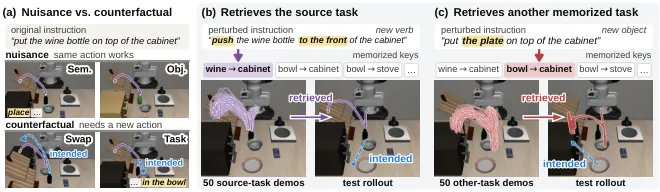
BIND: Binding 3D Robot Actions to 2D Image Features
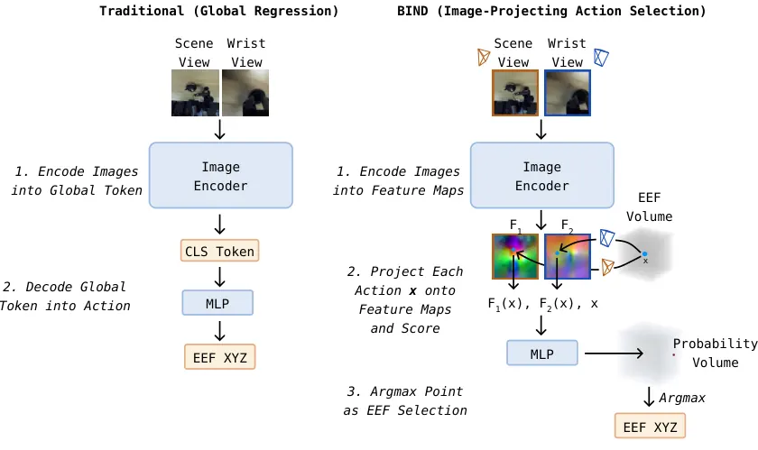
PRICE the Action Chunks: Physical Relational Credit Assignment for Embodied Reinforcement Learning
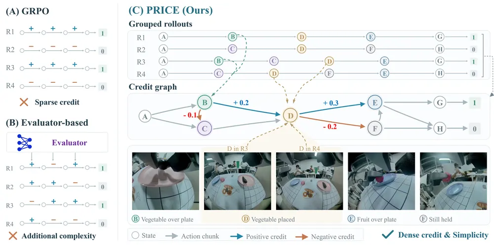
Beyond the Remembered World: Predictive 4D Belief for Persistent Navigation in Evolving Worlds
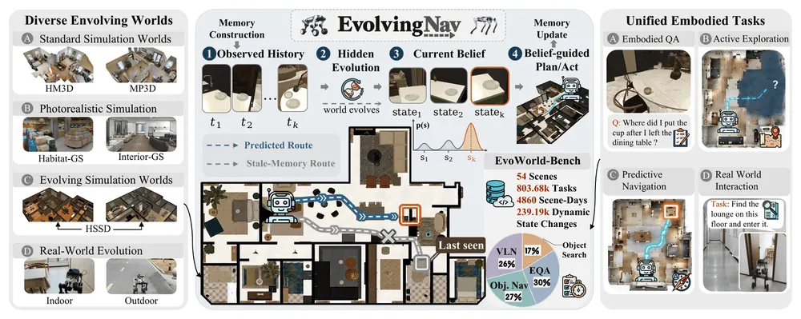
EWAM: Emergent Depth-Wise Specialization in a Unified Embodied Model -- From Semantic Understanding through Visual Foresight to Action
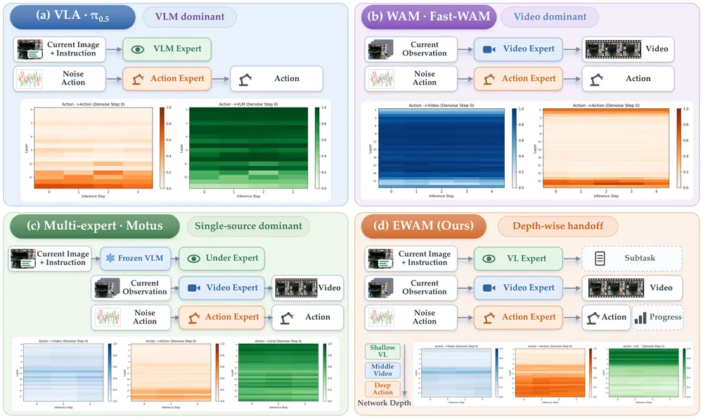
ChronoGraph: Functional 4D Scene Graphs with Vision-Language Models for Interaction Understanding and Grounded Planning
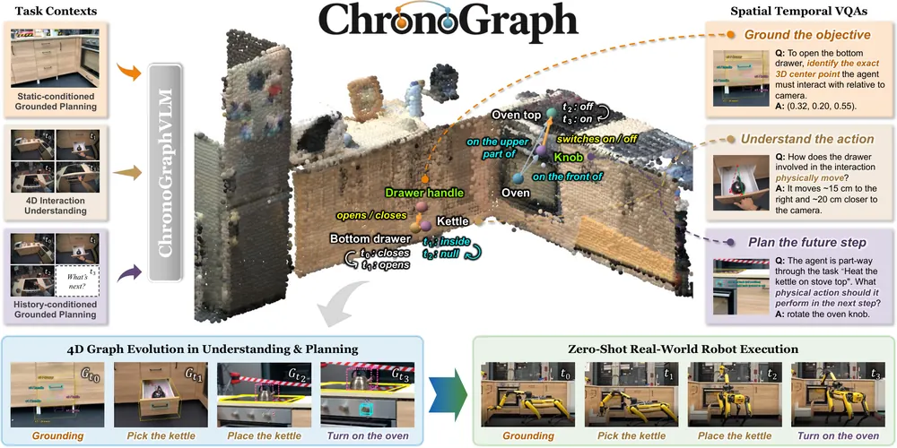
The Planning Limits of Latent World Models
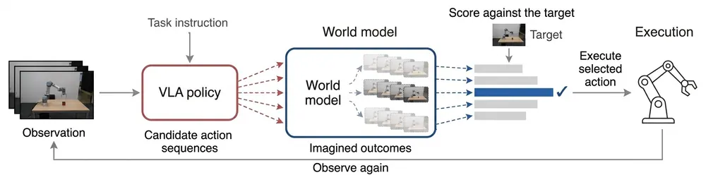
RoboCoach: World Models as Active Coaches for Compositional Robot Skills
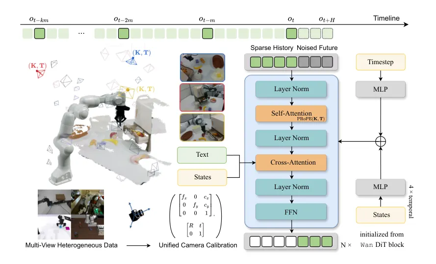
Text-to-3D Policy: Fine-Grained Language-Behavior Alignment for Unseen Specification Generalization
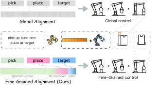
Correcting WHERE, Preserving HOW: Compositional Generalization for Vision-Language-Action Models via Referential Guidance
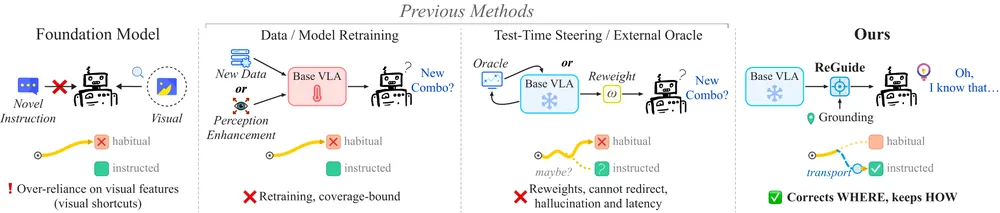
Asking the World: Generalist Physical Reasoning through Agentic World Modeling and Probing
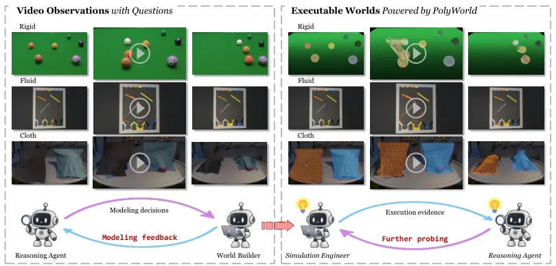
GroundingPI: A Grounding Foundation Model towards Physical Intelligence with Visual Primitives
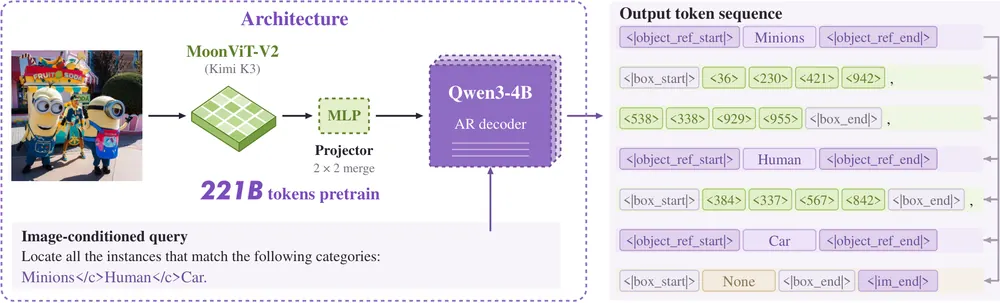
Looking Back to Move Forward: Temporal Verification for Generative Robot Policies
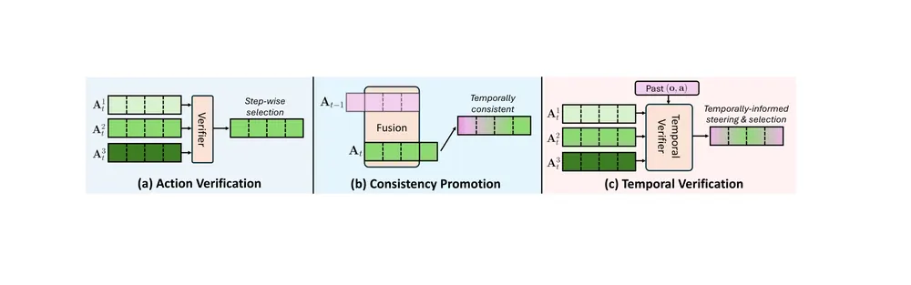
PneuTac: Tactile Manipulation with Soft Pneumatic Robots via Unified MPM-Gaussian Splatting Simulation
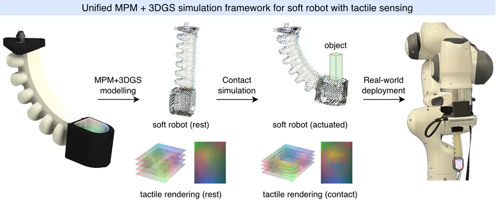
Function beyond Form: Functional Correspondence for Cross-Embodiment Dexterous Grasp Generation
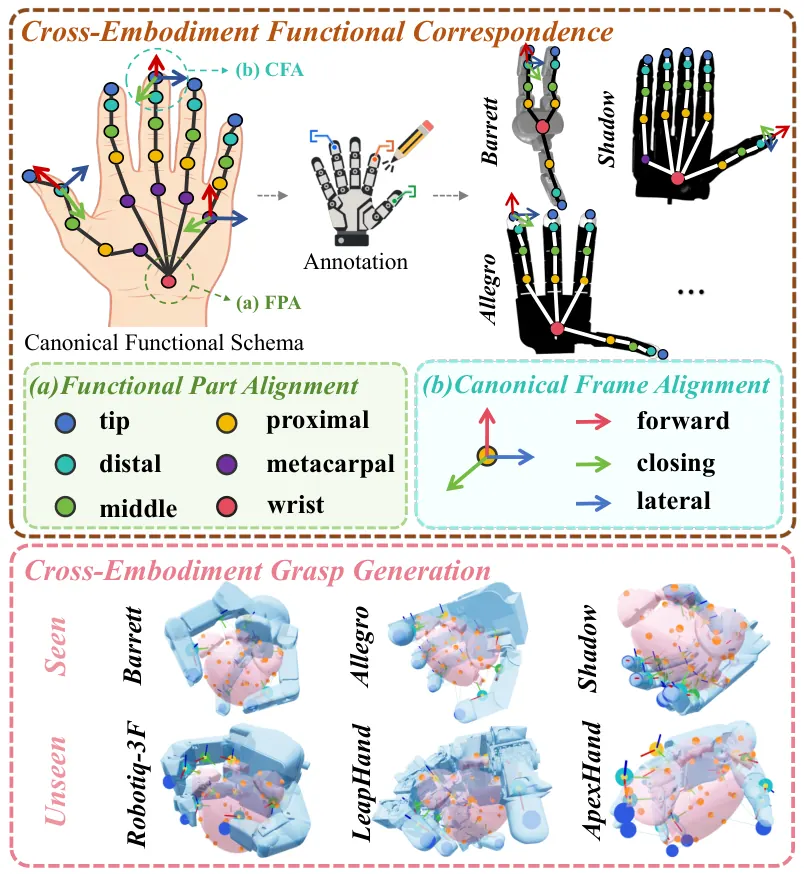
오늘의 핵심 연구 트렌드 종합
- VLA의 instruction-action binding 실패 진단 — Equivariant Counterfactual Training과 ReGuide가 VLA가 language·vision에는 반응하면서도 둘을 결합해 올바른 action을 못 고르는 binding 실패를 서로 다른 각도(counterfactual training vs. training-free rebinding)에서 공략함. 둘 다 LIBERO position-swap을 testbed로 쓰고 실로봇에서 큰 폭(각각 8%→88%, 최대 75.0%p)의 개선을 보임.
- world model의 planning 유효 범위를 직접 측정하는 흐름 — The Planning Limits of Latent World Models가 plannable range가 5~10 step에 불과함을 수치로 입증했고, RoboCoach는 그 한계를 world model 상상 rollout으로 실패 subtask를 진단해 우회하고, EWAM은 world model과 VLA를 한 transformer로 통합해 다른 방식으로 접근함.
- action representation에 geometry·structure prior를 명시적으로 주는 흐름 — BIND는 3D action 후보를 camera geometry로 2D feature에 투영해 OOD robustness를 얻고, FunCo-Grasp는 손 구조를 canonical frame으로 정렬해 cross-embodiment 일반화를 얻음. 둘 다 추가 학습 없이 structural prior로 문제를 해결함.
- 4D·시간 축을 더한 scene representation — ChronoGraph와 EvolvingNav는 각각 affordance 기반 action-conditioned scene graph와 persistence-relocation belief로, 관측 사이 변하는 환경의 과거·미래 상태를 명시적으로 추적함.
- outcome-only label에서 fine-grained credit·verification을 뽑는 흐름 — PRICE는 action chunk 단위 credit을, Looking Back to Move Forward는 temporal energy-based verifier를 추가 evaluator 없이 뽑아냄.
- 정밀 language grounding 전용 모델·표현 — GroundingPI와 Text-to-3D Policy는 범용 VLM·video backbone의 grounding 약점을 지적하고 각각 전용 grounding foundation model, fine-grained token-level alignment로 해결함.
유망 연구 방향 및 프로젝트 제안
VLA 내부 상태 기반 실시간 실패 진단·복구 모듈 - research question: VLA가 familiar-but-wrong trajectory를 재현하는 순간을 rollout 중 internal state만으로 검출하고 test-time에 교정할 수 있는가 - 접근·novelty: ECT의 counterfactual probe·prefix-KV intervention, Looking Back to Move Forward(TeV)의 energy-based temporal verifier, BIND의 image-bound feature uncertainty를 하나의 online monitor로 결합. 기존 연구는 진단(ECT)과 교정(TeV·BIND)을 따로 다룸 - 왜 지금·경쟁 prior works: 세 논문 모두 이번 주 공개, 서로 다른 신호(counterfactual readout, energy, projected feature)를 쓰므로 결합 여지가 큼 - risk·target venue: online 개입이 정책 안정성을 해칠 risk 있고 신호 간 상충 가능. target CoRL/RSS
world model의 plannable range 안에서만 동작하는 subgoal 생성기 - research question: plannable range(5~10 step) 밖의 장거리 target을 world model이 다루게 하려면 subgoal을 어떻게 자동 생성해야 하는가 - 접근·novelty: Planning Limits가 수치로 입증한 한계를 RoboCoach의 world-model-in-the-loop 진단, ChronoGraph의 affordance transition 예측과 묶어 subgoal sequence를 world model 스스로 뽑게 함 - 왜 지금·경쟁 prior works: Planning Limits가 처음으로 한계를 정량화했고 이를 메우는 후속 연구가 아직 없음 - risk·target venue: subgoal 품질이 전체 성능을 좌우하고 평가 설계가 어려움. target NeurIPS/CoRL
functional correspondence를 object affordance·scene graph로 확장 - research question: FunCo-Grasp의 손 간 canonical frame 정렬을 물체 instance 간 기능적 대응(손잡이, 버튼 등)에 적용하면 cross-category manipulation이 가능한가 - 접근·novelty: canonical frame + diffusion grasp generation을 ChronoGraph의 affordance part node와 결합해, 새 object category에 fine-tuning 없이 전이함 - 왜 지금·경쟁 prior works: 두 논문 모두 이번 주 공개, canonical frame과 affordance node가 구조적으로 유사해 바로 결합 가능 - risk·target venue: object는 손보다 기구학적으로 다양해 canonical frame 정의 자체가 어려움. target CoRL/ICRA
outcome-only RL credit을 failure localization에 재활용 - research question: PRICE의 cross-trajectory physical relational graph를 성공 여부가 아니라 "어느 chunk가 실패를 유발했는가" 라벨링에 쓸 수 있는가 - 접근·novelty: PRICE의 potential 차이를 failure chunk 식별 신호로 재정의하고 RoboCoach의 progress judge와 결합해 반복 실패 subtask를 자동 태깅함 - 왜 지금·경쟁 prior works: PRICE 자체가 "같은 상황에 도달한 rollout의 상호 참조"라는 재사용 가능한 틀을 이미 제공함 - risk·target venue: PRICE의 credit 방향 오류가 2.5% 존재해 실패 원인과 결과 chunk를 혼동할 risk 있음. target CoRL
시간에 따라 변하는 환경에서 scene graph를 belief로 유지 - research question: EvolvingNav의 persistence-relocation belief를 object-centric 3DGS·scene graph에 통합해 로봇이 안 보는 사이 바뀐 물체 상태를 추론할 수 있는가 - 접근·novelty: belief filter를 scene graph node의 confidence·위치 분포로 표현하고 ChronoGraph의 action-conditioned transition과 결합함 - 왜 지금·경쟁 prior works: 두 논문 모두 "안 보이는 동안의 변화"를 다루지만 navigation과 manipulation으로 분리돼 있어 결합 여지가 큼 - risk·target venue: belief update 연산 비용이 real-time 제약과 부딪힐 risk 있음. target RSS/CoRL
오늘 반드시 읽어야 할 논문
- Equivariant Counterfactual Training (When Instructions Retrieve Trajectories) — VLA의 instruction-action binding 실패를 mechanistic하게 규명하고 실로봇 success rate를 8%→88%로 올린, 오늘 전체에서 가장 강한 리뷰(86점)
- BIND: Binding 3D Robot Actions to 2D Image Features — camera geometry를 action head에 명시적 prior로 넣어 5 demo로 near-perfect 성공과 OOD robustness를 동시에 얻음
- PRICE the Action Chunks — 추가 evaluator 없이 outcome label만으로 action chunk 단위 credit을 뽑고 이론적 bound까지 제시함
- Beyond the Remembered World (EvolvingNav) — 계속 변하는 환경에서 target 위치를 belief로 추론하는 새 navigation 문제 정의와 실로봇 검증
- EWAM — VLA와 world-action model을 한 transformer로 통합했을 때 layer-wise specialization이 자연 발생함을 causal intervention으로 입증
- ChronoGraph — 4D interaction understanding과 spatially grounded planning을 같은 affordance scene graph로 묶은 표현
- The Planning Limits of Latent World Models — world model 기반 planning의 유효 거리가 5~10 step에 불과함을 처음 정량화
- RoboCoach — world model 안에서 반복 실패 subtask를 찾아 해당 skill expert만 선택적으로 업데이트, 150개 demo로 성공률을 13.3%→75.0%까지 올림
- Text-to-3D Policy — unseen specification generalization을 새 문제로 정의하고 instruction-behavior token alignment로 해결
- ReGuide — VLA 재학습 없이 global grounding만 교정하는 training-free wrapper, 실로봇에서 75.0%p 개선
전체 1차 스크리닝 결과 (818편, 점수순) 펼치기
| # | 제목 | 점수 | 🤖 | 분야 | 한 줄 근거 |
|---|---|---|---|---|---|
| 1 | The Planning Limits of Latent World Models | 70 | 10 | World Model | latent world model이 planning에 쓸모 있는 범위는 학습된 rollout 길이 근처뿐이라는 한계를 체계적으로 규명함. 완벽한 시뮬레이터로도 20스텝 이상 목표에서 성공률이 92%에서 41%로 떨어짐을 보여 world model 연구에 중요한 시사점을 줌. |
| 2 | BIND: Binding 3D Robot Actions to 2D Image Features | 68 | 9 | VLA | 3D action 후보를 카메라 기하로 2D 이미지 feature에 직접 결합하는 새로운 action representation을 제안함. 5개 demo만으로 OOD 카메라·물체 위치에 강건한 실로봇 결과를 보임. |
| 3 | Beyond the Remembered World: Predictive 4D Belief for Persistent Navigation in Evolving Worlds | 68 | 9 | Navigation | 타겟이 관측 동안에도 이동할 수 있는 상황에서 시간 인덱스 belief로 위치를 추적·갱신하는 navigation 프레임워크임. VLN 우선주제에 직접 부합하고 시뮬레이션뿐 아니라 실로봇 실험까지 수행함 |
| 4 | Asking the World: Generalist Physical Reasoning through Agentic World Modeling and Probing | 68 | 7 | World Model | 비디오로부터 실행 가능한 physics world를 구성하고 질문에 맞춰 시뮬레이션과 개입으로 증거를 얻는 Asking the World 제안임. PolyWorld Engine으로 rigid/soft body와 유체까지 범용 시뮬레이션하며 CEM 기반 system identification으로 동역학을 역추정하는 설계가 test-time 추론 계획과 world model을 결합한 새로운 formulation이고 baseline 대비 개선폭도 크게 보고됨 |
| 5 | When Instructions Retrieve Trajectories: Diagnosing and Mitigating Generalization Failures in VLA Models | 66 | 10 | VLA | VLA가 언어와 비전을 각각은 반응하지만 결합해 행동을 바꾸지 못하는 instruction-action binding 실패를 규명함. 같은 지시가 장면에 따라 다른 행동을 요구하는 counterfactual 학습으로 실로봇 unseen 성공률을 8%에서 88%로 끌어올림. |
| 6 | PneuTac: Tactile Manipulation with Soft Pneumatic Robots via Unified MPM-Gaussian Splatting Simulation | 66 | 9 | Manipulation | MPM과 3D Gaussian Splatting을 결합해 soft pneumatic robot과 tactile membrane을 동시 시뮬레이션함. real-to-sim 보정 후 실제 tactile manipulation에서 baseline을 능가함. |
| 7 | Correcting WHERE, Preserving HOW: Compositional Generalization for Vision-Language-Action Models via Referential Guidance | 66 | 9 | VLA | grounding 결과로 global/local re-binding을 결합해 training-free하게 VLA의 compositional generalization을 개선함. 실로봇에서 최대 75pp 성공률 향상을 보임. |
| 8 | ChronoGraph: Functional 4D Scene Graphs with Vision-Language Models for Interaction Understanding and Grounded Planning | 65 | 9 | Embodied AI | 행동이 만든 상태변화를 설명하는 4D scene graph로 이해와 계획을 같은 표현으로 연결함. object-centric 4D representation·scene graph 우선주제에 직접 해당하고 실로봇 모바일 매니퓰레이션까지 시연함 |
| 9 | PRICE the Action Chunks: Physical Relational Credit Assignment for Embodied Reinforcement Learning | 64 | 9 | RL | 같은 물리적 상황에 도달한 rollout들을 서로의 참조로 삼아 보조 평가자 없이 action-chunk credit을 추정함. LIBERO·RoboTwin·실로봇에서 성공률과 학습 속도를 모두 개선함. |
| 10 | Function beyond Form: Functional Correspondence for Cross-Embodiment Dexterous Grasp Generation | 64 | 9 | Manipulation | 구조가 다른 손들 사이에 기능적으로 대응하는 부위를 정렬하는 functional correspondence 표현을 제안함. 미지의 손에 추가 데이터 없이 76% 실로봇 성공률을 보임. |
| 11 | RoboCoach: World Models as Active Coaches for Compositional Robot Skills | 64 | 9 | World Model | world model이 상상한 실패 지점을 바탕으로 어떤 demonstration을 어디서 모을지 결정하는 coaching loop임. 상상 성공률과 실제 성공률의 상관이 높고 두 실로봇 플랫폼에서 큰 개선을 보임. |
| 12 | EWAM: Emergent Depth-Wise Specialization in a Unified Embodied Model -- From Semantic Understanding through Visual Foresight to Action | 64 | 9 | VLA | VLA와 world-action model을 하나로 묶었을 때 층별로 semantic·미래예측·action에 순차적으로 집중하는 현상을 발견함. 사람 자아중심 영상 사전학습이 cross-embodiment 전이와 실로봇 강건성을 모두 높임. |
| 13 | Looking Back to Move Forward: Temporal Verification for Generative Robot Policies | 62 | 9 | VLA | 현재 관측만 보던 action verification을 과거 이력을 요약한 temporal token 조건으로 확장함. energy-based verifier로 flow sample 자체를 유도해 test-time scaling 성능을 높임. |
| 14 | Text-to-3D Policy: Fine-Grained Language-Behavior Alignment for Unseen Specification Generalization | 62 | 9 | VLA | 지시문과 행동을 토큰 단위로 양방향 대응시켜 미세한 언어-행동 구분을 보존함. Meta-World·ManiSkill·RoboTwin과 실로봇 전반에서 unseen specification 성공률을 크게 높임. |
| 15 | GroundingPI: A Grounding Foundation Model towards Physical Intelligence with Visual Primitives | 62 | 8 | VLA | VLA·world-action model의 perception 병목을 겨냥한 grounding foundation model GroundingPI 제안임. RoboTwin 2.0과 RoboCasa-GR1에서 OOD manipulation 성능을 크게 올리고 nuScenes 자율주행까지 검증해 perceptual pretraining이 physical intelligence의 기반이 된다는 주장을 실증적으로 뒷받침함 |
| 16 | What to Attend, What to Keep: Skill-Conditioned Visuotactile Representation with Progress-Guided Event Memory | 62 | 8 | Manipulation | skill별로 vision-touch 기여도가 달라진다는 관찰에서 progress-guided event memory를 제안함. slip-detection 지연을 87% 줄여 robot memory 주제와 직결됨. |
| 17 | Matisse: Evidence-Space Reasoning for Active 3D Reconstruction | 62 | 7 | 3D Vision | pretrained 3D 생성모델의 cross-attention evidence로 evidential uncertainty를 추정해 active view 선택과 keyframe 선택을 통합하는 Matisse 제안임. 미관측 구조에 대한 불확실성까지 추론한다는 점이 기존 active reconstruction 대비 본질적 차이이고 active perception/NBV 우선 주제와 정확히 맞음 |
| 18 | World-as-Graph: Relational World Modeling Through Latent Space Graphs | 62 | 7 | World Model | object-centric world model에 relational latent graph를 결합한 WAG 제안, JEPA 스타일 예측학습에 관계 귀납편향 추가하고 로봇 조작 태스크에서 성능 확인함 |
| 19 | Beyond Prediction: Steering VLM Agents with Retrospective World Modeling | 62 | 7 | World Model | 순방향 예측만 하던 기존 world model과 달리 상태전이로부터 행동을 역추론하는 retrospective world modeling을 제안함. self-consistency reward로 VLM agent의 물리적 일관성을 높이고 NeurIPS 2026에 accept됨 |
| 20 | Systematically Exploring the Capabilities of GPT-6 Astra as Embodied Policies | 60 | 9 | VLA | GPT-6 Astra를 조작·보행·내비게이션 등 6개 영역에서 범용 embodied policy로 체계 평가함. 결정 능력과 물리 제어 신뢰성 사이 간극을 드러낸 실증 연구임. |
| 21 | Online Evolution Strategy for Flow-Matching VLA Policies via Self-Supervised Trajectory Distribution Optimization | 60 | 9 | VLA | latent noise가 아닌 action trajectory 공간에서 evolution strategy로 flow-matching VLA를 온라인 적응시킴. 가치모델 없이 RL fine-tuning에 준하는 개선을 보임. |
| 22 | Benchmarking and Enhancing Skill-Level Memory for Partially Observable Robotic Manipulation | 60 | 9 | Manipulation | 부분관측 조작에서 반복·이력 회상·진행추적을 요구하는 HIDE 벤치마크와 SEEK 메모리 프레임워크를 제시함. robot memory 주제를 직접 다루며 실로봇 검증도 포함함. |
| 23 | OccluDex: Hierarchical 3D Visuo-Tactile Representation Learning for Egocentric Dexterous Manipulation under Self-Occlusion | 60 | 9 | Manipulation | 자기가림이 심한 상황에서 전역 기하와 국소 tactile 접촉을 계층적으로 결합한 표현학습임. Shadow Hand로 zero-shot sim-to-real 일반화를 보임. |
| 24 | Beyond the Current Scene: Event-Referential Grasping with Active View Selection | 60 | 9 | Manipulation | 과거 사건에서의 역할로 대상이 지칭되고 현재는 가려져 있는 상황의 zero-shot grasping을 다룸. event prior로 시점을 능동 선택해 occluded 상황 성공률을 55%에서 77%로 높임. |
| 25 | IronMind: Scaling Humanoid Dexterous Manipulation via Camera-Space Ego-Centric Pretraining | 60 | 9 | VLA | 카메라 공간 action representation으로 사람-로봇 retargeting 없이 1만 시간 자아중심 영상을 사전학습에 사용함. OOD 실로봇 과제 성공률을 5%에서 55%로 크게 높이는 스케일링 결과를 보임. |
| 26 | Magic-W0: A Structured World-Action Foundation Model for Physical Intelligence | 60 | 9 | World Model | 현재 3D 기하·3D motion transition·미래 semantics로 구조화된 world transition을 action과 layer별로 상호작용시킴. 대규모 사전학습 후 여러 실로봇 과제에서 빠른 적응을 보임. |
| 27 | Dream4ACT: A Shared Visual Action Interface for Multi-Embodiment Video-Action Modeling | 60 | 9 | World Model | URDF 기반 forward kinematics로 action을 가상 카메라 이미지로 렌더링해 embodiment마다 다른 action space를 통일함. RoboTwin2.0에서 89% 성공률로 학습된 디코더 없이 action을 복원함. |
| 28 | DynaHarness: A Dynamic Physical Harness for Self-Evolving Robot Agents | 60 | 9 | VLA | 느린 의미 추론과 빠른 물리 실행을 분리하고 실패 증거로 재사용 가능한 능력을 갱신하는 dynamic harness를 제안함. LIBERO-Pro에서 고정 정책 17.5%를 75.2%까지 끌어올림. |
| 29 | Game-Guided Skill Discovery through Self-Play for Playable Agent Control | 60 | 8 | RL | 게임 self-play로 사람이 직접 조작 가능한 discrete skill을 발견하는 GGSD, Ant·Franka-arm·Unitree G1 환경에서 검증하고 미학습 과제로 조합 전이까지 보임 |
| 30 | Optimize, Learn, Refine: Whole-Body Grasping and Pick-and-Throw with a Spiral Soft Robot | 60 | 8 | Manipulation | soft continuum robot의 whole-body grasping·pick-and-throw를 CMA-ES와 학습된 warm start로 최적화함. 실제 하드웨어에서 100% 성공률 달성함. |
| 31 | Yggdrasil: a Layer-First 3D Scene Graph for Real-Time Querying | 60 | 8 | 3D Vision | generation과 consumption 모두를 고려한 layer-first 3D scene graph 구조임. 기존 DSG 대비 최대 121배 빠른 질의 응답으로 3개 실제 파이프라인에 통합됨. |
| 32 | EmbodiRSI: Recursive Self-Improvement for Data-Efficient Robot Adaptation | 60 | 8 | Manipulation | real-to-sim-to-real 환경에서 실행 피드백으로 보정 궤적과 적응 데이터 수집을 동시에 닫는 recursive self-improvement 시스템임. 실로봇 10분 상호작용만으로 83% 성공률을 달성함. |
| 33 | SimEX: Simulation-Integrated Robotics AutoResearch | 60 | 8 | Embodied AI | coding agent가 시뮬레이션에서 먼저 robot toolbox를 만들고 소수 실물 trial로 시뮬레이터를 교정하는 2단계 autoresearch 구조임. 실로봇 작업을 시연 없이 10분 상호작용으로 익힘. |
| 34 | A Biophysically Detailed C. elegans Circuit as a Task-Agnostic Dynamical Core for Visually Robust Robot Manipulation | 60 | 8 | Manipulation | 136개 뉴런의 생물물리학적 C. elegans 회로를 고정된 dynamical core로 써서 visuomotor policy의 시각 교란 강건성을 얻음. 일반 신경망으로 교체하면 강건성이 사라짐을 실로봇으로 확인함. |
| 35 | PrefPI: Preference-Guided Steering into Out-of-Distribution Behaviors | 60 | 8 | RL | 선호 궤적을 조건부 생성모델로 보고 classifier-free guidance로 증폭해 초기 정책 분포 밖의 행동으로 steering함. 150개 선호 라벨만으로 실제 하드웨어에서 큰 행동 변화를 만듦. |
| 36 | MEND: Label-Free Detection, Localisation, and Correction of Latent Hallucination in World Models | 60 | 7 | World Model | 라벨 없이 world model의 latent hallucination을 denoising score로 탐지·국소화·보정하는 MEND 제안임. 자기 지도 world model의 조용한 오차 누적 문제를 정면으로 다루고 하나의 score field로 세 기능을 수행하는 설계가 failure detection·recovery 연구와 바로 연결됨 |
| 37 | GaugeVLM: Structuring Spatial Supervision with Measured Geometric Interventions | 60 | 4 | VLA | 3D scene에서 측정 가능한 기하 개입으로 preference margin을 만드는 GaugeDPO 제안임. spatial VQA에서 큰 개선폭 보이고 embodied reasoning/자율주행까지 일반화 주장함. VLM spatial supervision에 새로운 formulation을 제시한 점이 눈에 띔 |
| 38 | DSDyn-VLA: A Dual-Stream Dynamic Manipulation Framework with Motion Perception, Future Awareness, and Realtime Correction | 58 | 9 | VLA | perception·latency·control gap을 각각 optical flow 예측과 고주파 RL 보정으로 해결하는 dual-stream 구조임. 동적 물체 조작에서 PI0.5 대비 5~6배 성공률을 보임. |
| 39 | Ego4WAM: What Matters When Scaling Egocentric Human Data for Robot Learning? | 58 | 9 | VLA | 사람-로봇 정합성·데이터 다양성·지도 방식·사용 전략을 분리해 자아중심 데이터 스케일링에서 무엇이 중요한지 체계적으로 규명함. 실로봇과 RoboDojo closed-loop 평가로 검증함. |
| 40 | Memorize, Adapt, Ignore: Diagnosing Robot Learning Mechanisms under Training Data Variation | 58 | 8 | VLA | NTK를 진단 도구로 써서 domain randomization이 memorize에서 adapt로 전환되는 메커니즘을 규명함. VLA fine-tuning과 실로봇 ACT까지 검증한 분석 논문임. |
| 41 | Cue the Flow: Steering Flow-Matching Policies for Open-World Delivery Manipulation | 58 | 8 | VLA | grounding 결과를 spatial cue로 삼아 사전학습된 flow-matching VLA를 가벼운 adapter로 steering함. open-world delivery 조작에서 성공률을 거의 2배 높임. |
| 42 | ASENA: Self-evolving Agents for Embodied Navigation | 58 | 8 | Navigation | coding agent에 지속적 경험과 실행 중 복구를 결합해 navigation policy를 보조 도구로 통합함. R2R 성공률을 반복 수행만으로 72%에서 98%까지 끌어올림. |
| 43 | AVERT-VLN: Abstention-aware Visual Error Recovery and Training for Vision-and-Language Navigation | 58 | 8 | Navigation | VLN에서 경로 이탈을 감지하고 사람 교정을 요청·재사용하는 closed-loop recovery 프레임워크임. VLN·failure detection/recovery 두 우선주제에 직접 부합하며 R2R-CE·RxR-CE에서 검증함 |
| 44 | HIGS: Hierarchical Implicit Grids for Joint Geometric and Semantic Scene Understanding | 58 | 7 | World Model | multiresolution submap으로 기하와 semantic을 함께 임베딩하는 hierarchical implicit field HIGS 제안임. large-scale 실시간 매핑과 open-vocabulary grounding을 동시에 지원해 로봇 공간 인지에 바로 쓸 수 있음 |
| 45 | Inline Memory Meets Reusable Skills: Memory-centric Framework for Vision-Language-Action Model | 58 | 7 | VLA | VLA의 prefix stream에 memory token을 삽입해 query-skill memory bank로 skill을 재사용하는 Optimus-R 제안임. 파라미터 튜닝 없이 도메인 적응과 lifelong learning에서 catastrophic forgetting을 완화한다는 점이 robot memory 연구 방향과 정확히 맞음 |
| 46 | CADeT: Causal-Aware Deformation Transmission for Indirect Robotic Manipulation of Soft Tissue | 58 | 7 | Manipulation | structural causal model과 active sensing으로 간접 조직 변형 전달 모드를 추론함. dVRK와 ex vivo 돼지 조직 검증까지 포함한 수술로봇 연구임. |
| 47 | NEXUS: Perceptive Whole-Body Control for Terrain-Adaptive Teleoperation | 58 | 7 | RL | 지형이 다른 평지-비평지 간 모션 쌍을 대량 생성해 지형 적응형 whole-body teleoperation을 학습함. zero-shot 실로봇 다양한 지형 원격조작까지 검증함. |
| 48 | Exo2EgoHOI: Hand-Object-Interaction Aware Exocentric-to-Egocentric Video Generation | 58 | 6 | Manipulation | 4D hand-object interaction prior로 exo 영상을 ego 시점으로 변환해 로봇 학습용 데이터를 확장하는 Exo2EgoHOI 제안임. object consistency와 HOI 보존 개선폭이 크고 manipulation 데이터 스케일링이라는 실질적 문제를 다룸 |
| 49 | Blackout vs. Freeze: Analyzing Physical Failure Modes of VLAs under Camera Faults | 56 | 9 | VLA | blackout과 freeze라는 카메라 고장이 서로 다른 물리적 실패 양상을 일으킴을 실로봇에서 분석함. failure detection·recovery 설계에 직접 연결되는 실증 연구임. |
| 50 | Fiatlux: A Long-Horizon Benchmark for Humanoid Ladder Climbing and Light-Bulb Replacement | 56 | 8 | Embodied AI | 사다리 등반과 전구 교체를 한 에피소드로 묶은 long-horizon humanoid benchmark임. VLA 베이스라인 포함해 평가 체계를 제공함. |
| 51 | Plan-Conditioned Imitation for Robust Object Retrieval under Self-Occlusion in Dense Clutter | 56 | 8 | Manipulation | digital twin의 고정 teacher rollout을 따라가는 plan-conditioned imitation으로 self-occlusion 하 물체 검색을 해결함. UR5e에서 실행시간을 192초에서 67초로 줄임. |
| 52 | Make Code as Policy Great Again: Frontier Agents Write, Call, and Evolve Robot Tools | 56 | 8 | Manipulation | code-as-policy를 다시 가져오되 프로그래밍 agent와 실행 agent의 역할을 나눠 재사용 가능한 로봇 tool을 만들고 revise함. 실제 양팔로봇 7과제에서 검증함. |
| 53 | UniWAM Technical Report: Unified Mobile Manipulation via Mixed-Stream World-Action Modeling and Manipulation Anchor Pose Supervision | 56 | 8 | World Model | 내비게이션과 조작을 공유 backbone에 분리된 action head로 통합하고 조작 준비 자세를 이미지 평면 보조 지도로 학습함. 150만 에피소드 데이터와 24개 실로봇 과제로 검증함. |
| 54 | Beyond Policy Alignment: Closing the Planning-Learning Loop for Robot Control with Learned World Models | 56 | 8 | World Model | TD-MPC의 critic·terminal value 추정을 다단계 target과 불확실성 인지로 보강함. HumanoidBench에서 큰 개선을 보이고 KUKA 실로봇 zero-shot 전이까지 검증함. |
| 55 | Learning from Runtime Feedback through Failure-Bank Self-Evolution for Vision-Language-Action Models | 56 | 8 | VLA | CBF 기반 teacher의 반사실적 보정을 LoRA 업데이트로 흡수해 runtime shield를 정책 자체 개선으로 바꿈. failure-driven 지속 개선이라는 점에서 failure recovery 주제와 직결됨. |
| 56 | SplineWAM: Adaptive Action Horizons for World Action Models via B-Spline Representations | 56 | 8 | World Model | 고정 action chunk 대신 B-spline으로 동작 복잡도에 맞춰 action horizon을 가변적으로 압축함. LIBERO-Plus와 양팔 실로봇에서 호출 횟수를 줄이며 성능을 높임. |
| 57 | Multi-Link Safety Filtering for VLA Policies Around Moving Hazards | 56 | 8 | VLA | end-effector뿐 아니라 팔 전체를 ellipsoid로 감싸고 optical flow로 위험물을 추적하는 training-free safety shield임. edge GPU에서 2.2ms로 동작하며 실로봇 충돌을 3분의 1로 줄임. |
| 58 | Tactile Curiosity Drives Robot Interaction | 56 | 8 | RL | 모델 불확실성을 촉각 채널로 좁혀 접촉이 없는 자유공간 탐색을 줄이는 curiosity 방법임. task reward 없이 조작을 학습하고 VLA post-training에도 샘플 효율적으로 기여함. |
| 59 | Social-WM: Safety-Aware Latent World Models for Robot Social Navigation | 56 | 8 | World Model | 명목 action과 실제 실현된 action의 차이를 latent world model로 학습해 실행 전 안전 신호를 얻음. 사람 충돌률을 21.67%로 줄이며 zero-shot으로 다른 환경에도 전이함. |
| 60 | Learning to Plan from Random Exploration | 56 | 7 | RL | action·reward 라벨 없이 random exploration만으로 horizon별 시간적 관계를 학습해 장거리 계획을 하는 방법 제안임. 조건부 energy-based model로 geodesic 기하와 연결성을 분리해 학습하고 manipulation 계획까지 suboptimal 데이터로 검증해 policy 개선 학습 없는 planning이라는 formulation이 새로움 |
| 61 | Vision-Language-Action Autonomous Driving Agent with Language-based Memory | 55 | 6 | VLA | 언어 기반 메모리를 CoT 확장으로 출력해 VLA 자율주행 에이전트의 장기 기억 문제를 다루는 AD-Memo 제안임. latent memory 대비 해석 가능하고 이식 가능한 memory 구조라는 점이 VLA의 memory 연구와 바로 연결됨 |
| 62 | GRC-Pose: Generation-Reconstruction Correspondence for Prior-Free 6D Object Pose Tracking | 55 | 6 | Manipulation | CAD 없이 generation-reconstruction correspondence로 6D object pose를 추적하는 GRC-Pose 제안임. object-scene correspondence와 posterior gating으로 occlusion에 강건하고 HOT3D에서 motion retention을 크게 개선해 manipulation의 핵심 perception 문제에 바로 쓰일 수 있음 |
| 63 | Uruqi: Learning Spatial Cognition from Visual Experience | 55 | 6 | Embodied AI | 연속적인 시각 경험으로 self-motion tracking과 지속적 mapping을 학습시키는 Uruqi 제안임. 1만 건 이상의 모티프 기반 카메라 궤적으로 atomic spatial capability를 학습시킨다는 formulation이 embodied spatial reasoning 우선 주제에 정확히 부합하고 개선폭도 큼 |
| 64 | GroundAnything: Reconciling Parallel Decoding with Precise Visual Grounding at Flash Speed | 55 | 6 | VLA | bidirectional diffusion으로 grounding을 병렬 디코딩하는 GroundAnything 제안임. autoregressive grounding의 순차적 지연을 없애면서 정확도도 유지해 latency-sensitive 로봇 인식 파이프라인에 바로 쓸 수 있음 |
| 65 | NavHarness: Adaptive Goals for Agentic Vision-Language Navigation | 55 | 6 | Navigation | Goal·Verify·Memory·Visuomotor agent로 역할을 분리한 agentic VLN 프레임워크임. 실제 환경 8개 경로에서 83.3% 성공률을 보여 VLN의 장기 일관성과 추론 비용 문제를 함께 다룬 점이 우선 주제와 직접 맞음 |
| 66 | LOCI: Spatial Linear Memory for Streaming World Models | 55 | 6 | World Model | key-value cache와 카메라 기하 조건부 recurrent linear memory를 함께 쓰는 hybrid 구조 LOCI 제안임. 재방문 장면을 재현하는 능력과 메모리 효율을 동시에 개선해 streaming world model의 robot memory 문제에 실질적으로 기여함 |
| 67 | Loop-Free Inverse Reinforcement Learning via Sequential Value Recovery with Q-Score Matching | 55 | 6 | Manipulation | diffusion policy의 action-gradient 구조로 bi-level 최적화 없이 IRL 수행하는 LFIRL 제안, Franka Kitchen·Adroit Hand Pen·Push-T 등 실제 조작 벤치마크에서 검증함 |
| 68 | Markovian Dynamics Enforcer: Feasibility Preserving Correction on Learned Dynamics Manifolds | 55 | 6 | World Model | 학습된 동역학 매니폴드에 궤적을 투영해 물리적 타당성을 사후 보정하는 MaDE 제안, 로보틱스·제어 분야 NeurIPS 논문이고 차량 궤적에서 베이스라인 대비 큰 잔차 개선을 보임 |
| 69 | SpatialCORE: Confidence-Aware Grounded Spatial Reasoning in Large Vision--Language Models | 55 | 5 | Embodied AI | grounding confidence를 보상에 반영해 spatial reasoning을 강화학습으로 개선하는 SpatialCORE 제안임. confidently localized object에서 reasoning하도록 유도하는 설계가 embodied spatial reasoning 우선 주제와 직접 연결됨 |
| 70 | 4MT-VLM: How Coarse Is a VLMs Cognitive Map? | 55 | 5 | Embodied AI | VLM의 cognitive map 해상도를 시점 변화로 테스트하는 벤치마크임. embodied spatial reasoning 우선주제와 맞닿아 있고 frontier 모델의 급격한 성능 붕괴를 수치로 보여줌 |
| 71 | Why Do Conventional World Models Fail to Learn Cellular Automata? | 55 | 5 | World Model | transformer·diffusion 기반 world model이 cellular automata의 정확한 동역학을 못 배우는 이유를 공간·시간 locality와 안정성 결여로 규명함. 구조 수정만으로 거의 완벽한 rollout을 달성한 깔끔한 분석 |
| 72 | LongTake: Learning to Sustain Dynamics in Long-Horizon Video Generation | 55 | 3 | World Model | 긴 teacher forcing으로 autoregressive video diffusion의 장기 동역학 붕괴를 완화하는 LongTake 제안임. world model의 long-horizon rollout 안정성 문제를 직접 다뤄 관련성 있고 실험적 증거도 구체적임 |
| 73 | Sparse-WAM: Accelerating World Action Models via Action-Guided Sparse Imagination | 54 | 8 | World Model | action-to-future attention의 중첩을 이용해 world-action model의 denoising에서 관련 토큰만 선택적으로 처리함. training-free로 2배 가속하며 성능을 거의 유지함. |
| 74 | Exploiting Vulnerabilities: Universal Adversarial Attacks on Vision-Language-Action Models in Robotics | 54 | 8 | VLA | 표면 텍스처를 최적화한 구를 놓는 것만으로 VLA의 trajectory·action을 동시에 교란하는 universal adversarial object를 제시함. 실로봇·시뮬 모두에서 성공률을 큰 폭으로 떨어뜨림. |
| 75 | LocoWM: High-Precision Locomotion through World-Model-Guided Residual Adaptation | 54 | 8 | World Model | action-conditioned world model이 예측한 미래 상태로 residual을 선제적으로 보정하는 locomotion 프레임워크임. 지형·가속·푸시 회복 전반에서 reactive residual 대비 우위를 보임. |
| 76 | MotionWeave: Learning Motion-Centered Future Dynamics for Vision-Language-Action Policies | 54 | 8 | VLA | 미래 영상 전체 대신 action이 유발하는 국소 상호작용 영역만 motion cue로 추출해 action-chunk를 보강함. MetaWorld에서 π0 대비 8.6%p 성공률 향상을 보임. |
| 77 | Discrete Forcing: Infusing Discrete Guidance into Continuous Denoising for Few-Step Action Experts | 54 | 8 | VLA | discrete action token으로 거친 구조를 먼저 잡고 continuous token으로 세부를 정제하는 coarse-to-fine action expert임. 실로봇 고정밀·동적 조작에서 개선을 보임. |
| 78 | ChunkTrust: Adapting Execution Horizons for Robot Policies with Action-Expert Evidence | 54 | 8 | VLA | action chunk 실행 길이를 고정 hyperparameter가 아닌 action-expert evidence로 추론하는 방식임. 여러 backbone과 실제 가정 환경 과제에서 일관된 성능 개선을 보임. |
| 79 | Toward Real-Time VLAs: Stage-Aware Two-Step Flow Denoising and System-Level Evaluation | 54 | 8 | VLA | 속도장이 초반엔 안정적이고 후반에 방향 보정이 커진다는 관찰로 2단계 비균등 denoising을 제안함. 실제 의류 접기 장기 과제에서 시스템 수준 평가까지 수행함. |
| 80 | Learning Skills from Historical Action Trajectories: Action Experience Dictionary for World Action Models | 54 | 7 | Manipulation | 과거 행동 궤적을 공유 embedding으로 인코딩해 World Action Model의 skill 재사용을 가능하게 하는 Action Experience Dictionary 제안임. cross-task와 cross-embodiment 실로봇 실험까지 검증해 skill chaining·재사용이라는 우선 주제에 바로 닿아 있음 |
| 81 | SynIL: Leveraging Synergy for Offline Imitation Learning from Imperfect Demonstration Datasets | 54 | 7 | RL | motor synergy 기반 label-free demonstration 품질 평가로 offline IL을 개선함. D4RL·Robomimic에서 BC 대비 우위를 보임. |
| 82 | Dense Temporal Motion Retargeting for Legged Robots | 54 | 7 | RL | timing과 control을 동시 최적화하는 dense temporal motion retargeting을 제안함. GPU 병렬 sampling MPC로 기존 대비 19배 빠르면서 더 정밀함. |
| 83 | Locomotion-Grounded Humanoid Soccer: Task-Gated Reinforcement Learning of a Multi-Directional Kicking Library | 54 | 7 | RL | 범용 locomotion을 먼저 학습하고 킥 스킬을 task-gated layer로 얹는 역발상 구조임. 29-DoF G1 실로봇에서 7가지 킥을 검증함. |
| 84 | DrivingBench: Can Vision-Language Models Drive a Toyota Corolla? | 54 | 7 | Embodied AI | 실제 자동차를 VLM이 직접 조향·속도 명령으로 운전하게 한 최초의 벤치마크임. GPT-6 Astra만 완주해 모델 간 큰 격차를 드러냄. |
| 85 | Tool-Policy Co-Design for Powder Weighing in Laboratory Automation | 54 | 7 | Manipulation | 분말 계량 도구 형상과 제어 정책을 bi-level 최적화로 함께 설계하는 새로운 패러다임임. 7개 재료에서 기존 도구 대비 오차를 45% 줄임. |
| 86 | AssemblyWorld: Rethinking 3D Assembly with General-Purpose Agents | 54 | 6 | Manipulation | 범용 agent가 fine-tuning 없이 시각적 상호작용만으로 3D 조립을 수행할 수 있는지 평가하는 AssemblyWorldBench 제안임. part accuracy와 complete-assembly success의 큰 격차를 드러내 manipulation 계획·실행 간 간극을 정량화함 |
| 87 | Video2SwimFish: An Automated Pipeline for Reconstructing Controllable Fish Models and Biological Locomotion from Real Fish Videos | 54 | 6 | 3D Vision | 실제 물고기 영상에서 VLM actor-critic으로 articulation을 생성해 controllable fish asset을 만듦. task 성공과 개체별 운동 충실도가 함께 가지 않는다는 점을 지적함. |
| 88 | LIBERO-Agent: Evaluating General-Purpose Agents for Direct Embodied Manipulation | 52 | 8 | Embodied AI | 범용 agent가 스스로 관측을 고르고 도구를 써서 직접 조작하게 하는 agent-native 벤치마크임. 짧은 과제는 잘하지만 장기 과제에서 신뢰도가 급격히 떨어짐을 보임. |
| 89 | CEER2: Directional and Tunable End-Effector and Root Compliance for Humanoid Loco-Manipulation | 52 | 7 | RL | 방향별 조절 가능한 end-effector·root compliance를 계층적 RL로 구현한 humanoid loco-manipulation 프레임워크임. 실로봇에서 협력 운반까지 시연함. |
| 90 | AdaOcc: Adaptive 3D Occupancy Prediction for Embodied Tasks | 52 | 6 | Embodied AI | 다양한 센서 입력과 연산 예산에 적응하는 point 기반 3D occupancy 예측 AdaOcc 제안임. embodied 배포 요구사항(센서 구성, 연산 예산 가변성)을 정면으로 다루고 실제 임베디드 시스템 적용 가능성을 보임 |
| 91 | StreamRig: Exploiting Intra-Rig Geometry for Streaming Multi-Camera Odometry | 52 | 6 | Navigation | frozen multi-view 3D foundation model 위에 rig 기하를 압축하는 causal streaming odometry StreamRig 제안임. 시뮬레이션만으로 학습해 휴머노이드 로봇 데이터셋에서도 zero-shot으로 드리프트를 줄여 모바일 로봇 실시간 odometry에 실질적으로 유용함 |
| 92 | Do Better Goal Representations Improve Goal-Conditioned Reinforcement Learning? | 52 | 6 | RL | offline goal-conditioned RL에서 goal representation보다 state representation이 성능의 진짜 병목임을 OGBench 내비게이션에서 실증함 |
| 93 | Soft Spatial Reasoning | 52 | 5 | Embodied AI | spatial reasoning CoT에서 토큰을 하드하게 고정하지 않고 soft state로 유지하는 AdaptSoft 제안임. 조기 discretization 문제를 다루는 설계는 새롭지만 spatial 태스크 한정 검증임 |
| 94 | Emergent Multi-View Geometry Through Self-Distillation | 52 | 4 | 3D Vision | RGB 재구성 없이 self-distillation만으로 multi-view geometry를 학습하는 Poincar3 제안임. correspondence·pose·3D reconstruction에서 DINOv3 등 기존 self-supervised 표현을 능가해 로봇 시각 foundation 표현으로 쓸 여지가 있음 |
| 95 | PhasePlan: Ordered Future-Phase Planning for Robot Brain Models | 50 | 8 | VLA | 고정 길이 action chunk가 task phase 경계를 가린다는 문제를 미래 phase 예측으로 해결함. conveyor-belt 조작에서 π0.5 대비 offline joint-action 오차를 22.5% 줄임. |
| 96 | DODGER: Safety-Guided Reinforcement Learning for Robot Navigation Among Dynamic Obstacles | 50 | 7 | RL | CBF 필터를 직접 실행하지 않고 reference로만 써서 policy의 탐색 제약을 줄인 안전 RL임. 실제 humanoid LiDAR 내비게이션까지 검증함. |
| 97 | SteerQuant: Steering Quantization Error with Action-Guided Scaling in World-Action Models | 50 | 7 | World Model | stream마다 quantization 오차가 action에 미치는 영향을 매핑해 4-bit 양자화를 조정함. 실제 양팔로봇에서 BF16 대비 1.35배 가속하며 성능 유지함. |
| 98 | Concurrent Semantic Search and Mission Execution for LTL Missions in Unknown Environments | 50 | 7 | Navigation | VLM 기반 scene graph와 LTL mission automaton을 결합해 탐색과 임무 수행을 동시에 진행함. photorealistic 환경에서 더 짧은 경로로 더 많은 미션을 완수함. |
| 99 | From Local Whole-Body VLA Behaviors to Scene-Scale Aerial Manipulation | 50 | 7 | VLA | 물리 플랫폼 시연 없이 합성 궤적으로 aerial manipulator VLA를 학습하고 latency를 보정해 실행함. 실제 articulated UAM에서 다중 사이트 임무를 검증함. |
| 100 | Experience-Driven Continual Learning of Terrain Traversability for Quadruped Robots | 50 | 7 | RL | 접촉 전 이미지로 접촉 후 결과를 예측하는 evidential regressor를 지속학습으로 갱신함. Unitree Go2 실제 시퀀스에서 gated replay의 효과를 검증함. |
| 101 | DiffWAM: A Fast and Efficient Navigation World Action Model | 50 | 7 | World Model | frozen video model의 예측 feature에서 직접 3D 카메라 궤적을 복원해 future-video decoding을 생략함. Jetson에서 1초 수준 지연으로 실시간 UAV 내비게이션을 구현함. |
| 102 | RL-Guided PAC-NMPC for Probabilistically-Safe Perception-Based Navigation in Unknown Environments | 50 | 7 | RL | RL로 학습한 확률 모델을 PAC-NMPC의 hard constraint로 써서 통계적 충돌 확률 보장을 유지함. 고정익 UAV 실제 비전 기반 내비게이션으로 검증함. |
| 103 | STARS: From Spatiotemporal Dynamics to Social Representations in Human-Robot Interaction | 50 | 7 | Navigation | 사회적 내비게이션에 필요한 시공간·사회적 추론을 VQA로 평가하는 벤치마크임. 최고 성능 VLM도 규칙 기반 baseline보다 낮아 현재 VLM의 한계를 드러냄. |
| 104 | GPU-Accelerated Path-Dependent Marginal Information Gain for Autonomous Exploration | 50 | 7 | Navigation | depth buffer로 경로 상 시야 중첩을 GPU에서 병렬 계산해 marginal information gain을 근사함. 최대 118배 가속하며 실제 탐사 시간을 30% 줄임. |
| 105 | Learning to Explain While Planning: Rule-Aligned Diffusion Planning for Autonomous Driving | 50 | 6 | Navigation | 자율주행 diffusion planner에 미분가능 주행 규칙을 내재화하고 규칙별 기여도를 attribution으로 설명하는 RADP 제안, nuPlan closed-loop에서 안전 시나리오 개선 확인함 |
| 106 | Drone Soccer: Learning to Manipulate with Multicopter Downwash | 50 | 6 | Manipulation | downwash를 방해물이 아닌 조작 도구로 적극 활용하는 드론 축구 과제를 제안함. 단순화된 동역학 모델로 RL 학습 후 실세계 전이까지 검증함. |
| 107 | TERRA: Terrain-Aware Reconstruction, Retargeting and Control for Musculoskeletal Locomotion | 50 | 6 | RL | 지형 정보 없는 모션 데이터에서 terrain-aware retargeting으로 근골격 locomotion을 학습함. 9.4시간 데이터로 단일 정책을 비평탄 지형에 일반화함. |
| 108 | Occlusion-Aware, Quasi-Static, Stability-Oriented Trajectory Planning on Uneven Terrain | 50 | 6 | Navigation | 지형 가림을 coverage 기반 epistemic uncertainty로 모델링해 off-road 경로계획에 반영함. 6개 야외 환경 실제 로봇 실험으로 실패율을 절반 이하로 줄임. |
| 109 | EgoTools: Towards Tool-Centric Reasoning in Real-World Egocentric Videos | 50 | 5 | Embodied AI | 도구 사용 중심의 egocentric 추론을 다루는 EgoTools 데이터·벤치마크 제안임. affordance, hand-tool-object geometry, 절차적 진행을 포괄해 manipulation과 직결되는 reasoning을 측정하며 현재 모델의 한계도 구체적으로 드러냄 |
| 110 | KilometerVision: A New Frontier for Large-Scale Spatial Intelligence in VLMs | 50 | 5 | Embodied AI | 1km 규모 실제 비디오에서 지리적 레이아웃 이해를 평가하는 KilometerVision 벤치마크 제안임. VLM이 path integration 대신 2D 인식과 텍스트 매칭에 의존한다는 발견이 embodied spatial reasoning의 근본적 한계를 드러냄 |
| 111 | FrameMorrow: Future-guided Frame Selection with Prospective Tokens for Long-Horizon Video Generation | 50 | 4 | World Model | 현재가 아니라 미래 정보 필요성에 따라 과거 프레임을 선택하는 FrameMorrow 제안임. action-conditioned world model을 포함해 11개 생성 모델에 plug-and-play로 붙는 범용성이 있고 장기 일관성 개선폭도 구체적임 |
| 112 | Physis-Lang: Self-Evolving Language as a Physical Representation for Video World Model | 50 | 4 | World Model | 물리 과정을 설명하는 언어를 데이터 큐레이션·학습·생성 전반의 공유 표현으로 쓰는 Physis-Lang 제안임. assertion 단위 평가로 캡션을 자기진화시켜 물리적 타당성을 개선한다는 점이 world model의 물리 일관성 문제에 새로운 접근을 제시함 |
| 113 | OPTS-TTPO: Enhancing Finite-Sample Policy-Gradient Learning with Tree Search | 50 | 4 | RL | on-policy tree search로 policy gradient의 희귀 고보상 경로 커버리지를 높이고 bias를 이론적으로 제어함. MuJoCo·Atari에서 PPO 대비 개선 확인됨 |
| 114 | PhyProbe: Rethinking Physical Consistency Evaluation in Generated Videos | 50 | 3 | Video | 생성 비디오의 물리적 일관성을 ranking과 regression을 결합해 평가하는 PhyProbe 제안임. world model 평가 지표로 쓸 수 있어 관련성 있으나 평가 방법론 자체의 novelty는 중간 수준임 |
| 115 | Beyond Layers: Position-Resolved Gradient Conflict and Position-Aware Modulation for Unified Multimodal Models | 50 | 0 | Multimodal | unified multimodal model에서 이해-생성 gradient 충돌을 position 축으로 분해한 분석임. layer 기준 분석을 넘어선 축을 제시한 점이 새롭지만 로보틱스와는 거리가 있음 |
| 116 | Scale and Selection: What Makes Automatic Harness Evolution Work for Visual-Interface Robot Agents | 48 | 7 | Embodied AI | 로봇 harness를 다른 coding agent가 자동 개선하게 하고 rollout 수와 champion-challenger 선택이 핵심임을 밝힘. visual-interface 로봇 agent에서 held-out 성공률을 51%에서 67%로 높임. |
| 117 | HiWE: Hierarchical World Knowledge Model with Visual Keypoint Enhancement for Zero-Shot 3D Path Planning | 48 | 7 | VLA | point 기반 인터페이스로 visual grounding과 language planner를 연결해 zero-shot 3D path planning을 수행함. 14개 시뮬 과제와 4개 실로봇 과제로 검증함. |
| 118 | Neuro-Symbolic Predicate Learning for Semantic Safe Robot Control | 48 | 7 | RL | 사람이 명시한 안전 규칙을 미분 가능한 reasoner로 학습해 해석 가능한 safety feature를 뽑아냄. 새 실로봇 안전 벤치마크 REASON을 함께 공개함. |
| 119 | A Reachability-based Safety Certificate for Dynamical System Motion Policies | 48 | 6 | Manipulation | backward reachability 기반 value function으로 DS motion policy의 안전성을 증명함. Franka 매니퓰레이터 검증으로 modulation·CBF의 saddle point 문제를 회피함. |
| 120 | ReWAM: Reciprocal World Action Models for Interactive Autonomous Driving | 48 | 6 | World Model | 다른 agent를 world model의 단순 구성요소가 아닌 상호 반응하는 의사결정자로 모델링한 게임이론적 world-action model임. 상호작용이 밀집한 NAVSIM 시나리오에서 큰 개선을 보임. |
| 121 | Making Waves: A Membrane-Coupled Delta Array for Manipulating Objects Below the Actuator Spacing | 48 | 6 | Manipulation | delta robot array의 end-effector를 신축 막으로 연결해 actuator 간격보다 작은 물체도 조작 가능하게 함. 하드웨어 전이 성공률 76%로 검증함. |
| 122 | Does This Action Still Explain the Task? Reverse Scoring for Diffusion Language Model Agents | 48 | 5 | Embodied AI | diffusion LLM agent가 실패한 행동을 반복 재시도하는 현상을 masked decoding의 편향으로 설명하고 reverse conditional 평가로 교정하는 Reflect Reverse 제안임. 실패를 메커니즘 수준에서 규명하고 training-free로 고친다는 점이 failure detection·recovery 우선 주제와 직접 맞닿음 |
| 123 | Code to Control: Synthesizing Parameterized Reactive Controllers | 48 | 5 | RL | LLM이 제어기 구조를 코드로 합성하고 derivative-free 탐색으로 파라미터를 맞춰 실시간 제어를 실현함. Atari·Flappy Bird·MuJoCo에서 PPO와 경쟁력 있고 환경 변화에도 전이됨 |
| 124 | VR-JEPA: Learning Contrastive-State Latent Guidance for Generation-based Video Reasoning | 48 | 4 | World Model | V-JEPA predictor를 task-specific reasoning logic에 맞춰 contrastive-state로 정렬하는 VR-JEPA 제안임. latent 예측 기반 world model을 reasoning 신뢰도 향상에 연결한 시도가 흥미롭고 물리적 일관성 개선폭도 보고함 |
| 125 | Agentic Relative Camera Pose Estimation via Learned Ranking and Verification | 48 | 3 | 3D Vision | ranking agent와 verification agent로 여러 pose estimator를 동적으로 조합하는 PoseAgent 제안임. 서로 다른 estimator의 상보적 강점을 학습 기반으로 조율하는 설계가 실용적이고 SLAM류 로봇 인식에 참고 가치 있음 |
| 126 | CRAFT: Causal Responsibility and Failure Tracing in Medical Vision Language Models | 48 | 3 | Multimodal | 의료 VLM의 두 안전 실패(arbitration failure, brake failure)를 분리된 attention head 집합으로 국소화하고 인과적으로 검증하는 CRAFT 제안임. failure 메커니즘을 head 단위로 특정하고 개입까지 성공시킨 점이 failure detection/diagnosis 주제와 연결되지만 의료 도메인에 국한됨 |
| 127 | FAST: Flow Any Scene Transformer | 48 | 3 | 3D Vision | 단일 뷰 foundation model의 query-key projection을 재사용해 cross-view correspondence를 확장하는 FAST 제안임. 전용 pair-centric pretraining 없이 scaling 이점을 그대로 가져온다는 점이 좋고 SLAM류 매칭에 활용 가능함 |
| 128 | Seeing as Humans Do: Learning from Motion to Segment Anything Without Supervision | 48 | 3 | CV | 비디오의 motion만으로 objectness prior를 학습해 SAM 수준 성능을 무라벨로 달성하는 MoSA 제안임. annotation 없이 scalable한 segment-anything 대안이라는 점에서 로봇 시각 전처리에 참고할 가치가 있음 |
| 129 | I Have a Stream: Making Self-Supervised Learning Work on Continuous Video | 48 | 3 | CV | 셔플 없이 연속 비디오 스트림에서 SSL을 성립시키는 StreamMAE 제안임. 95시간 보행 영상에서 intra-batch 유사성 문제를 밝히고 해결한 점이 embodied agent의 지속적 시각 경험 학습과 직접 연결됨 |
| 130 | DAGent: Evaluate-then-Grow Planning for Deep Research Agents | 48 | 2 | NLP | DAG 기반 deep research agent에 evaluate-then-grow incremental planning 도입, NeurIPS 2026 accept. agent 설계는 흥미로우나 robotics 적용성 낮음 |
| 131 | LoopVL: Recurrent Visual Intelligence | 48 | 1 | Multimodal | Loop Transformer를 VLM에 적용해 반복 연산으로 멀티모달 상태를 갱신하는 LoopVL 제안임. 처음부터 학습한 recurrent VLM이라는 점에서 구조적 novelty 있음 |
| 132 | Linear Recurrent Memory Suffices to Distil a World-Model Policy for Robot Air Hockey | 46 | 7 | World Model | DreamerV3 teacher를 distill해 air hockey defence에 비선형 순환이 꼭 필요하지 않음을 보임. 메모리 필요 과제에서 최소 구조로도 충분함을 증명한 분석 연구임. |
| 133 | FORTE: Forecasting Occupancy for Spatiotemporal Risk-Aware Planning in Dynamic Environments | 46 | 6 | Navigation | 점유지도 예측의 시공간 중첩·방향성을 활용해 명시적 물체추적 없이 경로를 선택함. latent diffusion 예측기로 기존 대비 큰 IoU·속도 개선을 보임. |
| 134 | RoboAssist: Interactive Human-Humanoid Planning for Long-Horizon Surgical Assistance | 46 | 6 | Embodied AI | 사람 작업 상태와 로봇 작업열을 분리한 비대칭 표현으로 수술 보조 장기 계획을 갱신함. 안전장치 다층 구조는 있으나 대부분 시뮬레이션 시연 수준임. |
| 135 | Drape-Compatible Tool-Tip Localization for Hand-Held Laparoscopic Instruments via UWB Carrier-Phase Ranging and Trocar-Constrained Geometry | 46 | 5 | Manipulation | trocar 기하 제약으로 UWB carrier-phase 거리만으로 복강경 도구 끝단을 위치추정함. 실제 토끼 수술까지 검증한 참신한 센싱 방법임. |
| 136 | Aligning Thoughts with Answers: Probability Rewards to Tame Thinking Drift | 46 | 4 | Embodied AI | IoU 기반 RL에서 정답 박스를 맞혀도 추론 근거가 틀린 thinking drift를 확률 기반 보상으로 교정하는 Rita 제안임. visual intention grounding이라는 embodied 과제에서 reasoning-answer 일관성을 다룬 점이 눈에 띔 |
| 137 | MemLife: Curating and Reasoning over Long-Term Egocentric Video Memories | 46 | 4 | Embodied AI | entity 기반 1인칭 텍스트 episode를 만들고 시간 인덱스 기반으로 검색하는 장기 egocentric memory 시스템 MemLife 제안임. RL로 memory writer를 직접 최적화하는 MemOpt까지 더해 robot memory 설계에 참고할 요소가 많음 |
| 138 | UGOD: Uncertainty-Guided Opacity and Dropout for Sparse-View 3D Gaussian Splatting | 46 | 3 | 3D Vision | Gaussian별 view-dependent uncertainty를 추정해 opacity를 조절하는 sparse-view 3DGS UGOD 제안임. 불확실성 기반 렌더링 제어라는 아이디어가 object-centric 3DGS 연구에 참고할 만함 |
| 139 | The Backdrop Exposes What the World Around an Agent Costs It | 46 | 3 | NLP | 다른 사람이 끼어들어 지시를 바꾸는 상황에서 디지털 agent의 안전성이 급락함을 보이는 벤치마크임. embodied agent의 권한·주입 공격 평가에 참고할 개념이나 물리 로봇은 아님. |
| 140 | Where MLLMs Fail and Why: Causal Task Decomposition for Capability Failure Diagnosis | 46 | 3 | Multimodal | 전제조건 개입으로 MLLM 실패가 고유 결함인지 상위 단계 오류 전파인지 구분하는 인과적 분해 틀임. counterfactual 분석 방법론은 참고할 만하나 로봇 실험은 없음. |
| 141 | Audible World Models: Spatially Aware Sound Generation for 3D Worlds | 46 | 2 | World Model | 텍스트로 생성한 3D 월드에 공간 음향을 붙이는 training-free 프레임워크임. semantic-geometry-sound를 명시적으로 연결하는 아이디어는 새롭지만 world model 본연의 동역학과는 거리가 있음 |
| 142 | StereoGaussians: Feed-Forward 3D Gaussian Splatting from Stereo Images | 46 | 2 | 3D Vision | stereo pair 한 장에서 metric 3DGS를 feed-forward로 예측하는 StereoGaussians 제안임. 로봇 스테레오 카메라 인식에 쓸 수 있으나 본 논문은 뷰 합성 품질에 초점임 |
| 143 | Rethinking Multi-Image Re-Representation in Multi-Image Understanding | 46 | 2 | Multimodal | 텍스트/비주얼 재표현을 비교하고 RL로 visual tool 조합을 학습하는 Mosaic·MosaicAgent 제안임. 정밀 시각 증거가 필요한 과제에서 visual re-representation이 더 유리하다는 결과가 분명하고 도구 사용을 RL로 유도한 점이 흥미로움 |
| 144 | ExploreNet: Learning Where to Explore in Diffusion GRPO | 46 | 1 | RL | diffusion GRPO에서 탐색 노이즈 분포를 학습하는 ExploreNet 제안임. exploration이 학습 가능하다는 분석은 흥미롭지만 이미지 생성 한정이고 로봇 RL로의 전이는 불명확함 |
| 145 | Distill the Visual Evidence, Not Just the Answer: Cross-World On-Policy Distillation for Vision-Language Models | 46 | 1 | VLM | 두 시각적 세계를 대비시켜 teacher의 belief transition을 distill하는 CW-OPD 제안임. 학생이 실제 시각 근거에 반응하게 만드는 목표가 명확하고 CWBench로 검증함 |
| 146 | Spike-driven Vision-Language-Action Model | 45 | 7 | VLA | 최초의 spike-driven VLA로 LIBERO·Meta-World에서 경쟁력 있는 성능을 저전력으로 달성함. manipulation 적용이지만 경량화·효율 중심 기여라 novelty 가치는 제한적 |
| 147 | DashVMC: Real-Time Discrete World Model Control in Geometry Dash | 45 | 4 | World Model | Geometry Dash 게임플레이로 action-conditioned world model을 학습하고 frozen rollout 안에서 BC+PPO로 제어기를 정제, 실시간 60Hz 제어 루프 구현이 흥미로우나 게임 환경 한정임 |
| 148 | Retargeting Motions to Diverse Skeletons via Learnable Flattening | 45 | 2 | 3D Vision | topology-invariant latent space를 학습해 임의 스켈레톤 간 motion retargeting을 하는 Transformer autoencoder임. zero-shot 오차 감소폭 크지만 humanoid 로봇 적용은 직접 다루지 않음 |
| 149 | OmniReasoning: Pushing the Limits of Audio-Visual Joint Reasoning | 45 | 2 | Multimodal | 오디오와 비주얼 증거가 둘 다 필요한 질문으로 구성된 OmniReasoningBench와 modality-factored self-distillation MFSD 제안임. omni-modal joint reasoning을 직접 끌어올린 점이 좋으나 로봇 응용은 제시하지 않음 |
| 150 | Provable Test-Time Scaling for Beam Search in LLM Reasoning | 45 | 2 | LG | beam search의 test-time scaling 이론적 하한/상한 증명, NeurIPS급이나 LLM 추론 문제에 한정됨 |
| 151 | Learning Chaos Without Seeing Chaos: Extrapolation of Global Dynamics in Autoregressive Transformers | 45 | 2 | LG | autoregressive transformer가 국소 관측만으로 카오스 동역학 전역 구조 외삽, 동역학 학습 일반화라는 점에서 world model과 개념적으로 연결되나 물리 시스템 식별 데모 수준 |
| 152 | Multidimensional Observer Model and Perceptual Dimensions of Human Image Quality Assessment | 45 | 0 | CV | 인간 이미지 품질 판단을 다차원 관찰자 모델로 설명하는 NeurIPS 논문임. 지각 공간이 task별로 저차원이라는 발견은 흥미롭지만 로보틱스 응용과는 무관함 |
| 153 | How Much Is an AI Token Worth? Scaling Laws for Wild AI-Generated Web Text | 45 | 0 | LG | 800개 모델을 학습시켜 AI 생성 웹텍스트가 pretraining에 미치는 효과를 새 scaling law로 모델링함. 데이터 규모와 분석이 탄탄하나 robotics와 무관 |
| 154 | TALK-Dem: Benchmarking Embodied Task Planning under Dementia-Associated Communication Patterns | 44 | 6 | Embodied AI | 치매 환자 발화 패턴 하에서 LLM 로봇 planner의 안전성 저하를 벤치마크함. CARE 방법으로 일부 개선하나 novelty는 제한적임. |
| 155 | Data-Efficient Adaptation of a Driving VLA to Class 8 Trucks | 44 | 6 | VLA | 승용차용 VLA를 Class 8 트럭에 adapt-then-steer 전략으로 데이터 효율적으로 전이함. flow velocity steering으로 ADE/FDE를 추가 개선함. |
| 156 | Local-Minimum Escaper: Programmatic Subgoal Generation for Robust Navigation in Unknown Environments | 44 | 6 | Navigation | local observation만으로 해석 가능한 기준으로 subgoal을 생성해 local minima를 탈출함. 추가 학습 없이 두 종류 실로봇에서 검증함. |
| 157 | General Performance Guarantee for Human Torque Estimation-Based Task-Agnostic Assistive Exoskeleton Control | 44 | 6 | RL | human torque 추정 오차가 있어도 matched assistance 확률 하한을 보장하는 이론을 제시함. 실제 상지 exoskeleton으로 검증함. |
| 158 | ECHO-G: Embodied Co-speech Humanoid mOtion Generation | 44 | 6 | Embodied AI | 음성과 타임드 transcript를 함께 조건화한 diffusion transformer로 humanoid co-speech motion을 생성함. 실제 humanoid 배포와 비디오 평가까지 포함함. |
| 159 | Active Mapping of Underwater Litter Using Camera-Sonar Fusion | 44 | 6 | Navigation | 카메라-소나 융합 점유지도에서 entropy와 발견 가능성을 함께 고려한 next-best-view를 계산함. 시뮬레이터 검증만 있고 실해역 데이터는 없음. |
| 160 | EviRover: Reinforcing Agentic Perception Beyond a Glance | 44 | 3 | Multimodal | 한 번의 glance로 부족한 지각을 상호작용으로 보완하는 agentic perception EviRover 제안임. perception under insufficient evidence를 명시적으로 정식화하고 RL로 학습시킨 설계가 active perception 연구와 통한다고 볼 수 있음 |
| 161 | EVOKE: Eliciting World Knowledge in Agents for Transferable Decision-Making | 44 | 3 | World Model | 같은 상태에서 다른 목표로 action 선호를 바꾸도록 강제해 LLM이 사전학습으로 내재화한 world knowledge를 끌어냄. 디지털 에이전트 대상이라 물리 world model과는 다르나 개념적으로 참고할 만함. |
| 162 | GazeFlow: From Human Gaze Behavior to Generative Egocentric Gaze Prediction | 44 | 2 | Embodied AI | flow matching으로 egocentric gaze를 top-down/bottom-up 조건부 생성하는 GazeFlow 제안임. active perception과 연결 가능하지만 직접적 로봇 적용은 없음 |
| 163 | MEMO: Multi-Level Entity-Aware Memory for Streaming Video Understanding | 44 | 2 | Video | entity 단위 구조화 메모리로 스트리밍 비디오를 이해하는 training-free MEMO 제안임. 장기 기억 구조라는 점에서 robot memory 연구에 참고할 설계지만 직접 로봇 적용은 없음 |
| 164 | SPOON: Towards Coherent Compositional 3D Scene Generation from Uncalibrated Multi-view Images | 44 | 2 | 3D Vision | 다중 view 기하를 이용해 물체 pose 가설을 장면 수준으로 조율하는 SPOON 제안임. Guide-Route-Reconcile로 object-camera soup 문제를 해소해 compositional 3D scene 생성 품질을 높임 |
| 165 | CoEvoWhen: Policy-Tool Coevolution for Ultra-Long Video Temporal Grounding | 44 | 2 | Video | VLM 추론 궤적에서 policy와 tool을 함께 진화시키는 CoEvoWhen 제안임. 파라미터 업데이트 없이 재사용 가능한 skill을 만든다는 아이디어가 초장편 video temporal grounding에서 효과적임 |
| 166 | Atomizer-IO: Beyond Pixels, Patches and Grids | 44 | 2 | CV | 격자 가정을 없애고 관측을 물리적 관계로부터 구조화하는 Atomizer-IO 제안임. 원격탐사 입력부터 3D point cloud까지 구조 재설계 없이 확장되는 범용성이 눈에 띄지만 로봇 적용 실험은 없음 |
| 167 | Hermes: Learning Contextual Reasoning Unlocks Test-Time Scaling | 44 | 2 | LG | context 할당과 재사용을 모델이 직접 결정하게 하는 Hermes·Hermes-Learn 제안임. test-time scaling 전략을 모델에 내재화한다는 점이 test-time optimization 우선 주제와 통하지만 로봇 추론이 아닌 LLM reasoning 벤치마크에서만 검증함 |
| 168 | Composition, Not Conversation: VLMs Lose the Scene, Not the Thread | 44 | 1 | Multimodal | 장면을 layer로 쪼갰을 때 VLM 성능이 급락한다는 진단 벤치마크임. evidence composition의 중요성을 잘 드러내지만 새 방법 제안은 없음 |
| 169 | VidHarness: Evolving Agent Harnesses for Cost-Efficient Long Video Understanding | 44 | 1 | Video | MCTS로 video agent harness를 자동 설계하는 VidHarness 제안임. 프레임 예산 대비 성능 개선 폭 크지만 long video QA 한정 응용임 |
| 170 | Multimodal Flow: Unified Flow Modeling of Language and Vision in Embedding Spaces | 44 | 1 | Multimodal | 언어와 비전을 모두 연속 embedding으로 다루는 통합 flow 모델 Multimodal Flow 제안임. quantization bottleneck을 피하는 아키텍처 선택이 흥미롭지만 로보틱스 응용은 제시되지 않음 |
| 171 | Removing Timing Shortcuts Improves Non-Invasive Brain-to-Text | 44 | 1 | NLP | brain-to-text 디코딩에서 timing shortcut을 찾아내고 제거해 성능을 개선함. 방법론적 엄밀성은 높으나 BCI 연구라 로보틱스 연관 낮음. |
| 172 | PixelUMM: Encoder-Free Unified Image and Video Understanding and Generation | 44 | 0 | Multimodal | encoder 없이 pixel 단위로 이미지/비디오 이해와 생성을 통합하는 PixelUMM 제안임. 구조적 시도는 흥미롭지만 로보틱스와는 무관함 |
| 173 | Does Gradient Conflict Predict the Understanding--Generation Trade-off? A Controlled Audit of Conflict-Metric Validity in Unified Multimodal Models | 44 | 0 | Multimodal | gradient conflict 완화가 실제로 understanding-generation trade-off를 개선하는지 통제 실험으로 검증한 연구임. conflict 지표가 상관관계를 보이지 않는다는 부정적 결과를 명확히 제시해 UMM 설계 가정에 경종을 울리지만 로보틱스와는 무관함 |
| 174 | Draft: A Parametric Tool for Robot Design Exploration | 42 | 6 | RL | 실제 액추에이터·로봇 데이터로 파라메트릭 설계를 구속해 CAD 없이 MJCF 모델을 생성함. 2단계 RL로 쿼드러페드 co-design trade-off를 보임. |
| 175 | Rethinking Legibility in Social Robot Hallway Navigation: Impact of Intent Representation and Human Distraction | 42 | 6 | Navigation | 정적 관찰자용 legibility를 동적 보행자 복도 내비게이션으로 확장해 두 번의 사용자 연구를 진행함. passing-side 기반 적응적 legibility가 더 부드러운 사람 동작을 이끈다는 결과임. |
| 176 | Disagreement-Regularized Imitation Learning for Image-Based Continuous Control with Gaussian and Beta Policies | 42 | 5 | RL | disagreement를 보상으로 바꾸는 DRIL을 이미지 기반 연속 제어에 적용해 behavior cloning의 분포 밖 오차를 줄이는 연구임. imitation learning의 few-demonstration 상황에서 큰 개선폭을 보였으나 CarRacing 시뮬레이션에 한정된 검증임 |
| 177 | L1-MPPI: L1 Adaptive Model Predictive Path Integral for Agile UAV Control | 42 | 5 | RL | L1 adaptive control을 MPPI에 cascade해 UAV 고속 추종 성능을 개선함. 하중 35% 증가 상황에서 RMSE를 크게 낮춤. |
| 178 | DiFF: Doppler-informed Flow Matching for Human Motion Flow | 42 | 5 | 3D Vision | mmWave radar의 Doppler 속도 단서를 flow matching 사전으로 삼아 희소 포인트클라우드에서 비강체 motion flow를 추정함. HRI 인지 용도로 benchmark SOTA를 달성함. |
| 179 | Towards Agile Vision-Based Multi-UAV Flight: Revisiting State Estimation | 42 | 5 | Navigation | 위치만 보던 상태추정에 tilt 정보를 더해 UAV 가속도 추정 지연을 없앰. closed-loop 실험에서 position-only 대비 큰 오차 감소를 보임. |
| 180 | Magnetic based In-situ Self 3D Pose Estimation for a Modular Soft Tendon-Driven Continuum Robot via IMU-Fusion | 42 | 5 | Manipulation | IMU와 능동 자기장을 융합해 외부 카메라 없이 soft continuum robot 형상을 추정함. 실제 closed-loop 제어로 16.7Hz 갱신을 검증함. |
| 181 | Passive Stiffness Shaping in Cable-Suspended Aerial Manipulation via Movable Compliant Anchors | 42 | 5 | Manipulation | cable-suspended aerial manipulation의 수동 강성을 anchor 재배치로 형상화하는 이론임. 해석적 모델만 제시하고 실비행 검증은 범위 밖임. |
| 182 | TACTIC: Temporal and Context-Aware LLM Tactical Planning for Roadside LiDAR Attacks | 42 | 4 | Navigation | MLLM이 교통 상황을 읽고 roadside LiDAR 공격 수단을 선택하는 시나리오 인지형 공격 프레임워크임. CARLA 280회 시험에서 100% 충돌률을 보여 AV 인지 취약점을 드러냄. |
| 183 | PivotOPD: Learning to Recover from Pivotal Mistakes in Multi-Turn Agents | 42 | 4 | Embodied AI | multi-turn agent의 pivotal mistake를 예방·복구하는 on-policy distillation임. failure detection/recovery 우선주제와 연결되고 ALFWorld 등 embodied-ish 환경에서 검증함 |
| 184 | DeCoPrune: Efficient KV-Cache Pruning for Autoregressive Video Diffusion via Denoising Consistency | 42 | 3 | World Model | denoising 일관성 신호로 KV cache 토큰을 선별 pruning하는 DeCoPrune 제안임. autoregressive world model 추론 속도를 크게 올리지만 핵심은 효율화 기여임 |
| 185 | EffGS: Efficient and High-Fidelity Gaussian Splatting | 42 | 3 | 3D Vision | frequency-aware guidance와 localized densification으로 대규모 장면에서도 품질 저하 없이 3DGS를 가속하는 EffGS 제안임. object-centric 3DGS 연구의 우선 주제와 맞닿지만 기여 자체는 가속화 engineering 위주임 |
| 186 | DyRAD: Radar Novel View Synthesis for Dynamic Driving Scenes | 42 | 3 | 3D Vision | 정적 배경과 추적된 동적 reflector로 range-azimuth-Doppler 텐서를 렌더링하는 DyRAD 제안임. analytic point-spread function으로 센서 확산을 분리해 자율주행 closed-loop 평가용 레이더 novel view synthesis를 크게 개선함 |
| 187 | In-Distribution Imagination for Model-Based Offline Reinforcement Learning | 42 | 3 | RL | model-based offline RL에서 trajectory support로 rollout truncation, world model 활용 방법론이나 로봇 환경 실험 없음 |
| 188 | VERA: Verifiable Feasibility Representations with Counterfactual Credit for Constrained Multi-Agent Control | 42 | 3 | RL | 제약 multi-agent control에서 feasibility representation과 counterfactual credit 분리, SAGIN 네트워크 실험이고 counterfactual reasoning 우선주제와 연결됨 |
| 189 | Beyond the Shadows of Plato's Cave: Evaluating False Memory in Autonomous Agents via Counterfactual Reasoning | 42 | 3 | Embodied AI | counterfactual reasoning으로 agent의 false memory를 hidden state만으로 탐지하는 training-free 프레임워크임. robot memory·counterfactual reasoning 우선주제와 맞닿아 있으나 평가는 수학·코드·QA에 국한 |
| 190 | PAMI: Part Anchored Motion for Text to Human-Object Interaction Generation | 42 | 2 | 3D Vision | 신체 부위별 투표로 human-object interaction을 생성하는 PAMI 제안임. contact recall 개선폭 크지만 manipulation 실제 적용보다는 애니메이션 생성 목적임 |
| 191 | MindWorldBench: Evaluating Mental-State-to-Behavior Reasoning in Image-to-Video Generation | 42 | 2 | Video | 믿음·욕구 같은 mental state에서 행동을 생성하는지 평가하는 MindWorldBench 제안임. 모델이 주관적 믿음 대신 객관적 세계 상태에 의존하는 Omniscient Bias를 밝힌 점이 흥미롭고 embodied 사회적 추론과 맞닿아 있으나 본 논문은 비디오 생성 평가에 그침 |
| 192 | From Given to Gathered Evidence: Agentic Learning for Longitudinal Medical Reasoning | 42 | 2 | Multimodal | 의료 기록과 영상에서 증거를 능동적으로 탐색하도록 훈련한 CASE 에이전트 제안임. evidence-seeking을 명시적으로 학습시키는 agentic RL 설계는 참고할 만하나 도메인은 종단적 의료 추론에 국한됨 |
| 193 | Structural Limits of the Information-Theoretic Uncertainty Decomposition | 42 | 2 | LG | aleatoric/epistemic uncertainty 분해의 feasible 영역이 ensemble 크기에 따라 제한된다는 구조적 한계를 규명한 이론 연구임. epistemic collapse 현상을 설명하는 근거를 제공해 불확실성 추정 기반 failure detection 연구에 참고할 만함 |
| 194 | Continual Learning of Dynamical Systems in Recurrent Neural Networks through Recyclable Unit Gating | 42 | 2 | LG | 미사용 unit을 재활용하는 gating으로 RNN의 continual dynamical systems reconstruction을 하는 CRUG 제안임. forgetting 없이 이질적 동역학을 순차 학습한다는 결과가 로봇 동역학 모델의 continual learning에 참고할 가치 있음 |
| 195 | Masked Swingers: Harnessing Data Augmentation to Advance Autoencoders for Self-Supervised Learning | 42 | 1 | CV | MAE에 dual augmentation과 CLS token 교환을 추가한 SSL 개선임. fine-grained transfer에서 큰 폭 개선 보이지만 world modeling 연결은 언급 수준에 그침 |
| 196 | TrackFish3D: Self-Supervised 3D Tracking of Schooling Fish from Multi-view Videos | 42 | 1 | 3D Vision | multi-view geometry를 pseudo-label로 쓰는 self-supervised 3D fish tracking임. geometry 기반 self-supervision 아이디어는 쓸만하지만 응용이 생태 모니터링에 국한됨 |
| 197 | Future Video Generation Better Aligns with the Human Visual Cortex than Observed Video | 42 | 1 | CV | 미래 프레임 생성 표현이 관찰 비디오 재구성 표현보다 시각피질과 더 잘 정렬된다는 fMRI 비교 연구임. 흥미로운 신경과학적 발견이나 로보틱스 응용은 제시하지 않음 |
| 198 | BAM! Bayesian Anything Model: a foundation model for generative computational imaging | 42 | 1 | CV | operator-conditioned flow map으로 물리 인식 posterior sampling을 하는 경량 foundation model BAM 제안임. 몇 step만에 다양한 역문제에 일반화하는 설계가 참신하지만 응용 도메인은 영상 복원에 머무름 |
| 199 | Function-Space Transformer with Adaptive Anchors | 42 | 1 | LG | 입력에 따라 anchor 위치를 예측하는 적응적 연속 latent 표현 Function-Space Transformer 제안임. PDE와 이미지 분류 모두에서 성능을 보여 범용성 있는 기여지만 로봇 적용은 다루지 않음 |
| 200 | Looped Diffusion Transformer | 42 | 0 | CV | denoising step 안에서 Transformer block을 반복 실행해 연산 깊이를 늘리는 Looped-DiT 제안임. 파라미터 대비 큰 성능 이득을 보이지만 이미지 생성에 국한된 기여임 |
| 201 | Blackboard Intelligence Can Surpass Autoregressive on Globally Constrained Problems | 42 | 0 | NLP | diffusion LM의 confidence로 global constraint 문제 search 유도, 흥미로운 inference 패러다임이나 로보틱스 무관 |
| 202 | GestAdapt: Workspace-Conditioned Co-Speech Gesture Generation for Humanoid Robots | 40 | 5 | Embodied AI | 작업공간 제약을 반영한 humanoid co-speech gesture 생성 프레임워크임. 실로봇(Reachy2) 평가는 있으나 novelty는 중간 수준임. |
| 203 | Behavioral Persistence and Incomplete Functional Transfer of Co-evolved Communication in Evolutionary Robotics | 40 | 5 | Embodied AI | 공진화된 통신 프로토콜을 2D 시뮬에서 실제 e-puck으로 직접 전이해 부분적 실패를 보고함. sim-to-real 전이 한계를 보여주는 부정적 결과 연구임. |
| 204 | PhaseSync-Exo: Human Clock Anchored Reference Adaptation for Dynamic Gait Tracking | 40 | 5 | RL | 사람의 보행 리듬에 맞춰 exoskeleton reference를 적응시키는 human-clock anchor를 제안함. 시뮬레이션 420회 모두 낙상 없이 완료함. |
| 205 | MVP-SLAM: Multi-Camera Visual-Inertial Floorplan-Prior SLAM | 40 | 5 | Navigation | 평면도 사전 정보를 온라인으로 벽 매칭해 드리프트를 보정하는 visual-inertial SLAM임. 건설현장 SLAM 챌린지에서 상위권 성적을 보임. |
| 206 | Identifiable Decomposition of Submovements in Human Hand Trajectories | 40 | 5 | RL | primitive 간 상관관계를 기준으로 submovement 식별 가능성을 판정하는 정규화 회귀 방법임. 모호할 때 이를 명시적으로 알린다는 점이 novelty이며 imitation learning 분석에 활용 가능함. |
| 207 | DAMPER: Return-Prioritized Gradient Control for Smooth Policies | 40 | 4 | RL | actor-critic의 action 진동 억제를 gradient projection으로 해결, continuous control 배포 시 실질적 문제이나 표준 RL 벤치마크에 한정 |
| 208 | Reconstructing the Dynamic World: A Representation-Centric View of 4D Scene Reconstruction | 40 | 3 | 3D Vision | 4D scene reconstruction 방법들을 표현·시간 모델링·파이프라인 관점에서 정리한 서베이임. object-centric 4D representation 연구 동향을 잘 정리했지만 새 방법 제안은 없음 |
| 209 | On Parameters of Nonlinear Scalar Dynamics from Video: Invariants, Calibration, and Identifiability | 40 | 3 | CV | 영상에서 비선형 스칼라 동역학 파라미터 식별가능성 이론, pendulum/free-fall 실험으로 물리 추론과 연결되나 로봇 조작 맥락은 아님 |
| 210 | Learning Reliable GUI Agents under Imperfect Priors | 40 | 3 | Embodied AI | 불완전한 사전지식 하에서도 신뢰도를 평가하며 동작하는 GUI agent 학습 프레임워크, 디지털 환경 embodied agent로 물리 로봇은 아니지만 exploration·noise-robust 학습 아이디어가 관련됨 |
| 211 | Role-Adaptive Policy Optimization for Offline Reinforcement Learning | 40 | 3 | RL | TD3+BC/IQL의 역할 분리로 offline RL 개선함. D4RL 벤치마크 수준의 incremental 개선임. |
| 212 | Inductive Visual Logic for Few-Shot Out-Of-Distribution Adaptation in VLMs | 40 | 1 | VLM | VLM의 묘사 능력을 이용해 distant OOD에서 training-free few-shot 분류를 하는 IVL 제안임. ECCV accept. 아이디어는 명확하나 적용 범위가 분류 태스크로 제한적임 |
| 213 | MILO: Automated Harness Discovery via Orchestrated Multi-Agent Evolution | 40 | 1 | LG | agent harness와 그 탐색 전략을 함께 진화시키는 MILO 제안임. 코딩·터미널 벤치마크에서 기존 탐색법을 크게 능가해 agentic 시스템 설계에 일반적으로 참고할 만함 |
| 214 | What Pretraining and Midtraining Make Learnable from Rewards? | 40 | 1 | LG | pretraining·midtraining이 보상 학습에 필요한 연산을 어떻게 공급하는지 분석한 연구임. source observation이 모호성을 해소한다는 메커니즘 규명이 흥미롭지만 로보틱스 응용 실험은 없음 |
| 215 | CAST: Causal Advantage-Structured Training with Spatially Grounded Compositional Rewards for Diffusion Models | 40 | 0 | CV | SDE 윈도우를 denoising trajectory에서 결정하고 장면 그래프 atom 단위로 보상을 주는 CAST 제안임. diffusion RL fine-tuning 설계가 정교하지만 이미지 생성 품질 개선에 국한됨 |
| 216 | Doc2LoRA Provides Decodable Representations of Scientific Ideas | 40 | 0 | NLP | 논문을 LoRA adapter로 표현해 벡터 혼합으로 새 아이디어를 질의 가능한 LLM으로 바꿈. 창의적이나 과학 문헌 검색·생성 도구로 robotics와는 무관함. |
| 217 | Making LLMs Say What They Think: Measuring and Improving CoT-Interpretability Alignment | 40 | 0 | NLP | CoT가 내부 계산을 실제로 반영하는 정도를 측정하고 보상으로 개선함. LLM 해석가능성·신뢰성 연구임. |
| 218 | Residual Wrench Certification and Margin-Aware Control Synthesis for Aerial Physical Interaction | 38 | 5 | Manipulation | 다중로터 접촉 작업시 잔여 wrench 여유를 convex geometry로 인증함. 제어 이론 중심이라 학습 기반 기여는 없음. |
| 219 | Belief-Aware Multi-Agent Path Finding under Map Uncertainty | 38 | 5 | Navigation | 공간 상관된 장애물 불확실성을 Gaussian belief propagation으로 추론해 MAPF 재계획 비용을 줄인 방법임. 800 에이전트 규모까지 검증한 멀티로봇 경로계획 기여 |
| 220 | Diffusion-2BC: Hybrid Diffusion and Regression Training for Offline Behavior Cloning in Autonomous Driving | 38 | 4 | RL | diffusion denoising과 BC 보조 손실을 결합한 자율주행 behavior cloning임. CARLA 평가에서 multimodal 행동을 유지하며 안정성 개선함. |
| 221 | Efficient Multi-Modal Planning with Reward-Guided Preference Optimization for Autonomous Driving | 38 | 4 | Navigation | sparse anchor와 reward-guided fine-tuning으로 자율주행 경로 계획 효율을 높임. NAVSIM에서 정확도-효율 균형을 보이는 incremental 개선임. |
| 222 | LBDU-VIO: Learned Bias Dynamics and Uncertainty for Visual-Inertial Odometry with Unreliable Vision | 38 | 4 | Navigation | neural ODE로 연속시간 IMU bias 동역학을 학습해 MSCKF를 보강함. 실제 benchmark에서 오차를 줄이나 odometry 보정 수준의 기여임. |
| 223 | Prediction is Better than Detection: Traffic Congestion Control using Drones | 38 | 4 | RL | fleet 크기보다 예측 정확도가 교통정체 완화에 더 크게 기여함을 드론 시뮬레이션으로 보임. multi-robot persistent monitoring의 일반 원칙 제시이나 embodied 조작과는 거리 있음. |
| 224 | BatSLAM 2.0: Sequence-Verified Sonar Place Recognition in a Robust Pose Graph | 38 | 4 | Navigation | echolocation 기반 SLAM에 sequence verifier를 추가해 loop closure 오판으로 인한 지도 붕괴를 막음. 니치한 음향 센서 SLAM 연구임. |
| 225 | WorldAuditBench: Interactive 3D World Auditing with Multimodal Agents | 38 | 4 | Embodied AI | 3D 환경에서 이상을 찾기 위해 행동(탐색)과 시각추론을 결합하는 멀티모달 agent 벤치마크임. active perception과 맥락이 닿으나 현재 성능은 사람보다 크게 낮음 |
| 226 | Explicit Trajectory Diversity for RL-Based Post-Training of LLM Agents | 38 | 3 | RL | LLM agent RL post-training에서 explicit trajectory diversity 유도, Sokoban/ALFWorld embodied 벤치마크 사용함 |
| 227 | EFormer: Temporally Aligned Local Correction for Continuous sEMG-Based Hand Pose Tracking | 38 | 3 | CV | sEMG로 연속 손 자세 추적하는 residual correction network, 웨어러블 HCI 응용이고 로봇 손 제어에 참고 가능하나 직접 로봇 실험은 아님 |
| 228 | Shared Phase and Retention Control for Efficient Adaptive Spectral Recurrence | 38 | 3 | RL | 공유 스칼라 신호 두 개로 spectral memory의 retention/phase를 제어하는 SPARC, POPGym·continuous control에서 성능 개선 확인함 |
| 229 | ReSAIL: Mitigating Collapse in Iterative Agent Self-Distillation | 38 | 3 | Embodied AI | 반복적 agent self-distillation의 성능 붕괴를 informative step 선별로 완화, ALFWorld·TextCraft embodied 텍스트 에이전트 벤치마크 사용함 |
| 230 | Template-Search Domain Adaptation via Multi-Stage Feature Alignment for Cross-Modal Object Tracking | 38 | 2 | CV | template과 search frame의 modality가 다른 cross-modal tracking에 domain adaptation을 적용한 TSDA-Track 제안임. UAV tracking까지 검증했으나 novelty는 feature alignment 조합 수준임 |
| 231 | How to Reduce Localization Ambiguity? Geometry-Semantic Constrained BEV Representation Learning for Satellite-Ground Localization | 38 | 2 | Navigation | radial depth와 height supervision으로 BEV 위치 모호성을 줄이는 GeoSem-BEV 제안임. 위성-지상 localization 오차를 크게 줄였고 navigation 관련성 있으나 자율주행 중심 벤치마크임 |
| 232 | Enhancing Autoregressive Video Generation via Representation Adversarial Distillation | 38 | 2 | World Model | frozen visual foundation model 특징 공간에서 적대적 학습으로 autoregressive video generation을 distill하는 Radian 제안임. 장기 rollout에서의 품질 저하 문제를 다루지만 핵심은 생성 품질 개선에 머무름 |
| 233 | Reinforcement Learning with Complex (valued) Memories | 38 | 2 | RL | 복소수 recurrence로 POMDP RL 메모리 개선, continuous control 성능 향상 보이나 rocksample/Craftax 등 toy 환경 중심임 |
| 234 | Learning Continuous Neural Representation of Stochastic Hybrid Systems | 38 | 2 | LG | stochastic hybrid system을 고차원 잠재 SDE로 근사하는 이론, contact 동역학 같은 hybrid system 모델링에 참고될 수 있음 |
| 235 | Trust the Critic More | 38 | 2 | RL | action chunk 단위로 critic 기반 credit assignment해 terminal rollout 필요성 제거, LLM RL 효율화이나 credit assignment 아이디어는 로봇 RL에도 적용 가능 |
| 236 | Bongard: Training Machine Intuition | 38 | 2 | Multimodal | System One 직관 모델 학습 프레임워크임. decision benchmark 성능은 괜찮지만 robotics·embodied와 직접 연결 약함 |
| 237 | Inferring Causal Relations between Two Sequences of Events with Language Models | 38 | 2 | NLP | 단일 관측만으로 두 이벤트 시퀀스 간 인과관계를 LLM으로 추론하는 방법임. causal reasoning 우선주제와 연결되나 로봇 적용은 아직 없음 |
| 238 | Mitigating Object Hallucination in Large Vision-Language Models via False Discovery Controlled Visual Data Splitting | 38 | 1 | Multimodal | mirror statistics로 false discovery rate를 제어해 LVLM object hallucination을 줄이는 CORAL 제안임. 통계적 근거를 갖춘 training-free 방법이라는 점은 좋으나 로보틱스 응용은 제시되지 않음 |
| 239 | MeshOctave generates meshes via cascading resolution transitions | 38 | 1 | 3D Vision | dyadic 공간 해상도로 scale을 정의해 병렬 생성 가능한 메시 생성 MeshOctave 제안임. 시뮬레이션 asset 생성에 쓸 수 있으나 직접적 로봇 응용은 없음 |
| 240 | Is Better Teacher Supervision Enough? Unlocking Student-side Learning in Multimodal On-Policy Distillation | 38 | 1 | Multimodal | 학생의 지각 능력 부족을 on-policy distillation의 병목으로 지목하고 teacher-calibrated contrast로 보완하는 S-OPD 제안임. 멀티모달 distillation 개선으로 로보틱스 연관성은 낮음 |
| 241 | When Can Text Replace Vision? Structural Bottlenecks in Diagram Reasoning | 38 | 1 | Multimodal | 텍스트화된 구조가 다이어그램 추론에 충분한지 진단하는 프로토콜 제안임. 구조 추출 오차와 solver 활용 능력을 분리한 분석이 깔끔하지만 로보틱스 응용은 제시하지 않음 |
| 242 | A Data-Free Physics-Informed Neural Operator for Level-Set Interface Advection | 38 | 1 | LG | 라벨 없이 물리 잔차만으로 level-set 계면 이류를 학습하는 data-free neural operator 제안임. eikonal 제약이 성립하는 영역에서 물리 기반 학습의 이점을 분석한 점이 흥미롭지만 응용이 유체 계면에 국한됨 |
| 243 | Right Answer, Wrong Mechanism: Detecting Pernicious Divergence in Causal Interventions | 38 | 1 | NLP | causal intervention이 숨겨진 경로를 통해 잘못된 메커니즘으로 정답을 내는 현상 탐지, mechanistic interpretability 연구이고 counterfactual reasoning과 연관되나 LLM 한정임 |
| 244 | Towards Better Exploration in Sequential Test-Time Scaling | 38 | 1 | NLP | sequential test-time scaling이 attractor에 갇히는 현상 분석 및 model-mixing 해법 제시, test-time optimization 우선주제와 개념적으로 연결되나 LLM reasoning 한정 |
| 245 | MetaSteer: Context-Conditioned, nonlinear Steering via Attention-Projection Adaptation | 38 | 1 | NLP | attention projection에 context 의존적 비선형 steering을 적용해 선형 개념 가정을 벗어남. VLA policy steering과 개념적으로 유사하나 텍스트 생성 한정임. |
| 246 | StateTree: Enhancing Long-Term Dialogue Reasoning via Reinforcement Learning | 38 | 1 | NLP | 세션에 흩어진 key-value를 트리 구조로 추적하게 하는 RL 보조과제로 장기 대화 추론을 개선함. memory 설계 개념이나 대화 한정임. |
| 247 | Settle: Learning When to Stop Reasoning | 38 | 1 | NLP | 답이 안정된 시점을 학습해 추론을 조기 종료하는 방법임. test-time 효율화 개념이나 LLM reasoning 한정임. |
| 248 | CORE: Conflict-Oriented Reasoning Elimination for Verifiable Language-Model Search | 38 | 1 | NLP | 검증기가 찾은 conflict core로 최신 결정 지점까지만 backjump하는 탐색 제어기임. 탐색 알고리즘 효율화로 로봇 planning 일반론에 참고 가능함. |
| 249 | False Frontiers: Diagnosing and Mitigating Co-Cheating in Self-Evolving Search Agents | 38 | 1 | NLP | proposer와 solver가 같은 오류에 합의해 내부 보상만 오르는 co-cheating을 진단하고 cross-fitted 검증으로 완화함. self-evolving loop의 실패 진단이라는 점이 로봇 self-improvement 연구와 유사한 구조임. |
| 250 | ThinkV2V: Unleashing the Reasoning Capability of MLLMs for Instruction-Guided Video Editing | 38 | 0 | Video | MLLM reasoning을 video editing에 결합한 ThinkV2V 제안임. editing 품질 개선 위주라 로보틱스와 무관함 |
| 251 | No Corners Cut: State-Grounded Transitions for Mid-Stream Prompt Switches in Video Generation | 38 | 0 | Video | 스트리밍 비디오 생성에서 프롬프트 전환 시 중간 상태를 명시적으로 거치게 하는 SEGUE 제안임. 비디오 생성 품질 개선이 목적이고 로보틱스와는 거리가 있음 |
| 252 | Steering Fields: Adaptive Vector Fields for Safe Image Generation and Beyond | 38 | 0 | Generative Models | 매 denoising step마다 조향 방향을 재추정하는 Steering Fields 제안임. 안전한 이미지 생성과 구조 보존 편집이 목적이라 로보틱스와 무관함 |
| 253 | SAGE: Salient Factor Discovery and Generation with Visual Foundation Representations | 38 | 0 | CV | frozen representation autoencoder의 latent에서 salient/common factor를 분리해 subtype을 발견하는 SAGE 제안임. contrastive analysis 응용이 참신하지만 로보틱스와는 무관함 |
| 254 | On the Off-Policy Teacher in On-Policy Distillation | 38 | 0 | LG | 학생이 생성한 prefix에 teacher가 잘 이어지도록 RL로 재적응시키는 SCOUT 제안임. on-policy distillation의 비대칭 문제를 지적하고 개선하지만 LLM reasoning 영역에 국한됨 |
| 255 | Which Tasks Survive Self-Supervised Learning? | 38 | 0 | LG | same-instance SSL이 어떤 downstream task를 보존하는지 spectral 관점에서 규명한 이론 연구임. 일반적 통찰이지만 로보틱스 응용은 다루지 않음 |
| 256 | Revisiting scaling laws for reward optimization | 38 | 0 | LG | proxy reward 데이터량과 KL budget에 따른 reward optimization scaling law를 정밀화한 연구임. RLHF 이론 기여로 로보틱스와는 거리가 있음 |
| 257 | Lasting Effects of Abstract Pretraining Beyond Perplexity | 38 | 0 | LG | abstract stack 과제로 LLM pretraining warmup하면 multi-hop QA 개선, 흥미로운 발견이나 로보틱스 무관 |
| 258 | Parameter symmetries determine representational geometry in overparameterized nonlinear networks | 38 | 0 | LG | 과매개변수 네트워크의 parameter symmetry가 representational geometry를 결정한다는 이론, NeurIPS급 기초 연구이나 로보틱스 적용 없음 |
| 259 | Scaling Parameter and Context in Attention: Native Sparse Attention from Mixture-of-Head | 38 | 0 | LG | head마다 토큰을 나눠 할당해 attention 파라미터 확장이 곧 context 확장으로 이어지게 하는 구조임. LLM 아키텍처 효율화 연구임. |
| 260 | Diversity Combining for Multi-Path LLM Reasoning | 38 | 0 | NLP | multi-path reasoning을 무선통신 diversity combining 문제로 재정식화해 self-consistency 포화를 설명함. NeurIPS 2026 accept, 이론적 틀이 참신함 |
| 261 | Embodiment-aware control by inference over the operator: a simulation study | 36 | 5 | Embodied AI | gaze·pupil 신호로 operator의 embodiment를 추론하는 active inference 컨트롤러임. 시뮬레이션 300명 대상 연구로 실제 사람 검증은 없음. |
| 262 | TrafficSignBench: Rule-Centric Closed-Loop Evaluation of Traffic-Sign Compliance in Autonomous Driving | 36 | 3 | Navigation | 표지판 규칙 준수를 평가하는 자율주행 closed-loop 벤치마크임. 29000개 장면으로 규모는 크나 로봇 학습 자체의 기여는 아님. |
| 263 | Frame Differential On-Policy Self-Distillation for Video Reasoning | 36 | 1 | Video | dense frame 관측 정보를 sparse frame policy로 self-distill하는 FD-OPSD 제안임. video reasoning RL 학습 효율화 기여임 |
| 264 | PartiCam: Camera Controlled Video Generation with Reward Guidance | 36 | 1 | Video | particle filtering으로 카메라 궤적 준수를 안정화하는 training-free PartiCam 제안임. 카메라 제어 영상 생성이 목적이라 로보틱스 직접 응용은 아님 |
| 265 | RESUME: Recurrent State Updates from Motion and Residual Signals for Efficient Video Language Modeling | 36 | 1 | Video | 코덱의 motion vector와 residual을 상태로 누적해 VideoLM 토큰을 만드는 RESUME 제안임. 긴 비디오 효율 처리에 유용하나 로보틱스 직접 응용은 없음 |
| 266 | BTC3D: Blended Tile Conditioning for Detail-Enhancing Image-to-3D Generation | 36 | 1 | 3D Vision | 타일 단위 지역 조건화로 image-to-3D의 detail attenuation을 완화하는 training-free BTC3D 제안임. 3D 에셋 품질 개선 기여로 로보틱스 직접 응용은 제한적임 |
| 267 | LongEmo: Towards Emotion Understanding and Reasoning in Long Videos | 36 | 1 | Video | 사건 그래프 기반 memory로 장시간 비디오의 감정을 추론하는 LongEmo 제안임. 장기 memory 설계는 참고할 만하나 응용이 감정 이해에 국한됨 |
| 268 | ComputerSD: Online Self-Distillation from Real-Time Feedback for Computer-Use Agents | 36 | 1 | Multimodal | GUI 전환 피드백을 토큰 단위 self-distillation 신호로 바꾸는 ComputerSD 제안임. computer-use agent 온라인 학습 기여로 로보틱스 직접 적용은 아니지만 agentic RL 설계는 참고할 만함 |
| 269 | Image Classifiers are Efficient Self-Supervised Video Representation Learners | 36 | 1 | Video | 비디오를 super image로 표현해 이미지 ViT를 비디오 SSL에 재사용하는 VideoMSN 제안임. 사전학습 효율이 크게 개선되지만 로보틱스 직접 응용은 없음 |
| 270 | Autoregressive Frontier Expansion: Growing Trees with Graph Machine Learning | 36 | 1 | LG | SO(2) equivariant GNN과 flow matching으로 나무형 구조를 반복 확장 생성하는 방법 제안임. 생물학적 성장 과정을 모사하는 생성 설계가 참신하지만 신경·식물 형태 생성에 국한됨 |
| 271 | Prompt2Skill: Unsupervised Skill Optimization From Natural Language Instructions | 36 | 1 | NLP | 자연어 설명만으로 데이터셋을 찾거나 합성해 skill을 closed-loop로 다듬는 프레임워크임. 로봇 skill library와는 다른 LLM agent skill 연구임. |
| 272 | Beyond Oracle Communication: Benchmarking Interactive Intent Alignment Under Miscommunication and Evolving User Intent | 36 | 1 | NLP | 의사소통 오류와 목표 변화가 있는 상황에서 사용자 의도 추적을 평가하는 벤치마크임. HRI 지시 추종에 개념적으로 참고 가능함. |
| 273 | Can Terminal Agents Trust Their Own Verification? Diagnosing and Improving Self-Verification | 36 | 1 | NLP | terminal agent가 정답 후보를 만든 뒤 검증·수정에 실패하는 지점을 진단하고 distillation으로 보완함. self-verification 개념은 로봇 failure recovery와 유사하나 코딩 에이전트 한정임. |
| 274 | After a Decade: Bringing Shadow Removal into the Real World with Agentic Training Data | 36 | 0 | CV | agentic workflow로 그림자 제거용 paired 데이터를 자동 생성하는 AgenticShadow 제안임. 데이터 구축 방법론은 실용적이나 로보틱스와 무관함 |
| 275 | DC-SAE: Deep Compression Semantic Autoencoder for Faster Diffusion Convergence | 36 | 0 | CV | semantic encoder와 pixel encoder를 분리해 고압축 diffusion autoencoder의 수렴을 빠르게 하는 DC-SAE 제안임. 이미지 생성 효율화 기여로 로보틱스와 무관함 |
| 276 | D-Scope: Decomposing and Steering Diffusion Transformers with Sparse Autoencoders | 36 | 0 | CV | SAE feature를 시각적 증거와 연결해 diffusion transformer를 해석·조향하는 D-Scope 제안임. 생성모델 해석가능성 연구로 로보틱스와 무관함 |
| 277 | MCD: Causal Distillation of Multimodal In-Context Learning in Large Vision-Language Models | 36 | 0 | Multimodal | 토큰 개입으로 인과적 증거를 식별해 ICL을 distill하는 MCD 제안임. distillation 방법론 개선으로 로보틱스와는 거리가 있음 |
| 278 | Activation-Conditioned Self-Distillation | 36 | 0 | LG | 정답에 도달한 궤적과 그렇지 않은 궤적의 activation 대비로 steering vector를 뽑는 ACSD 제안임. LLM reasoning self-distillation 개선 기여로 로보틱스와는 거리가 있음 |
| 279 | The System Prompt Illusion: How Instruction Preambles Modify Computation in Language Models | 36 | 0 | NLP | system prompt가 layer별로 어떻게 표현을 바꾸는지 CKA로 분석함. safety instruction은 깊이 작동하지 않는다는 흥미로운 해석가능성 결과이나 robotics와 무관함. |
| 280 | HALO: Heterogeneous Allocation Via Localized Observations for the Vehicle Routing Problem | 35 | 4 | RL | 부분 관측 환경에서 heterogeneous GNN으로 VRP 할당과 라우팅을 분리함. 분산 fleet 제어 문제로 manipulation·VLA와는 거리 있음. |
| 281 | Centralized Multi-UAV Exploration and 3D Reconstruction Using Single-UAV Planners | 35 | 4 | Navigation | 단일 UAV 탐사 planner를 공유 TSDF 맵으로 다중 UAV에 확장하는 시스템 통합 연구임. 알고리즘 자체의 novelty보다는 엔지니어링 기여임. |
| 282 | AIfred: Augmented Learning through Functional Robotic Embodiment at the Desk | 35 | 3 | Embodied AI | 로봇팔 끝에 프로젝터를 달아 손글씨 작업 옆에 AI 가이드를 투사함. 사용자 연구는 있으나 학습 알고리즘 기여는 적음. |
| 283 | Consistent Plan-Act for Long-Horizon Agentic Tasks | 35 | 3 | RL | planner-actor 간 상태 불일치를 탐지·교정해 long-horizon agent 성능을 높임. TAMP류 planner-actor 조율 문제와 맥락이 닿아 있음 |
| 284 | SkillFM: Generating Skills for LLM Agents via Latent Flow Matching | 35 | 3 | Embodied AI | 텍스트 skill을 latent flow matching으로 바로 생성해 retrieval 없이 agent에 제공함. ALFWorld 등 embodied task에서 검증함 |
| 285 | Curating Synthetic Data for Task-Specific Visual Perception | 35 | 2 | CV | synthetic data curation 접근을 정리한 position paper임. 새 방법 제안 없이 기존 패러다임을 분류하는 수준이라 임팩트 제한적임 |
| 286 | Learning Infinite-Horizon Average-Reward CMDPs via State Augmentation | 35 | 2 | RL | 무한수평 평균보상 제약 MDP에서 state augmentation으로 최초의 효율적 sqrt(T) regret 알고리즘 제시, 제약 RL 이론으로 safety RL에 참고 가능 |
| 287 | From Imitation to Reward Discovery: On-Policy Warmup for Agentic RL | 35 | 2 | RL | on-policy distillation을 agentic RLVR의 warmup으로 쓰는 On-Policy Warmup 제안, IL에서 RL로의 전이라는 점에서 로봇 학습 파이프라인과 개념적으로 연결되나 텍스트 에이전트 한정 |
| 288 | Free Everywhere, Exact on Trees: PPO's Dropped Correction Buys Sample Efficiency Under Aggressive Reuse | 35 | 2 | RL | PPO의 생략된 state-visitation 보정을 history-injective 구조에서 정확히 복원하는 이론, 정책최적화 일반 기여이나 스케줄링 태스크 실험임 |
| 289 | Schema: Discovering Unknown Environments via Agentic Program Induction | 35 | 2 | NLP | 미지 환경 규칙을 실행 가능한 프로그램으로 귀납해 ARC-AGI-3 등에서 큰 성능 향상을 보임. 환경 이해를 프로그램화하는 아이디어가 world model과 맥락이 닿음 |
| 290 | Who Verifies the Graph? Misspecification Attacks on Causal Action Verification for Language Agents | 35 | 2 | NLP | causal action verifier를 그래프 오류로 red-team해 방어 메커니즘의 비용-안전 trade-off를 수치로 보임. causal reasoning 우선주제와 연결됨 |
| 291 | It Takes Little to Rewrite Perception: Targeted Semantic Substitution in Vision-Language Models at $ε\leq 4/255$ | 35 | 1 | Multimodal | VLM에 대한 저강도 적대적 semantic substitution 공격임. 보안 분석 위주라 로보틱스 연관성 낮음 |
| 292 | Unveiling the Value of Motion for Cinematic Camera Trajectories | 35 | 1 | Video | 카메라 궤적을 pose 대신 방향·속도로 분해해 영화적 카메라 생성을 개선하는 CineGEN 제안임. 카메라 제어 표현 아이디어는 active perception에 참고 가능하나 본 논문 자체는 영상 제작 목적임 |
| 293 | From Image Interpretation to Clinical Reasoning: Upstream Physician-Context-Aware Multimodal Learning with Causal Reinforcement Learning | 35 | 1 | Multimodal | 흉부 X-ray와 임상 기록을 결합해 심혈관 사건을 예측하는 causal RL 프레임워크임. causal reasoning 요소가 있으나 의료 예후 예측에 국한된 응용임 |
| 294 | CIDER-FM: Foundation Models for Causal Inference from Diverse Experimental Regimes | 35 | 1 | LG | 관측·개입 데이터를 결합하는 causal foundation model CIDER-FM 제안, causal reasoning 우선주제와 연관되나 로보틱스 적용은 없음 |
| 295 | Riemannian Flow Models with Reinforcement Learning for Molecular Crystal Structure Prediction | 35 | 1 | LG | 분자결정 구조 예측에 Riemannian flow와 RL 결합, 소재과학 응용으로 로보틱스 무관하나 RL fine-tuning 아이디어는 참고될 수 있음 |
| 296 | Fast Regularized Policy Mirror Descent with One-Step TD Updates | 35 | 1 | RL | one-step TD 업데이트만으로 policy mirror descent의 global linear convergence 증명, RL 이론 기여이나 로봇 실험 없음 |
| 297 | What Limits Recursive Reasoning Models: Optimization, Architecture and Test-Time Scaling | 35 | 1 | LG | HRM/TRM/URM 등 recursive reasoning model의 최적화·아키텍처 요인을 통일 분석해 안정적 학습 레시피 도출, 알고리즘 추론 모델 연구로 TAMP 같은 구조적 추론에 참고 가능 |
| 298 | PhantomEnvironments: Training LLM Agents in Fictional Worlds | 35 | 1 | RL | 규칙 기반 가상 환경으로 LLM 검색 에이전트 RL 학습함. 환경 생성 아이디어는 흥미로우나 embodied와 무관함. |
| 299 | Semifactual Credit-Augmented Policy Optimization | 35 | 1 | RL | GRPO의 token-level credit assignment를 semifactual 안정성으로 보완함. LLM 수학 추론용이라 robotics 직접 연관 낮음. |
| 300 | Diagnosing On-Policy Self-Distillation for Reasoning Language Models | 35 | 1 | NLP | on-policy self-distillation의 실패 모드를 진단한 분석 논문임. 새 방법론 제안 없이 현상 분석에 그침 |
| 301 | CATCH: A Controllable Analysis Testbed for Reward Hacking in Coding RL | 35 | 1 | NLP | coding RL에서 reward hacking을 재현·탐지하는 controllable testbed임. CoT monitor가 결국 우회당한다는 발견이 흥미로움 |
| 302 | LatentHarness: Learning Latent Actions for Memory and Reasoning via Counterfactual Policy Distillation | 35 | 1 | NLP | THINK/RECALL/EXIT 잠재 행동으로 memory와 reasoning을 통합한 방법임. counterfactual distillation 아이디어는 흥미로우나 여기서 action은 로봇 행동이 아니라 내부 추론 단계임 |
| 303 | AREX-2: Advancing Self-Improving Agents through Long-Horizon Reflective Tasks | 35 | 1 | NLP | 장기 reflective trajectory로 self-improving agent를 학습시켜 여러 벤치마크에서 강한 전이를 보임. agentic reasoning 측면에서 참고할 만함 |
| 304 | Self-Evolving Harness on Multiple Tasks with the Agent as Its Own Optimizer | 35 | 1 | NLP | 동일 모델이 solver와 proposer 역할을 모두 수행하며 자기 harness를 재귀적으로 개선하는 프레임워크임. self-improvement 설계가 흥미로움 |
| 305 | Alignment via Training Against Probes Without Losing Monitorability | 35 | 0 | LG | probe 기반 LLM alignment 기법, internal activation 타겟 학습은 흥미로우나 로보틱스 무관 |
| 306 | Scoring Higher, Answering Worse: Mitigating Reward Hacking in Rubric-Based RL via Protocol-Level Rubrics | 35 | 0 | LG | rubric 기반 RL의 reward hacking을 protocol-level aggregation으로 완화, LLM alignment 기법임 |
| 307 | Does Learning Protein Folding Generalize to Broader Reasoning? | 35 | 0 | NLP | 단백질 폴딩 학습이 일반 추론 능력으로 전이되는지 검증, 생물학 데이터 활용한 LLM post-training임 |
| 308 | Unlearning Deceptive Behaviors in LLMs with Contrastive Forget Sets | 35 | 0 | NLP | 맥락에 따라 발현되는 LLM 기만 행동을 contrastive forget set으로 unlearning, 안전성 연구임 |
| 309 | Adaptive Self-Consistency: From Black-Box Sampling to Distribution-Valued Feedback | 35 | 0 | NLP | self-consistency를 grey-box 분포 관측으로 재정식화해 trajectory 수 절감, LLM 추론 효율화 기법임 |
| 310 | Not all solutions are created equal: An analytical dissociation of functional and representational similarity in deep linear neural networks | 35 | 0 | LG | 선형 네트워크에서 기능적 유사성과 표현적 유사성의 분리 증명, representation 이론 기여이나 로보틱스 적용 없음 |
| 311 | The Row Normalization Puzzle in Muon | 35 | 0 | LG | Muon optimizer의 row normalization이 실제로 도움되는 이유를 이론-실험 간극으로 분석, 최적화 이론 기여임 |
| 312 | Awakening of the Buddha: Subspace Learning During Population-Loss Plateaus | 35 | 0 | LG | population loss plateau 동안 subspace 학습이 일어남을 이론적으로 증명, 매우 수학적인 학습 동역학 연구임 |
| 313 | RAIM: Robust Aggregation of Inexpensive Models for Hallucination Detection | 35 | 0 | NLP | 저비용 judge 앙상블로 frontier judge 대체 가능성 검증. 실용적이나 novelty는 제한적 |
| 314 | The Evolution of Attention in Large Language Models: Mechanisms, Trade-offs, and Emerging Trends | 35 | 0 | NLP | attention·메모리 메커니즘을 5차원으로 정리한 서베이임. 유용하지만 novelty는 리뷰 성격 |
| 315 | AI Agents are Vulnerable to Radicalization | 35 | 0 | NLP | LLM agent가 다른 agent를 설득·공명을 통해 극단화시킬 수 있음을 보인 안전성 연구임 |
| 316 | CARAT: Do Materials LLMs Reason or Recite? | 35 | 0 | NLP | materials LLM이 구조를 추론하는지 암기하는지를 정교한 controlled benchmark로 파헤친 연구임. 벤치마크 설계의 엄밀함이 돋보임 |
| 317 | Prototype-guided Bilateral Alignment Multimodal Federated Learning | 35 | 0 | LG | 모델·모달리티 이질성이 있는 연합학습에서 feature·decision 양쪽을 정렬하는 방법임. ICML 2026 Spotlight |
| 318 | Understanding as No-Arbitrage: Bounded Dutch Books as a Definition and Training Objective for Language Models | 35 | 0 | NLP | no-arbitrage 관점에서 언어모델의 understanding을 정의하고 Dutch book 공격으로 측정·훈련하는 이론적 프레임워크임. 흥미로운 정식화이나 응용 범위는 reasoning consistency에 국한 |
| 319 | Cogentic: Multi-Agent Orchestration for Automated Proof Discovery | 35 | 0 | NLP | 다중 prover와 적대적 검증으로 실제 미해결 수학 문제를 증명한 멀티에이전트 harness임. 결과가 전문가 검증을 받았다는 점이 특이함 |
| 320 | Communication-Free Distributed Multi-Robot Task Allocation under Partial Observations Using Labeled Multi-Bernoulli Filtering | 34 | 5 | RL | 통신 없이 LMB 필터로 이웃 위치를 추정해 task allocation을 분산 수행함. 시뮬레이션 몬테카를로 검증에 그치는 이론적 기여임. |
| 321 | Onboard Vision and MPC Navigation for Underwater Robots: An Open BlueROV2 Platform for Multi-Robot Experiments & Docking | 34 | 4 | Navigation | BlueROV2 기반 오픈소스 수중로봇 비전+NMPC 플랫폼임. 재현성 있는 시스템 구축이 주 기여라 알고리즘적 novelty는 낮음. |
| 322 | Path-Following Control and Terramechanics Analysis for Planetary Rovers Under Wheel-to-Wheel Traction Asymmetry | 34 | 4 | Navigation | 감속만으로 경로 추종하는 model-free skid-steering rover 제어임. 실제 힘 센서로 terramechanics를 검증한 응용 연구임. |
| 323 | Sparse Planner: A Hybrid Planner for Efficient Sampling via a Conditional Variational Autoencoder | 34 | 4 | Navigation | CVAE로 고품질 샘플링 분포를 학습해 자율주행 trajectory sampling 밀도를 8분의 1로 줄임. 효율화 수준의 기여임. |
| 324 | FAST-Sync: Fast Group Synchronization for any Matrix Lie Group | 34 | 3 | 3D Vision | 임의의 matrix Lie group에 대한 group synchronization 선형 근사법임. SLAM 백엔드 초기화 도구로 로봇 학습과는 거리 있음. |
| 325 | Coral Grow-out Robotic Assessment System (CGRAS): Scaling Coral Recruit Monitoring Through Robotics and Computer Vision | 34 | 3 | CV | 산호 유생 모니터링을 로봇 촬영과 CV로 자동화함. 노동력을 9.6배 줄이는 응용 시스템 연구임. |
| 326 | PMosFM: Preconditioned Manifold Matching for One-Step Physics-Constrained Generation | 34 | 2 | Video | 물리 제약 one-step flow matching 생성 모델임. world model 관련성은 있으나 로봇 적용 사례 없음. |
| 327 | Lens Flare Removal and Reconstruction | 34 | 1 | 3D Vision | 렌즈 플레어를 제거하고 3DGS와 공동 최적화해 flare를 분해·재렌더링하는 방법임. 3D 재구성 품질을 저해하는 센서 아티팩트를 다룬다는 점은 참고 가치 있음 |
| 328 | Less Data, Better Timing: Student-Curriculum Coupling for VLM On-Policy Distillation in Temporal Video Grounding | 34 | 1 | Video | teacher 신뢰도와 student 역량을 분리해 curriculum을 동적으로 조절하는 SCC 제안임. temporal video grounding 학습 효율화 기여임 |
| 329 | Which Models Work Well Together? Measuring Heterogeneity for LLM Team Selection | 34 | 1 | NLP | 오류 비상관성과 예측 다양성으로 LLM 팀 조합을 고르는 heterogeneity 지표를 제안함. multi-agent 일반론이나 embodied 적용은 없음. |
| 330 | RSIGame: Autonomous Agentic Game Development with Recursive Self-improvement | 34 | 1 | NLP | local·global 루프로 게임을 탐색·진단·개선하는 recursive self-improvement 프레임워크임. self-improvement 개념은 로봇 RSI와 유사하나 게임 개발 적용임. |
| 331 | On the Relaxation of Conditional Independence Assumption for Image Segmentation | 34 | 0 | CV | RankSEG의 조건부 독립 가정을 완화해 segmentation 성능을 높이는 이론적 개선임. low-contrast 상황에서 효과 있으나 로보틱스와는 무관함 |
| 332 | Spherical Interpolation for Backward-Compatible Multimodal Representations | 34 | 0 | Multimodal | 모델 교체 시 gallery 재인덱싱 없이 spherical interpolation으로 검색 호환성을 복구하는 방법임. 검색 시스템 엔지니어링 기여로 로보틱스와 무관함 |
| 333 | CoVisco: Codec-Native Vision Encoder with Native Token Compression for Unified Image-Video Understanding | 34 | 0 | Multimodal | 코덱 입력과 segmented attention으로 긴 비디오를 압축 인코딩하는 CoVisco 제안임. 효율적 비전 인코더 설계로 로보틱스와는 거리가 있음 |
| 334 | A Moving-Horizon Approximate Branch-and-Reduce Method for Deep Classification Trees | 34 | 0 | LG | 대규모 연속형 데이터에 대해 깊은 분류 트리를 근사 최적화하는 moving-horizon 방법임. 해석가능 ML 최적화 기여로 로보틱스와 무관함 |
| 335 | Graph Anomaly Detection as Finite-Horizon Control: Training-Free Scoring via Empirical Bayes | 34 | 0 | LG | 그래프 이상 탐지를 finite-horizon control 에너지로 재정식화하는 training-free EB-GAD 제안임. 그래프 이상 탐지 응용으로 로보틱스와 무관함 |
| 336 | Grokking through the Lens of Minimum-Norm Interpolation | 34 | 0 | LG | grokking을 minimum-norm interpolation 관점에서 설명하는 통계 이론 연구임. 일반화 이론 기여로 로보틱스와는 거리가 있음 |
| 337 | NinaXander: Feasibility and Limits of Composing Frozen Language Models Across Architecture Families via a Shared Latent Space | 34 | 0 | NLP | 서로 다른 아키텍처의 frozen LLM을 공유 latent adapter로 이어붙이는 시도임. 중간층 연결 시 성능이 부모 모델에 못 미치는 한계를 보고함. |
| 338 | Evaluating Language Model Safety Across Long Adversarial Conversations | 34 | 0 | NLP | 긴 적대적 대화에서 안전 응답률이 턴이 길어질수록 급락함을 보임. LLM 안전성 평가 연구임. |
| 339 | Shifting Mechanisms: How Positional Encoding Choice Shapes In-Context Retrieval | 34 | 0 | NLP | positional encoding 선택이 in-context retrieval 메커니즘을 positional에서 semantic으로 바꾼다는 분석임. 해석가능성 연구임. |
| 340 | Uncovering Uncontrolled Repetition through Residual Stream Dynamics | 34 | 0 | NLP | 반복 생성이 얕은 층에서부터 residual stream에 나타남을 추적해 억제함. 자원소모 공격 완화 연구임. |
| 341 | Fairness Beyond a Single Run: Training-Seed Variability in Speech LLM Adaptation | 34 | 0 | NLP | 음성 LLM의 인구통계적 공정성 격차가 압축보다 학습 시드에 더 좌우됨을 보임. ASR 공정성 평가 연구임. |
| 342 | Cheap to Draw, Expensive to Trust: Certifying Test-Time Scaling Curves | 33 | 1 | LG | test-time scaling curve 통계적 인증 방법론임. LLM 평가 통계 문제로 로보틱스 연관 낮음. |
| 343 | Aperture: Training-Free Multiscale Concept Bottlenecks for Remote Sensing | 33 | 0 | CV | 원격탐사용 training-free multiscale concept bottleneck 제안임. 해석가능성 개선 위주로 응용 도메인이 좁음 |
| 344 | STRATA: Self-Learning Through Role-Aligned Tiered Agents for Real-Time Strategy Games | 32 | 2 | RL | RTS 게임에서 역할별 계층 agent와 경기 간 자기학습 experience card로 승률을 크게 높임. long-horizon 전략학습 아이디어가 흥미로우나 게임 도메인에 한정 |
| 345 | OverForge: Reasoning Through Strategies and Tactics Helps Cooperative Lifelong Adaptation | 32 | 2 | RL | 협력 멀티에이전트에서 전략·전술 추론을 분리한 training-free 계층 구조임. Overcooked에서 검증, long-horizon 협업이라는 맥락은 겹치나 로봇은 아님 |
| 346 | Agent Error Dataset: Scaling 50,000 Error--Diagnosis Pairs for Failure Analysis and Error-Aware Post-Training | 32 | 2 | NLP | 5만 개 error-diagnosis 쌍으로 agent 실패 진단·복구 학습 데이터셋을 구축함. failure diagnosis 개념이 로봇에도 전이 가능함 |
| 347 | Event-Driven Refresh and Recurrence Memory to Reduce Stale Grounding in Referring Video Object Segmentation | 32 | 1 | Video | referring video segmentation에서 stale grounding을 이벤트 기반으로 재호출하는 EDRRM 제안임. 효율-정확도 트레이드오프 개선 수준의 engineering 기여임 |
| 348 | Decoupling Spherical Reasoning from Dense Prediction for 360 Depth Estimation | 32 | 1 | 3D Vision | ERP 왜곡 문제를 구면 그래프에서 분리해 360도 depth 추정을 개선하는 방법임. 적용 범위가 파노라마 depth로 좁음 |
| 349 | OP-CAD: On-Policy Clean-Audio Distillation for Robust Audio-Visual Reasoning | 32 | 1 | Multimodal | 환경 소음 속에서 오디오-비주얼 추론의 강건성을 커리큘럼 self-distillation으로 높이는 OP-CAD 제안임. 응용은 음성 질의응답 강건성에 국한됨 |
| 350 | Proper Scoring Rule-based Diffusion for Probabilistic Weather Forecasting | 32 | 1 | LG | CRPS 기반 확률적 날씨 예측에 auxiliary denoising task 추가, world model과 개념적으로 유사하나 도메인이 날씨임 |
| 351 | Mutual Equilibrium: Multimodal Representation Learning through Reciprocal Feedback | 32 | 1 | CV | 상호 피드백으로 멀티모달 임베딩을 정제하는 MEQ, visual grounding 실험 포함하나 embodied 맥락은 아님 |
| 352 | CNCGEN: A Dataset and Framework for Machining Process Planning and Toolpath Generation from B-rep Models | 32 | 1 | LG | B-rep CAD에서 가공 공정계획과 toolpath를 생성하는 CNCGEN 데이터셋·프레임워크, 제조 자동화 문제로 로봇 가공과 느슨하게 연관됨 |
| 353 | Validity-Preserving Hierarchical RL for Joint Routing and Switch Placement in EDA | 32 | 1 | RL | 칩설계 라우팅·스위치 배치를 validity-preserving hierarchical RL로 해결, 조합최적화 응용이나 로봇은 아님 |
| 354 | Patient-Centered Treatment Planning for Chronic Multimorbidity: A Hierarchical Reinforcement Learning Framework for Preference Modeling | 32 | 1 | RL | 환자 선호를 반영한 hierarchical option-critic 치료계획 프레임워크, 의료 응용이나 skill chaining 구조는 로봇 HRL과 유사함 |
| 355 | StreamDecisionBench: Evaluating Decisions in Force on Evolving Language Streams | 32 | 1 | NLP | 실시간으로 바뀌는 상태에서 지금 유효한 결정을 평가하는 StreamDecisionBench임. 실시간 판단 개념은 로봇 제어와 유사하나 언어 스트림 한정임. |
| 356 | Reinforcing Multimodal Reasoning via Token-Level Perception-Grounded Advantage Estimation | 32 | 1 | Multimodal | 멀티모달 RLVR에서 토큰별 시각 의존도와 엔트로피로 세밀한 advantage를 추정하는 방법임. ACM MM 2026 |
| 357 | Advancing Entropy-Level Credit Assignment in RLVR via Proximal Entropy Policy Optimization | 32 | 1 | RL | 토큰 중요도를 이웃 맥락 기준 상대값(proximal entropy)으로 측정해 GRPO 대비 수학 reasoning을 개선함. NeurIPS 2026 |
| 358 | EPIC: Epipolar-Consistent 360° Immersive Stereo Video Generation | 32 | 0 | Video | zero-shot으로 360도 스테레오 비디오를 생성하는 EPIC 제안임. 몰입형 디스플레이 콘텐츠 제작이 목적이라 로보틱스와 무관함 |
| 359 | PARK: Accurate Block Retrieval for Sparse Attention in Video Diffusion Transformers | 32 | 0 | Video | 비디오 diffusion transformer의 sparse attention block 검색 오차를 바로잡는 PARK 제안임. 추론 효율화 기여로 우선 평가 대상이 아님 |
| 360 | TED:Text-Axis Evidence Decomposition for Prompted Anomaly Localization | 32 | 0 | CV | CLIP 기반 anomaly 탐지에서 defect 증거와 hard-normal 증거를 분리하는 TED 제안임. 산업 결함 검사 한정 응용임 |
| 361 | Beyond Local Linearity: Scale-Resolved Geometry of Learned Image Encoders | 32 | 0 | CV | 유한 크기 섭동에 대한 인코더 반응을 측정하는 scale-resolved 통계 기법 제안임. workshop extended abstract 수준의 분석 연구임 |
| 362 | Uncertainty-Aware Consistency Distillation for Few-Step Video Generation | 32 | 0 | Video | 지역별 불확실성으로 few-step video generation의 consistency distillation을 재가중하는 UACD 제안임. 효율화 기여 위주임 |
| 363 | Rethinking Generative Image Compression at Extremely Low Bitrates | 32 | 0 | CV | 극저 bitrate에서 semantic collapse를 완화하는 RAE 기반 compression-oriented diffusion RAE-CoD 제안임. 압축 효율화 기여로 로보틱스와 무관함 |
| 364 | Diffusable Latents from Structure-Agnostic Distillation | 32 | 0 | CV | position-wise distillation 없이 이미지 수준 pooled descriptor만으로도 latent diffusability가 유지됨을 보인 분석임. 생성모델 학습 효율화 기여임 |
| 365 | When Masking Helps or Hurts Robustness in Compressed CLIP: A Pre-Deployment Diagnostic | 32 | 0 | Multimodal | masking 기반 토큰 pruning이 worst-group robustness에 미치는 영향을 배포 전 진단하는 SIM 지표 제안임. CLIP 압축 안전성 점검 기여로 로보틱스와는 거리가 있음 |
| 366 | Grounding with Confidence: Controllable Generative Video Temporal Grounding | 32 | 0 | Video | 구간별 confidence head로 후보 생성과 채택을 분리하는 video temporal grounding 제안임. 비디오 검색 응용으로 로보틱스와 무관함 |
| 367 | EHR2Trace: Auditable EHR Data Infrastructure for Patient World Models and Clinical Agents | 32 | 0 | LG | EHR을 patient world model 학습용으로 추적 가능하게 변환하는 EHR2Trace 제안임. 데이터 인프라 기여로 로보틱스와는 무관함 |
| 368 | Simulator-Refined Diffusion for Radio-Frequency Inverse Design | 32 | 0 | LG | 저해상도 surrogate의 gradient로 방향을 잡고 고해상도 시뮬레이터로 탐색하는 PCB 역설계 SRD 제안임. 전자회로 설계 응용으로 로보틱스와 무관함 |
| 369 | Towards Universal Wasserstein Barycenters through Flow Matching | 32 | 0 | LG | flow matching으로 Wasserstein barycenter 전체 집합을 근사하는 BaryFM 제안임. 이론적 생성 모델링 기여로 로보틱스와는 거리가 있음 |
| 370 | Visualizing Distribution Coverage in Generative Diffusion Models | 32 | 0 | LG | diffusion distillation이 distribution coverage를 잃는 현상을 pass@k로 규명, 생성모델 평가 기여임 |
| 371 | Optimal Design for Active Preference Learning with Biased LLM Judges | 32 | 0 | LG | 편향된 LLM judge 하의 active preference learning 최적 설계, alignment 이론 기여임 |
| 372 | Learning Where to Steer: Noise-Space Geometry for Efficient Offline Multi-Objective Optimization with Generative Models | 32 | 0 | LG | offline multi-objective optimization에서 noise space 조향으로 diffusion sampling 유도, 설계 최적화 문제임 |
| 373 | Robust Risk-Sensitive Reinforcement Learning from Corrupted Human Feedback | 32 | 0 | LG | 오염된 human feedback 하의 risk-sensitive RLHF 후회 경계 증명, LLM alignment 이론임 |
| 374 | Anchoring Adversarial Trajectories to Data Manifolds: A Bilevel Transfer Optimization Framework | 32 | 0 | CV | adversarial transfer를 data manifold에 anchoring하는 bilevel 프레임워크, NeurIPS spotlight이나 적대적 공격 연구로 로보틱스 무관 |
| 375 | Switching Linear Attention | 32 | 0 | LG | online EM 기반 linear attention 확장으로 softmax attention 격차 축소, 시퀀스 모델 아키텍처 기여임 |
| 376 | T-Router: Learning Thalamic Routing for Reasoning with Parameter-Efficient Reinforcement Learning | 32 | 0 | LG | 파라미터 효율적 RL에 thalamic routing 아이디어 적용, LLM reasoning 효율화 기법임 |
| 377 | QuanVI: Score-based Variational Inference via Quantum Maximally Mixed States | 32 | 0 | LG | 양자 텐서 네트워크로 score-based VI를 확장한 QuanVI, 변분추론 방법론 기여임 |
| 378 | Attention Function as an Intrinsic Inductive Bias: How Models' Behavior Diverges in Novel Contexts | 32 | 0 | LG | attention activation 함수가 intrinsic inductive bias로 작동함을 발달심리학 관점에서 탐구, 아키텍처 분석임 |
| 379 | Dynamics to decision: A mathematical theory of Lyapunov spectra and decision boundaries in deep classifiers | 32 | 0 | LG | classifier의 레이어 전개를 동역학계로 보고 Lyapunov exponent로 decision boundary 분석, 이론적 해석가능성 연구임 |
| 380 | A differentiability framework for zigzag persistent homology via linear interpolation | 32 | 0 | LG | zigzag persistent homology의 미분가능성 프레임워크 구축, 위상학적 ML 이론 기여임 |
| 381 | RW-Flow: One-Step Generation on Compact Manifolds via Wasserstein Gradient Flows | 32 | 0 | LG | compact manifold 위 1-step 생성모델의 식별가능성 조건 증명, ICLR급 이론 기여이나 로보틱스 무관 |
| 382 | A Tilted Bowl Is Not a Slippery Slope: Compressing Looped Models | 32 | 0 | NLP | looped model 압축 실패를 loop 수렴 여부로 설명하고 적응형 8bit 컨트롤러 제안, 효율적 추론 기법임 |
| 383 | Convergence of Practical Muon with Finite Newton-Schulz Iterations and Nesterov Momentum | 32 | 0 | LG | 유한 Newton-Schulz 반복 Muon optimizer의 수렴 증명, 최적화 이론 기여임 |
| 384 | From Modes to Memories: Characterizing the Scale-Space Dynamics of Diffusion Models | 32 | 0 | CV | diffusion model을 noise-scale별 결정론적 동역학계로 보고 memorization을 critical scale로 정량화, 생성모델 해석 연구임 |
| 385 | How Does Local Landscape Geometry Evolve in Language Model Pre-Training? | 32 | 0 | LG | language model pretraining의 local landscape geometry 변화 분석 및 동적 batch size 스케줄러 제안, 학습 역학 연구임 |
| 386 | Finite-Horizon Fisher Memory in Two-Sided Power-Bounded Recurrent Systems | 32 | 0 | LG | power-bounded recurrent system의 유한수평 Fisher memory 이론 분석, 매우 수학적인 메모리 이론임 |
| 387 | Backward-State Policy Is Part of the Learning Algorithm | 32 | 0 | LG | 저정밀도 학습에서 backward 재사용 값이 학습 알고리즘의 일부임을 증명, 수치 정밀도 이론 기여임 |
| 388 | Preemptive LLM Unlearning against Forbidden Capability Acquisition via Gradient Sealing | 32 | 0 | LG | 사전 배포 단계에서 금지 능력 습득을 막는 gradient sealing 기법, LLM 안전성 연구임 |
| 389 | RoPE at the End of Its Rope? Theory, Diagnosis, and Mitigation of Long-Context Failures | 32 | 0 | NLP | RoPE의 semantic-positional 상충을 이론화하고 long-context 실패를 진단·완화, LLM 아키텍처 분석임 |
| 390 | Fenchel Tilting: Weighted Correction for Efficient Finetuning of Generative Models | 32 | 0 | LG | Fenchel 쌍대성으로 utility 최적화와 생성모델 fitting을 분리하는 FTFC, 생성모델 효율적 파인튜닝 기법임 |
| 391 | ContextAdapt: Evaluating Contextual Adaptation and Value Alignment in LLMs | 32 | 0 | NLP | 직업 맥락별 가치 적용의 일관성을 평가하는 ContextAdapt 벤치마크임. AI alignment 평가 연구임. |
| 392 | Training LLM Judges from Language Feedback via Position-Selective Self-Distillation | 32 | 0 | NLP | 자연어 피드백을 entropy shift로 선별해 self-distillation으로 LLM judge를 학습함. 주관적 평가 과제용 보상학습 연구임. |
| 393 | Recovering Off-Policy Supervision for Speculative Decoding | 32 | 0 | NLP | off-policy 토큰으로 무효화된 speculative decoding 지도신호를 target rollout으로 복원함. LLM 추론 가속 연구임. |
| 394 | You're Hired: Strategic Model Selection for LLM Collaboration | 32 | 0 | NLP | LLM 협업 팀을 고르는 9가지 선택 알고리즘을 체계적으로 비교함. multi-LLM 시스템 구성 연구임. |
| 395 | GraphForge: Training Working Agents with Graph-Anchored Workspace Synthesis | 32 | 0 | NLP | 실제 파일 기반 evidence graph로 작업 agent 학습 데이터를 합성함. 디지털 업무 agent 학습 연구임. |
| 396 | When Clipping Reverses Correction: Failure Dynamics of Pointwise Forward-KL On-Policy Self-Distillation | 32 | 0 | NLP | forward-KL pointwise clipping이 오히려 teacher로부터 멀어지게 만드는 실패를 증명함. self-distillation 학습역학 분석임. |
| 397 | A Missing Piece for Trustworthy AI Reviewers: From Benchmarking Rhetorical Robustness to SciCore Review | 32 | 0 | NLP | 같은 내용을 다르게 쓴 원고에 AI 리뷰어 점수가 흔들리는 rhetorical robustness를 벤치마크함. AI 동료평가 신뢰성 연구임. |
| 398 | AIM: Agentic Idea Management for Automated Research | 32 | 0 | NLP | 베이지안 최적화에서 착안해 자동 연구 아이디어를 관리·선택하는 프레임워크임 |
| 399 | Component-Aware Feedback for Self-Evolving Programs | 32 | 0 | NLP | 자기진화 프로그램 탐색에서 컴포넌트별 변화-성능 귀속을 기록하는 attribution memory를 제안함 |
| 400 | EvoSteer: Online Self-Evolving Graph Orchestration via Reference-Anchored Credit Assignment | 32 | 0 | NLP | 실행 중 팀을 수정하는 online self-evolving graph orchestration과 flow-matching 기반 credit assignment를 제안함 |
| 401 | UniEvo-VL: An On-policy Self-Distillation Training Recipe for Multimodal Model Self-improvement | 32 | 0 | CV | 멀티모달 모델이 자기비판을 teacher로 삼아 이미지 생성을 self-improve하는 on-policy self-distillation임 |
| 402 | When Context Changes: Understanding Update Failures in LLMs | 32 | 0 | NLP | context 갱신 시 모델이 오래된 값을 계속 쓰는 stale binding을 attention drift로 설명하고 개입으로 교정함 |
| 403 | Targeted Retrieval, Compact Representations: How CoT Reasoning Improves Long-Context Counting | 32 | 0 | NLP | CoT가 long-context counting을 돕는 메커니즘을 targeted retrieval과 내부 counter로 설명한 해석가능성 연구임 |
| 404 | Alleviating Hallucination in Reasoning Tasks with Training-Free Uncertainty-Guided Steering | 32 | 0 | NLP | 확신도 gradient로 활성화를 조정해 추론 중 hallucination을 줄이는 training-free steering 방법임. NeurIPS 2026 |
| 405 | Multi-LLM Collaborative Alignment via Stackelberg Games | 32 | 0 | NLP | EXP3 bandit을 leader로 둔 Stackelberg 게임으로 multi-LLM instruction curriculum을 적응시킴 |
| 406 | Learning Steganography Is Easy, Learning Steganographic Reasoning Is Hard | 32 | 0 | NLP | steganographic messaging은 쉽게 배우지만 steganographic reasoning은 SFT로만 겨우 학습됨을 보인 AI 감시 안전성 연구임. NeurIPS 2026 workshop oral |
| 407 | How Much of a Harness Does a Strong Agent Need for Autonomous ML Engineering? | 32 | 0 | NLP | 복잡한 harness가 강한 backbone 모델 대비 이득이 없음을 보인 negative result임. ML 엔지니어링 agent 설계에 시사점이 큼 |
| 408 | Divide and Collapse: MAPF-Collapse via Exact Decomposition into Independent Sub-Instances | 30 | 4 | Navigation | MAPF 계획을 독립 부분문제로 정확히 분해해 post-optimization을 크게 가속화한 알고리즘 기여임. 학습적 novelty보다 엔지니어링 최적화 성격 |
| 409 | Observability Analysis and Online Calibration of Visual-Inertial-Wheel Odometry for 4WIS4WID Mobile Robots | 30 | 3 | Navigation | 4WIS4WID 모바일로봇용 visual-inertial-wheel odometry observability 분석임. 센서 융합 보정 연구로 학습 요소는 없음. |
| 410 | TO-mdiSPAs: Topology Optimization of multi-directional Soft Pneumatic Actuators | 30 | 3 | Manipulation | 다방향 soft pneumatic actuator를 topology optimization으로 설계함. 기구 설계 최적화 연구로 학습 요소는 없음. |
| 411 | BadAction: Backdoor Attacks on Interactive Video Generation via Action-Guided Triggers | 30 | 2 | Video | action-guided trigger로 interactive video generation에 backdoor를 심는 첫 체계적 공격 연구임. world action model의 interactivity를 공격 표면으로 다룬 점은 새롭지만 공격 연구 자체의 상한 novelty는 중간임 |
| 412 | Bounded Channel-Adaptive Spectral Learning for Forward-Consistent Inverse Flapping-Wing Aerodynamics | 30 | 2 | RL | flapping-wing 역운동학 예측에 제한된 spectral correction을 결합한 GRU 구조임. 니치한 비행체 응용이라 embodied AI 연관성 낮음. |
| 413 | Universal Cross-Prompt Adversarial Attacks on Promptable Concept Segmentation | 30 | 1 | CV | SAM3 concept segmentation에 대한 범용 cross-prompt 적대적 공격 AdvPCS 제안임. foundation segmentation 모델의 취약점을 드러내지만 보안 분석에 그침 |
| 414 | Invariant Shape Analysis of Surfaces with Spherical Topology | 30 | 1 | 3D Vision | 구면 조화 기술자를 parameterization·pose·거울상에 불변하게 만드는 수학적 방법 제안임. 해부학적 형태 분석 응용으로 로보틱스 직접 적용은 제한적임 |
| 415 | GeoNest: Learning to Select Failure-Aware Neighborhoods for the Irregular Knapsack Problem in a Circular Container | 30 | 1 | LG | 원형 용기 비정형 knapsack 문제에 failure-aware neighborhood search, 제조업 packing 최적화로 로봇 그리핑과는 거리가 있음 |
| 416 | Generalized Residual Closure: General Learning Dynamics for Stability-Plasticity Compatibility | 30 | 1 | LG | stability-plasticity 호환성을 일반 학습 동역학으로 공식화한 추상 이론, continual learning 연결되나 매우 수학적임 |
| 417 | Beyond Simulation: Retain-and-Repair Neural Operators for Real-World Adaptation | 30 | 1 | LG | 시뮬레이션 사전학습 neural operator를 실세계 데이터에 보존적으로 적응시키는 R2NO, sim-to-real 적응 개념과 유사하나 PDE 도메인임 |
| 418 | cua-speedrun: Standardized Benchmarking of the Speed of Computer-Use Agents | 30 | 1 | Embodied AI | computer-use agent 속도 표준 벤치마크임. 물리 로봇이 아닌 디지털 환경 평가라 연관성 낮음. |
| 419 | Disentangling Computation in Multi-Task Neural Networks with the Green's Operator | 30 | 1 | LG | multitask RNN의 perturbation routing을 Green's operator로 분석함. 해석가능성 이론 연구임. |
| 420 | Personalized State-Transition-Aware Memory for Clinical Agents | 30 | 1 | NLP | 임상 기록의 상태 전이를 Active/History로 구분해 기억하는 메모리 프레임워크임. memory 설계 개념은 있으나 의료 대화 한정임. |
| 421 | Thinking Outside the Box: Can Language Models Rely on External Guidance Selectively? | 30 | 1 | NLP | 불확실한 workflow guidance를 선택적으로 신뢰하는 능력을 측정·학습시킴. agent reliability 관점에서 의미 있으나 robotics 적용은 간접적 |
| 422 | LEAP: Learned Block-wise Evidence Retrieval for Long Audio-Video Perception | 30 | 1 | Video | 시간당 오디오-비디오 QA에서 블록 단위 evidence retrieval로 context 비례 문제를 해결함 |
| 423 | Mid-Harness: Scaling Actions Between Model and Harness for Terminal Agents | 30 | 1 | NLP | model-harness 경계에서 action sampling·verification으로 terminal agent 신뢰도를 높인 연구임 |
| 424 | Staying on Task: Testing the Foundations of Long-Horizon Agent Reliability | 30 | 1 | NLP | 긴 생성 중 상태를 추적·갱신하는 능력을 축별로 분리 측정하는 진단 벤치마크임. context 길이에 따른 급격한 성능 저하를 보임 |
| 425 | Action Conditioned Bisimulation For GUI Agent Memory | 30 | 1 | NLP | GUI agent 메모리에서 관측 유사도 대신 action-conditioned bisimulation으로 상태를 병합하는 방법임. 상태 추상화 아이디어는 robot memory에도 참고할 만함 |
| 426 | Learning Semantic Inpainting for Animatable Gaussian Head Avatars | 30 | 0 | 3D Vision | 단일 이미지에서 Gaussian head avatar의 미관측 영역을 UV space에서 inpainting하는 작업임. 아바타 렌더링 품질 개선 위주로 로보틱스와 무관함 |
| 427 | Caption-Mediated Perceived-Safety Estimation for Pedestrian Routing | 30 | 0 | CV | 거리 영상 캡션 기반 보행자 안전 경로 산정 응용 논문임. 대규모 현장 검증은 있지만 로보틱스 연관성 없음 |
| 428 | Restoring without Forgetting: Filter-Level Continual Image Restoration via Parameter-Space Integrated Gradients | 30 | 0 | CV | filter 단위로 task-specific 지식을 분리해 continual image restoration을 하는 RwF 제안임. 복원 태스크 한정이라 로보틱스와 무관함 |
| 429 | ReGain: Restoring Subject Fidelity in Personalization on Synthetic Images | 30 | 0 | CV | synthetic 이미지로 DreamBooth 학습 시 생기는 피사체 충실도 저하를 CFG 주파수 보정으로 완화하는 ReGain 제안임. 개인화 생성 응용이라 로보틱스와 무관함 |
| 430 | Here the World in Stereo: Learning Dynamic Spatial Correspondence for Immersive Joint Video-Audio Generation | 30 | 0 | Multimodal | motion track으로 비주얼 소스 움직임과 스테레오 오디오를 결합하는 StereoBind 제안임. AR/VR 콘텐츠 목적이라 로보틱스와 무관함 |
| 431 | Beyond Spatial-Domain Supervision: A Relation Constrained Space for Multi-Modal Image Fusion | 30 | 0 | CV | frozen DINO/CLIP 특징으로 relation space supervision을 구성하는 멀티모달 이미지 융합 방법임. niche한 fusion 태스크임 |
| 432 | When Integral Meets Decomposition: A Signal-Level Self-Supervised Feature Decompose Paradigm for Multi-Modal Image Fusion | 30 | 0 | CV | feature decomposition을 1D 신호 적분 문제로 재정식화하는 self-supervised 이미지 융합 방법임. niche fusion 태스크로 로보틱스와 무관함 |
| 433 | Agentic Tool-Augmented Reasoning for Explainable Image Forgery Detection | 30 | 0 | CV | 22개 forensic tool을 에이전트가 multi-turn으로 활용해 이미지 위조를 탐지하는 ATAR 제안임. forensics 도메인 특화 응용임 |
| 434 | TripleFlow: Training-Free Video Object Removal by Bridging Residual Editing and Native Generation | 30 | 0 | Video | erasure와 generation flow를 결합한 training-free 비디오 객체 제거 TripleFlow 제안임. 비디오 편집 응용으로 로보틱스와 무관함 |
| 435 | ResARC: Residual-Aware AutoRegressive Coding for Ultra-Low Bitrate Image Compression | 30 | 0 | CV | quantization residual과 generation residual을 모두 보정하는 ResARC 압축 코덱 제안임. 초저 bitrate 이미지 압축 기여로 로보틱스와 무관함 |
| 436 | MC-PanDA++: Simpler, Stronger, and More Robust Domain-Adaptive Panoptic Segmentation | 30 | 0 | CV | domain-adaptive panoptic segmentation을 단일 단계 파이프라인으로 단순화한 MC-PanDA++ 제안임. 기존 방법 대비 단순화·안정화 수준의 개선임 |
| 437 | Learning to Reason with Compressed Context: Ground-Truth-Free Adaptation of OmniLLMs via Self-Distillation | 30 | 0 | Multimodal | 정답 없이 full-context self-teacher로 압축 context 추론을 적응시키는 CAFD 제안임. OmniLLM 배포 효율화 기여로 로보틱스와 무관함 |
| 438 | WARP: A Unified Benchmark for Invisible Image Watermarking -- Robustness and Protection Against Attacks | 30 | 0 | CV | invisible watermarking의 강건성을 표준화해 평가하는 WARP 벤치마크임. 콘텐츠 인증 목적으로 로보틱스와 무관함 |
| 439 | RetroGEF: Dynamic Graph Edit Flow for Single-Step Retrosynthesis | 30 | 0 | LG | 그래프 크기 변화를 포함한 단일 단계 retrosynthesis를 flow 기반으로 생성하는 RetroGEF 제안임. 화학 합성 응용으로 로보틱스와 무관함 |
| 440 | When a Flatness Proxy Is Not a Function: Robustness Certificates and Training Interventions | 30 | 0 | LG | flatness proxy가 robustness certificate로 쓰일 수 없는 조건을 분석한 이론 연구임. 일반 이론 기여로 로보틱스와 무관함 |
| 441 | FlexRouter: Learning Complementary Model Sets for Flexible LLM Routing | 30 | 0 | LG | 모델 간 상호보완성을 DPP로 모델링해 LLM 라우팅을 하는 FlexRouter 제안임. LLM 서빙 응용으로 로보틱스와 무관함 |
| 442 | Interpretable but Fragile? Robustness of Concept Bottlenecks under Geometric-Semantic Perturbations | 30 | 0 | LG | concept bottleneck model의 robustness 분석, interpretability 연구로 로보틱스 연관 약함 |
| 443 | Understanding Off- vs On-Policy Distillation: A Tale of Distinct Training Objectives | 30 | 0 | LG | on-policy distillation의 forward/reverse KL 특성 이론 분석, LLM 세팅 한정 |
| 444 | Learning Under Forgetting: Statistical Support-Selective Retention in Stochastic Training Dynamics | 30 | 0 | LG | forgetting을 selection mechanism으로 보는 이론적 프레임워크, 추상적 분석이고 로보틱스 적용 없음 |
| 445 | Evaluating Persistent Calibration under Evolving Model Knowledge | 30 | 0 | NLP | 모델 지식 변화에 따른 calibration 일반화 문제 정의, LLM checkpoint 분석임 |
| 446 | SparLeak: Privacy Leakage from Sparse Attention in LLM Inference on Shared GPUs | 30 | 0 | LG | sparse attention의 GPU 사이드채널 프라이버시 공격, 보안 연구로 로보틱스 무관 |
| 447 | ReSCENE: Server-Side Replay for Structural Mitigation of Catastrophic Forgetting in Federated Continual Learning | 30 | 0 | LG | federated continual learning의 forgetting 완화, 연합학습 세부 개선임 |
| 448 | Mitigating the Length-Scaling Tax with Online Distillation | 30 | 0 | LG | RL post-training의 응답 길이 과다 문제를 self-distillation으로 완화, LLM 효율화 기법임 |
| 449 | Flow Matching under Noisy Latent Structure: Beyond Exact Low-Dimensional Support | 30 | 0 | LG | 잡음 섞인 저차원 잠재 구조 하의 flow matching 수렴 이론, 생성모델 이론 기여임 |
| 450 | Scale-Split Neural Operator for Memory- and Data-Efficient 3D Turbulence Prediction | 30 | 0 | LG | 3D 난류 예측을 위한 scale-split neural operator, 과학계산 문제로 로보틱스 무관 |
| 451 | Smaller Models, Better Rejects: Preference Distillation Scaling | 30 | 0 | NLP | preference distillation에서 작은 모델의 reject가 더 유용함을 보임, LLM post-training 분석임 |
| 452 | Structure-aware Reinforcement Learning for Protein Directed Evolution | 30 | 0 | LG | 구조 인지 RL로 단백질 directed evolution 최적화, 생물학 응용이라 로보틱스 무관 |
| 453 | ID Balancing: Stable Training of Extremely Sparse MoE via PID-Based Load Control | 30 | 0 | LG | MoE 로드 밸런싱을 PID 제어로 재해석한 ID Balancing, LLM 스케일링 기법임 |
| 454 | Sharp Stationary Gaussian Approximation for Constant-Stepsize SGD | 30 | 0 | LG | 고정 스텝 SGD의 정상분포 가우시안 근사 샤프닝, 최적화 이론 기여임 |
| 455 | Whitening Improves Robustness to Spurious Correlations in Linear Probes | 30 | 0 | LG | linear probe의 spurious correlation에 whitening이 도움됨을 보임, robustness 분석 연구임 |
| 456 | Jacobian Rank Collapse in Decision-Focused Learning | 30 | 0 | LG | decision-focused learning의 Jacobian rank collapse 분석, 포트폴리오 최적화 응용임 |
| 457 | How Many Samples Are Enough for Learning Across Domains? | 30 | 0 | LG | 도메인 수와 도메인당 샘플 수의 역선형 관계를 generalization bound로 규명, 학습이론 기여임 |
| 458 | From Search to Signal: Online Post-Training in Automatic Heuristic Design | 30 | 0 | LG | 자동 휴리스틱 설계에서 search-coupled online post-training 신호 구성법 연구, 알고리즘 설계 자동화임 |
| 459 | Raw-Routed Mixture of Adapters: A Causal Intervention for Routing Collapse in Time Series Foundation Models | 30 | 0 | LG | 시계열 foundation model의 instance normalization이 유발하는 MoE routing collapse 원인 규명, 적응 기법 연구임 |
| 460 | The Geometry of Randomized Smoothing on Feasible Sets | 30 | 0 | LG | feasibility filtering 하의 randomized smoothing 인증 기하학 분석, adversarial robustness 이론 기여임 |
| 461 | Can Domain Generalization be Guaranteed in Small-Sample Learning? | 30 | 0 | LG | small-sample domain generalization에서 SRM의 이론적 보장 최초 제시, 학습이론 연구임 |
| 462 | Self-Repulsive Sampling for Diffusion Language Models | 30 | 0 | NLP | masked diffusion LM의 peer commitment 기반 self-repulsive sampling으로 다양성 확보, 디코딩 기법임 |
| 463 | Stable Transformers for Graph Generation | 30 | 0 | LG | 그래프 생성용 Graph Transformer의 깊이에 따른 dissipative dynamics 분석 및 안정화, 생성모델 아키텍처 연구임 |
| 464 | Revisiting On-policy Adversarial Black-Box Distillation: Calibrating Groupwise Reward Geometry for Effective Advantage Construction | 30 | 0 | CV | on-policy adversarial black-box distillation의 reward geometry 보정 GRGC, LLM distillation NeurIPS 논문임 |
| 465 | Probabilistic Adversarial Training | 30 | 0 | LG | 분포 간 KL 거리로 probabilistic robustness 하한 유도하는 adversarial training 해석, 적대적 견고성 이론임 |
| 466 | Beyond Accuracy: Prefix-Invariant Realizations of Low-Precision Fast Matrix Multiplication | 30 | 0 | LG | 고속 행렬곱의 prefix invariance 위반을 진단하고 인증 가능한 Strassen 실현법 제시, LLM 추론 정확성 연구임 |
| 467 | Should I stay or should I show? Learning to selectively disclose information | 30 | 0 | LG | budget 하의 selective disclosure를 VoI threshold 정책으로 학습, human-AI decision support 연구임 |
| 468 | Dimension-Free Rank Lifting from Random Hyperplane Arrangements | 30 | 0 | LG | 무작위 초기화 은닉층의 rank lifting에 필요한 폭 경계 증명, 신경망 표현력 이론임 |
| 469 | Fork-dLLM: Avoiding the Flexibility Trap in Diffusion Language Models | 30 | 0 | NLP | diffusion LM의 flexibility trap을 fallback step에서만 AR 샘플링하는 hybrid 방식으로 해결, 디코딩 효율화 기법임 |
| 470 | Shared Weights, Selected Computations: How Looped Transformers Route What Each Loop Does | 30 | 0 | LG | looped transformer가 공유 가중치로 서로 다른 연산을 라우팅하는 메커니즘 분석, 아키텍처 해석 연구임 |
| 471 | TRACE: Trajectory Selection for Parallel Scaling of Search Agents | 30 | 0 | NLP | 병렬 search agent의 trajectory selection을 cross-rollout evidence로 학습, 웹 검색 에이전트 효율화 기법임 |
| 472 | Learning Functional Subspaces for Neural Network Compression | 30 | 0 | NLP | end-to-end로 학습되는 orthogonal projector 기반 저랭크 압축 LSP, 고압축률에서 기존 기법 대비 우수함을 보임 |
| 473 | Scaling Laws for Looped Mixture of Experts | 30 | 0 | LG | looped transformer와 MoE 결합 스케일링 법칙임. LLM 효율화 연구로 robotics 연관 없음. |
| 474 | TomasuLLM: Out-of-Order Speculative Execution for LLM Agents | 30 | 0 | NLP | 코딩 에이전트 tool call을 out-of-order로 실행해 지연을 줄이는 런타임 시스템임. 로보틱스와 무관함. |
| 475 | Conformal Factuality Control for Multi-Hop Retrieval-Augmented Generation | 30 | 0 | NLP | multi-hop RAG에 claim-level conformal factuality filtering을 적용함. 검색 기반 LLM 신뢰성 연구로 robotics와 무관함. |
| 476 | KlinikeBench: Evaluating Language Models Beyond Diagnostic Accuracy | 30 | 0 | NLP | 완전한 환자 기술이 아닌 대화형 진찰 과정을 평가하는 임상 벤치마크임. 의료 LLM 평가 연구임. |
| 477 | DEdit: Iterative Draft Editing for Speculative Decoding | 30 | 0 | NLP | diffusion drafter가 draft를 반복 편집해 speculative decoding 수락 길이를 늘림. LLM 추론 가속 연구임. |
| 478 | MedKIT: Evaluating Knowledge Integration and Generalization in Large Language Models | 30 | 0 | NLP | 임상 지식 갱신이 실제로 사용 가능한지 평가하는 MedKIT 벤치마크임. 의료 지식 통합 평가 연구임. |
| 479 | Breaking Babel: A Self-Evolving Multi-Agent System for Long-Form Subtitle Translation | 30 | 0 | NLP | 시리즈 단위 메모리와 동적 라우팅으로 장편 자막 번역 품질을 높이는 self-evolving multi-agent 시스템임. 번역 응용 연구임. |
| 480 | Concept Subspaces Compute Beyond the Logit Lens: A Weights-Only Test for Locating Representations Upstream of Readout | 30 | 0 | NLP | concept subspace와 readout 방향의 기하학적 분리를 측정하는 해석가능성 연구임. 분석 도구 성격이 강함 |
| 481 | Offline Guidance, Online Reasoning: Reusing LLM Feedback for Small Language Models | 30 | 0 | NLP | LLM 피드백을 SLM hidden space에 재사용하는 방법임. 엔지니어링적 조합에 가까움 |
| 482 | Working Around the Compute Ceiling: Byte-Exact Memory in Galahad Makes LLM Reading a One-Time Cost LLM Reading a One-Time Cost | 30 | 0 | LG | LLM serving의 KV state 재사용으로 반복 reading 비용을 없애는 인프라 논문임. 시스템 기여이지 모델링 novelty는 아님 |
| 483 | SEPAL: Separated Expert Pairs with Answer-Level Fusion for Reliable LLM Collaboration | 30 | 0 | NLP | 역할별 private Actor-Critic팀으로 multi-agent 토론의 다양성을 보존하는 방법임. 점진적 개선 수준 |
| 484 | Better Supervision Is Nearby: Neighborhood On-Policy Self-Distillation | 30 | 0 | NLP | on-policy self-distillation에 이웃 파라미터 전문가 풀을 추가한 방법임. 수학 reasoning 벤치마크에 국한 |
| 485 | MemCodex: Self-Programming Hierarchical Memory for Language Agents | 30 | 0 | NLP | 계층적 memory를 자기진화 프로그램으로 구성하는 agent memory 시스템임 |
| 486 | Stress-Testing LLM Lie Detectors: Role-Play Failures and Spurious Correlations | 30 | 0 | NLP | role-play 상황에서 기존 lie detection probe들이 persona의 믿음을 따라가며 실패함을 보임 |
| 487 | Synthetic Pre-pretraining Survives Scale, but Not as a Grammatical Prior | 30 | 0 | NLP | synthetic pre-pretraining 효과가 스케일에서도 유지되지만 원인이 문법적 prior가 아니라 long-range retrieval임을 재검증함 |
| 488 | Persistent Context Graphs for Efficient Memory Compaction in LLM Agents | 30 | 0 | NLP | attention 기반 importance score를 그래프로 저장해 memory compaction 비용을 줄인 시스템 기여임 |
| 489 | Provably Tractable NFA-Constrained Language Generation via HMMs | 30 | 0 | NLP | #NFA 카운팅의 FPRAS를 이용해 다항시간 NFA 제약 생성 엔진을 만든 이론 기반 방법임 |
| 490 | EvoDuet: Bilevel Co-Evolution of Web Searching and Task Solving for Scientific Discovery | 30 | 0 | NLP | 해(solution)와 검색 쿼리를 공진화시키는 evolutionary search 방법임 |
| 491 | MoFlow: Multi-Objective Agentic Workflow Generation | 30 | 0 | NLP | 다목적 agentic workflow 생성을 Pareto front 탐색 문제로 푼 방법임 |
| 492 | Beyond Mode Collapse: Generating Diverse Synthetic Expert Conversations via Generative Flow Networks | 30 | 0 | NLP | GFlowNet으로 합성 대화 데이터의 mode collapse를 완화한 방법임 |
| 493 | Aligned Data Can Induce Misalignment via Context Confusion | 30 | 0 | NLP | 한 맥락에서 정렬된 데이터가 다른 맥락에서 misalignment를 유발하는 context confusion 현상을 규명함 |
| 494 | Fine-Tuning Diffusion Language Models with Context Selection and Target Weighting | 30 | 0 | NLP | diffusion LM fine-tuning에서 context 선택과 target 가중치를 submodular 목적함수로 최적화함 |
| 495 | A Competing-Hazards Systematization of Loss of Control in Autonomous Agents | 30 | 0 | NLP | AI agent의 loss-of-control 사고를 경쟁 위험(competing-hazards) 모델로 체계화한 분석임 |
| 496 | PrivMeSA: Privacy-Aware Self-Evolving Multi-Agent System for Medicine via Local-Remote LLM Collaboration | 30 | 0 | NLP | 로컬-원격 LLM 협업에서 환자정보 노출을 RL로 제어하는 의료 멀티에이전트 시스템임 |
| 497 | Conditional Generation of Creative Chess Puzzles with Diffusion Models | 30 | 0 | NLP | masked diffusion과 RL로 테마 조건부 체스 퍼즐을 생성하는 창의적 생성 연구임 |
| 498 | When Scientific Contradictions Are Lost in Translation | 30 | 0 | NLP | 과학적 모순 판단에서 모델이 formal 제약 대신 생물학적 기대를 따르는 편향을 발견함 |
| 499 | Budget Boundary Effects in Test-Time Mathematical Reasoning | 30 | 0 | NLP | test-time 토큰 예산 경계에서 strict/advisory 중단 정책의 효과를 세밀히 분석한 연구임 |
| 500 | Self-Evolving Algorithm-Design Agents: Escaping In-Context Evolutionary Stagnation via Population-Curated Policy Optimization | 30 | 0 | NLP | in-context evolutionary 정체를 파라메트릭 자기진화로 극복하는 population-curated policy optimization임 |
| 501 | When Reasoning Goes Astray: Attention Dynamics of Uncontrolled Reasoning | 30 | 0 | NLP | 추론 모델의 attention 동역학으로 반복 루프 발생을 실시간 감지·교정하는 방법임 |
| 502 | How Much Can Reliability Drift Under a Fixed Confidence Distribution? | 30 | 0 | LG | 신뢰도 분포가 고정된 상태에서 신뢰성이 공변량 이동에 따라 얼마나 흔들릴 수 있는지 이론적으로 분석함 |
| 503 | Routing Probes Can Improve Without New Information: An Exact-Null Audit of Uncertainty Beyond Model Outputs | 30 | 0 | CV | routing signal이 오류 예측에 추가 정보를 주는지 exact-null로 엄밀히 재검증해 기존 주장 다수가 아티팩트임을 보임 |
| 504 | Search Shapes Conclusions: Auditing Evidence Selection Bias in Deep Research Agents | 30 | 0 | NLP | deep research agent의 적응적 검색이 만드는 evidence selection bias를 인과적으로 보정하는 방법임 |
| 505 | Do Self-Evolving Skills Generalize to Held-Out Tasks? | 30 | 0 | NLP | self-evolving skill이 held-out task에 일반화되는지 검증하고 task별 재작성 방법(GSO)을 제안함 |
| 506 | Learning Process Rewards via Reasoning State Propagation | 30 | 0 | NLP | reasoning 상태의 valid/invalid 전이를 모델링해 process reward를 outcome label로도 학습시키는 방법임 |
| 507 | Effective Does Not Mean Useful: Conditional Functional Substitutability for Redundancy and Scaling in Transformers | 30 | 0 | LG | 입력조건부 함수적 대체가능성(CFS)으로 transformer의 redundancy와 scaling 관계를 분석한 연구임 |
| 508 | Disentangling Self-Distillation: Measuring and Modeling Acquisition and Retention | 30 | 0 | NLP | self-distillation의 세 축(rollout source, teacher coupling, KL 방향)을 1200회 실험으로 분리 분석함 |
| 509 | A helps B while B hurts A: directed transfer in instruction-tuning mixture | 30 | 0 | NLP | instruction-tuning에서 A가 B를 돕지만 B는 A를 해치는 비대칭 전이를 transfer map으로 예측한 연구임 |
| 510 | ConflictGuide: AutoResearch Improves When Competing Behaviors Are Made Visible | 30 | 0 | NLP | 모델 설계에서 서로 충돌하는 행동을 가시화해 autoresearch 탐색 정체를 완화하는 방법임 |
| 511 | FlapKAD: A Simulation Dataset of Coupled Wing Kinematics and Aerodynamic Dynamics for Flapping-Wing Aerial Vehicles | 28 | 3 | RL | flapping-wing 비행체의 운동학-공력 결합 시뮬레이션 데이터셋임. 벤치마크 제공이 주 기여라 니치한 응용 영역임. |
| 512 | Hard-Region Supervision: #1 on the Waymo Open Dataset 2D Video Panoptic Segmentation Leaderboard | 28 | 1 | CV | Waymo panoptic segmentation 챌린지 1위 기술 보고서임. hard region 보조 head 추가와 테스트 타임 앙상블 조합으로, 방법론적 novelty는 낮은 engineering 개선임 |
| 513 | GeoGAT: Bidirectional Temporal Sampling Meets Hierarchical Graph Attention for Global Video Geo-localization | 28 | 1 | Navigation | 양방향 시간 샘플링과 graph attention으로 비디오 geo-localization을 하는 GeoGAT 제안임. 계층 간 예측 충돌 제거라는 기여가 있으나 응용이 영상 위치 추정으로 제한됨 |
| 514 | DensePed-Lite: Quality-Aware Adaptive Detection for Dense Pedestrians under Occlusion | 28 | 1 | CV | occlusion 상황에서 품질 인지 기반으로 동작하는 경량 보행자 검출기 DensePed-Lite 제안임. 경량화에 초점이 맞춰져 있어 우선 평가 대상이 아님 |
| 515 | Front-to-Back: Benchmarking Vision-Language Models for Asymmetric Cross-View Vehicle Re-Identification | 28 | 1 | CV | 전방-후방 카메라 간 차량 재식별을 VLM으로 벤치마킹한 연구임. 응용이 교통 감시에 국한됨 |
| 516 | P-SRM: Selective Recovery of Rejected Predictions in Visual Tracking | 28 | 1 | CV | tracking에서 기각된 후보 중 쓸만한 것을 복구하는 P-SRM 제안임. tracking 성능 개선 수준의 engineering 기여임 |
| 517 | Can We Anticipate Violence? Multimodal Learning from Pre-Incident Behavioral Cues | 28 | 1 | Video | 사건 발생 전 행동 단서로 폭력을 예측하는 멀티모달 분류 연구임. 감시 응용으로 로보틱스와는 거리가 있음 |
| 518 | GLARE: Generating Listening Heads with Appropriate Reactions | 28 | 1 | Video | 대화 상황에서 청자의 반응을 생성하는 GLARE 제안임. 사회적 반응 생성이라는 점에서 embodied 사회적 상호작용과 맞닿지만 본 논문은 아바타 생성에 그침 |
| 519 | Differentiable Structure Learning for Cyclic Linear Gaussian Models with Latent Confounders | 28 | 1 | LG | 순환 구조 causal discovery 이론 확장이나 로보틱스 적용 없음 |
| 520 | Accelerated Algorithm for Sparse Regularized Partial Optimal Transport | 28 | 1 | LG | sparse regularized partial optimal transport 가속 알고리즘, point cloud registration 실험 포함하나 핵심은 최적화 이론임 |
| 521 | Policy Iteration Is Not Strongly Polynomial for Deterministic Markov Decision Processes: The Price of Algorithmic Anarchy | 28 | 1 | RL | MDP policy iteration 하한 증명으로 이론 알고리즘 논문임. 로보틱스 적용성 낮음. |
| 522 | Risk-Aware Adaptive Evaluation: Finding High-Impact Failures Under Limited Budgets | 28 | 1 | NLP | 실패가 드물고 영향이 다른 상황에서 Thompson sampling으로 평가 예산을 위험 가중 배분하는 방법임 |
| 523 | Referential Uncertainty in Human--AI Collaboration | 28 | 1 | Multimodal | 퍼즐 협업에서 VLM이 지칭 모호성을 내부적으로 더 잘 포착하지만 거의 표출하지 않음을 보임 |
| 524 | Strike a Chord! Modal Kinetic Typography | 28 | 0 | CV | 글자 모드 진동으로 kinetic typography를 생성하는 그래픽스 작업임. 로보틱스와 무관하고 응용 범위도 좁음 |
| 525 | Eulerian Motion Reconstruction for Water Scenery | 28 | 0 | 3D Vision | 물 장면을 Eulerian motion field로 표현해 루핑 4D 재구성을 하는 그래픽스 작업임. 로보틱스와 무관함 |
| 526 | SCALE: Synthetic Calibration via Agreement Labeling in Embedding Space | 28 | 0 | CV | 병리 파운데이션 모델의 calibration을 pathologist agreement 기반으로 개선하는 SCALE 제안임. 의료 영상 한정 응용임 |
| 527 | Consensus-Aware Multi-Source Fusion for Reference-Guided Camouflaged Object Detection | 28 | 0 | CV | reference 샘플을 이용한 camouflaged object detection 개선임. niche한 segmentation 태스크로 로보틱스와 무관함 |
| 528 | DecoMoE: Decoupling Visual Propagation and Expert Computation for Efficient Multimodal MoE Inference | 28 | 0 | Multimodal | visual token propagation과 expert 연산을 분리해 MoE 추론을 압축하는 DecoMoE 제안임. 효율화 위주 기여라 우선 평가 대상이 아님 |
| 529 | Feature-Aware Token Attack for Compression-Triggered Stealthy Failures in Large Vision-Language Models | 28 | 0 | Multimodal | 토큰 압축 후에만 발생하는 적대적 실패를 유발하는 FATA 공격 제안임. 보안 분석으로 로보틱스와 무관함 |
| 530 | MegaAvatar: Controllable Talking Avatar Generation | 28 | 0 | Video | SMPL-X 기반 3D guidance로 talking avatar의 신체·머리 동작을 제어하는 MegaAvatar 제안임. 아바타 생성 응용으로 로보틱스와 무관함 |
| 531 | Learning Normal Diffusion Dynamics for Backdoor Defense in Text-to-Image Models | 28 | 0 | CV | 정상 diffusion 궤적의 전이 패턴을 학습해 backdoor를 탐지하는 NDDL 제안임. T2I 보안 방어로 로보틱스와 무관함 |
| 532 | A Generalizable and Explainable Framework for Synthetic Video Detection Using First-Digit Gradient Statistics | 28 | 0 | CV | Sobel gradient의 first-digit 분포로 AI 생성 비디오를 탐지하는 방법임. 포렌식 응용으로 로보틱스와 무관함 |
| 533 | FOMO: Forget the Concept, Don't Miss Out on the Scene in Selective Video Unlearning | 28 | 0 | Video | 장면 보존을 우선시하는 선택적 비디오 unlearning FOMO 제안임. 안전성 콘텐츠 제거 목적으로 로보틱스와 무관함 |
| 534 | ShieldCLIP: Selective Safety Alignment for Harmful Content Mitigation in Multimodal Foundation Models | 28 | 0 | Multimodal | 모달리티별 안전 상태에 조건화된 CLIP 안전 정렬 ShieldCLIP 제안임. 유해 콘텐츠 완화 목적으로 로보틱스와 무관함 |
| 535 | MatLoom: Layered Text-to-Material Generation in a Compact Program Space | 28 | 0 | CV | 텍스트로 레이어 프로그램을 생성해 재질을 만드는 MatLoom 제안임. 그래픽스 에셋 생성 응용으로 로보틱스와 무관함 |
| 536 | FlashDiffusion: Fused Tiled Kernel Spectral Decomposition | 28 | 0 | LG | GPU 타일 연산으로 고차원 diffusion map 고유값 분해를 가속하는 FlashDiffusion 제안임. 커널 방법 효율화 기여로 로보틱스와 무관함 |
| 537 | Synthesis Without Training: An Inference-Only Pipeline for Tabular, Temporal, and Relational Synthetic Data | 28 | 0 | LG | 학습 없이 통계 프로파일과 LLM으로 합성 데이터 생성기를 컴파일하는 GENSCRIPT 제안임. 데이터 합성 도구로 로보틱스와 무관함 |
| 538 | Does Text Steer Neural PDE Surrogates? A Controlled Diagnostic with OperatorCLIP | 28 | 0 | LG | 텍스트 조건이 neural PDE surrogate를 실제로 조향하는지 통제 진단한 연구임. 방법론적 경고 성격의 연구로 로보틱스와는 거리가 있음 |
| 539 | ReLaG: A Scalable Framework Generalizing Random Splits to Data with Latent Relations | 28 | 0 | LG | 잠재적으로 관련된 샘플을 고려해 독립적인 train-test split을 만드는 ReLaG 제안임. 평가 방법론 기여로 로보틱스와 무관함 |
| 540 | The Advantages of Fresh Sketching for Ridge Regression | 28 | 0 | LG | 매 step마다 새로운 sketch를 쓰는 것이 ridge regression 수렴에 이점이 있음을 보인 이론 연구임. 수치선형대수 기여로 로보틱스와 무관함 |
| 541 | NeurDuo-EEG: A Long-Sequence EEG Foundation Model with Persistent State and Explicit Memory | 28 | 0 | LG | EEG foundation model 메모리 구조 개선인데 로보틱스와 무관하고 benchmark 개선 수준임 |
| 542 | Uncertainty-Normalized Margins for Direct Preference Optimization | 28 | 0 | LG | DPO의 preference margin 불확실성 보정, LLM alignment 세부 개선임 |
| 543 | Distilling Diffusion Score Discrepancy for Efficient Training Data Attribution | 28 | 0 | LG | diffusion model training data attribution을 score discrepancy로 distill, 생성모델 해석 도구임 |
| 544 | Does a Shared Temperature Imply a Shared Angular Scale in Probabilistic Contrastive Learning? | 28 | 0 | LG | vMF 기반 probabilistic contrastive learning의 temperature-scale 이론 분석, representation learning 이론임 |
| 545 | LEARN-TS: LLM-Enhanced Alignment and Reconstruction with Normality Guidance for Multivariate Time-Series Anomaly Detection | 28 | 0 | LG | LLM 의미 정보로 시계열 이상탐지 재구성 가이드, 로보틱스 무관 |
| 546 | scTrilemma: Balancing Identity, Invariance, and Fidelity in Single-Cell Representation Learning | 28 | 0 | LG | 단일세포 표현학습의 identity-invariance-fidelity trilemma 분석, 생물정보학 문제임 |
| 547 | Right Answers, Costly Models: The Efficiency Gap in LLM-based Optimization Modeling | 28 | 0 | LG | LLM 최적화 모델링의 정확도-효율성 괴리 분석, 운영연구 문제로 로보틱스 무관 |
| 548 | Unmerge: Efficient Machine Unlearning via Task Arithmetic | 28 | 0 | LG | task arithmetic 관점의 machine unlearning 기법, 모델 편집 문제로 로보틱스 무관 |
| 549 | Certified Approximation for Interpretable Representer Landmarks | 28 | 0 | LG | representer explanation의 근사 오차를 top-K 랭킹까지 인증하는 프레임워크, interpretability 도구임 |
| 550 | Synchronous Multi-view Neural Diffusion | 28 | 0 | Multimodal | intra/inter-view fusion을 동시에 수행하는 diffusion 기반 멀티뷰 학습, 로보틱스 무관 |
| 551 | The Missing Coefficients: Bayesian Pairwise Merging for Model Personalization | 28 | 0 | LG | pairwise 선택으로 reward 가중치 베이지안 추론해 모델 병합 개인화, LLM 개인화 기법임 |
| 552 | A Generalisation Signal Need Not Be a Model-Selection Signal | 28 | 0 | LG | generalisation 신호가 model selection 신호와 다를 수 있음을 생물학 태스크에서 보임, 메타과학적 분석임 |
| 553 | Prequential E-Values for Selected-GP Near-Optimality Certificates | 28 | 0 | LG | GP 기반 블랙박스 최적화 정지규칙을 e-value로 감사가능하게 만드는 기법, 베이지안 최적화 통계 연구임 |
| 554 | CDMD: A Cross-Dataset Mixed-Type Diffusion Model for Tabular Data | 28 | 0 | LG | 이질적 스키마 간 공동학습 가능한 tabular diffusion model, 표 형식 데이터 생성 기법임 |
| 555 | ReTaCo: Residual-Target Control for On-Policy Distillation | 28 | 0 | NLP | on-policy distillation의 top-k 근사 오류를 residual target으로 보정, LLM distillation 기법임 |
| 556 | Physics-Informed Method of Group Data Handling: Adaptive Construction of Functional Representations with an Application to the Navier-Stokes Equations | 28 | 0 | LG | Navier-Stokes용 physics-informed 함수표현 적응적 구성법, 과학계산 문제로 로보틱스 무관 |
| 557 | GRPO Training Dynamics for Small Language Models | 28 | 0 | LG | 소형 언어모델의 GRPO 학습 동역학 체계적 분석, 실용적 가이드 제공 수준임 |
| 558 | PatchKV: Weight-Space Compensation of KV Cache | 28 | 0 | LG | weight-space patch로 KV cache 압축 손실 보상하는 PatchKV, LLM 추론 효율화 기법임 |
| 559 | Learning Beyond Full Imitation: Task-Preserving Knowledge Distillation | 28 | 0 | LG | full imitation과 conditional learning의 분리를 이론화한 task-preserving distillation, 분류 모델 distillation 기법임 |
| 560 | Robustifying Asynchronous SGD via Soft Throttling | 28 | 0 | LG | 비동기 SGD의 Byzantine robustness를 soft throttling으로 개선, 분산학습 연구임 |
| 561 | Wavelet Flow Matching for Time Series | 28 | 0 | LG | wavelet 도메인 flow matching으로 다변량 시계열 생성, 데이터 증강 응용임 |
| 562 | Decoupled and Distilled: Task-Adaptive LoRA-Teachers with Ensemble Knowledge Transfer for Few-Shot Class-Incremental Learning | 28 | 0 | LG | few-shot class-incremental learning에 task-adaptive LoRA teacher 앙상블 distillation, 지속학습 기법임 |
| 563 | No Task Vector Is an Island: A Comprehensive Study on the Composability of Task Vectors from On-Policy Distillation | 28 | 0 | LG | on-policy distillation task vector의 조합가능성을 RL task vector와 비교 분석, 모델 병합 연구임 |
| 564 | Correcting CondOT: Exact Finite-Step Sampling in Gaussian Flow Matching | 28 | 0 | LG | 가우시안 타겟 flow matching의 finite-step sampling 오차를 CondOT 스케줄로 보정, 생성모델 이론 기여임 |
| 565 | Candidate Retention for Abductive Learning | 28 | 0 | LG | abductive learning의 후보 pseudo-label 유지 전략 ACR, neurosymbolic 학습 기법임 |
| 566 | Certification-Based Differentially Private Learning | 28 | 0 | LG | 형식적 방법 기반 differential privacy 분석을 회귀 설정으로 일반화, 프라이버시 이론 연구임 |
| 567 | Graph Residual Conjugate Diffusion: SNR-Equalized Heat Flow for Graph Signals | 28 | 0 | LG | 그래프 신호의 모드별 SNR을 균등화하는 diffusion 기법, 그래프 생성모델 효율화임 |
| 568 | GFD-OPD: Guidance-Folded On-Policy Distillation of Diffusion Models Across Scales | 28 | 0 | LG | 큰 teacher에서 작은 student로의 diffusion on-policy distillation 실패 원인 규명 및 해법, 생성모델 압축 기법임 |
| 569 | A library for differentiable signal processing and machine learning on the sphere | 28 | 0 | LG | 구면 데이터용 미분가능 신호처리·ML 라이브러리, 과학계산 인프라 기여임 |
| 570 | GraphMAS: A Systematic Benchmark of Multi-Agent Coordination for Graph Learning | 28 | 0 | LG | 그래프 학습을 위한 LLM 멀티에이전트 협력 벤치마크, 그래프 추론 연구임 |
| 571 | TopTimeNet: Topologically-assisted time-series classification model | 28 | 0 | LG | 위상학적 특징으로 주기/카오스 동역학 분류를 경량화, 물리 시계열 분류 기법임 |
| 572 | RATIO: Reasoning Analysis and Token-level Inference Optimization for Quantized Reasoning Models | 28 | 0 | LG | 양자화된 추론모델의 overthinking token 식별 및 토큰별 penalty, LLM 추론 효율화 기법임 |
| 573 | Predicting Multi-View Rashomon Representation: Can We Learn Where Models Disagree? | 28 | 0 | LG | 단일 표현에서 모델 간 representation disagreement를 예측하는 신뢰도 추정 기법, foundation model 평가 연구임 |
| 574 | Algorithmic Recourse Under Competition | 28 | 0 | LG | 경쟁 상황에서 algorithmic recourse의 acceptance threshold 변화 문제 해결, 공정성·의사결정 연구임 |
| 575 | Reliability-Aware Checkpoint Selection for Domain Generalization | 28 | 0 | CV | domain generalization에서 target 데이터 없이 reliability 기준 체크포인트 선택, 모델 선택 방법론임 |
| 576 | Gromov-Wasserstein Distillation for Inductive Multi-View Embedding | 28 | 0 | LG | Gromov-Wasserstein 임베딩을 inductive하게 만드는 barycentric distillation, 표현학습 방법론임 |
| 577 | LARC: Low-Rank Adaptive Residual Connections for Learning in Frozen Models | 28 | 0 | NLP | frozen model에 저랭크 residual로 빠른 피드백 학습 부여하는 LARC, 온라인 적응 기법임 |
| 578 | Replay on Demand: An Emergent Curriculum for Balancing Adaptation and Forgetting in Continued Pretraining | 28 | 0 | LG | 지속 사전학습의 replay 배분을 모델의 학습 동역학에서 online으로 유도, continual learning 기법임 |
| 579 | From DNA Design to DNA Slimming: Auditable Agentic Discovery of a Deletion-Only Designer | 28 | 0 | LG | coding agent로 deletion-only DNA 서열 슬리밍 설계자를 탐색, 생물학 에이전틱 발견 연구임 |
| 580 | Distribution Matching Distillation for Continuous Diffusion Language Models | 28 | 0 | NLP | 연속 diffusion 언어모델 distillation으로 추론 단계 축소함. 텍스트 생성 효율화 연구임. |
| 581 | Framing the Narrative: Ideological Mimicry in Large Language Models | 28 | 0 | NLP | 사용자 발화의 정치적 신호에 LLM 답변이 따라 바뀌는 ideological mimicry를 측정함. 사회적 영향 연구임. |
| 582 | Evaluating Whether LLMs Can Reliably Connect the DOTs? | 28 | 0 | NLP | 서사 중간 문장을 채우는 narrative infilling 벤치마크임. 모델 크기가 품질을 보장하지 않는다는 결과를 보고함. |
| 583 | Overlap, Unique and Conflict: Can LLMs Extract What They Can Recognize? | 28 | 0 | NLP | 두 서사 간 overlap·unique·conflict 절을 추출하는 과제를 정의함. cross-narrative 이해 벤치마크임. |
| 584 | Forging LLM Authorship Fingerprints with Targeted Rewriting | 28 | 0 | NLP | 요약문을 다른 모델 글쓰기 지문처럼 보이게 다시 쓰는 fingerprint transfer 공격임. 모델 귀속 보안 연구임. |
| 585 | Beyond Text: LLM-Based Dimensional Emotion Evaluation in Multimodal Dialogue | 28 | 0 | Multimodal | 음향 단서를 자연어로 서술해 LLM이 VAD 감정을 평가하게 함. 대화 감정인식 응용 연구임. |
| 586 | OPSRD: On-Policy Self-Role Distillation | 28 | 0 | NLP | 역할 프롬프트를 teacher로 쓰는 on-policy self-distillation 변형임. 수학 벤치마크에 한정 |
| 587 | Where Scientific Search Agents Fail: Decision-Checkpoint Auditing of Exposure and Inspection Attempts | 28 | 0 | NLP | 과학 검색 agent의 실패를 노출·검토·수용 단계로 분해해 감사하는 방법론임 |
| 588 | Concept-Grounded Attention: A Controlled Evaluation of Graph-Injected Attention, Temporal Versioning, and Epistemic Status | 28 | 0 | NLP | 개념 그래프를 transformer attention에 주입하는 방법을 disabled-mechanism baseline으로 엄밀히 검증함. 많은 기존 주장이 통제군에서 사라짐을 보임 |
| 589 | Learning to Route in Visual Space via Multi-Step Embedding Retrieval | 28 | 0 | CV | visual agentic search에서 다단계 탐색을 retriever에 넘기는 end-to-end 학습 방법임 |
| 590 | PathAnchor: Path-Structured Evidence for Scientific Agents | 28 | 0 | NLP | 경로 구조를 보존하는 evidence workspace로 과학 질의응답의 출처 정확도를 높인 시스템임 |
| 591 | GraphCert: Bootstrap Agentic Graph Reasoning with Certified Evidence Rubrics | 28 | 0 | NLP | 증거 rubric으로 그래프 reasoning agent를 레이블 없이 부트스트랩하는 GRPO 기반 방법임 |
| 592 | OpenJev-RLCD: A Working RLCD Implementation | 28 | 0 | NLP | 보정된 결정을 위한 RLCD를 실제로 동작하게 만든 2단계(calibrate-then-reinforce) 구현임 |
| 593 | Composing Task-specific Agent Harnesses at Test Time with Reusable Primitives | 28 | 0 | NLP | 재사용 가능한 harness primitive를 테스트타임에 조합해 task별 harness를 만드는 방법임 |
| 594 | Learning What to Forget: Distributional Unlearning for LLM Representation Spaces | 28 | 0 | NLP | 비모수적 분포 기반 unlearning으로 forget 샘플 선택을 최적화하는 방법임 |
| 595 | BELIEFRAG: Making Adaptive RAG State-Aware under Evolving Evidence | 28 | 0 | NLP | 다단계 RAG에서 증거 상태(충분성·신뢰성·충돌)를 명시적으로 유지하는 closed-loop controller임 |
| 596 | RefCon: Iterative Refinement and Contrastive Memory Extraction for Context-Evolving Agent | 28 | 0 | NLP | gold label 없이 순차 self-refinement와 병렬 self-contrast로 agent memory 품질을 높이는 방법임 |
| 597 | Rep2Skill: Representation-Guided Skill Self-Evolution for LLM Agents | 28 | 0 | NLP | 텍스트 skill 진화에 agent 내부 표현 신호를 반영한 자기개선 프레임워크임 |
| 598 | ANI: Adaptive Numerical Injection for Unifying Semantic and Arithmetic Representations in Numerical Reasoning | 28 | 0 | NLP | 숫자 표현을 맥락에 따라 선택적으로 주입해 산술 reasoning을 개선한 방법임. EMNLP 2026 |
| 599 | WorkGenesis: Building the Worlds That Teach Agents to Work | 28 | 0 | NLP | 실제 아티팩트에 근거해 직업 작업 환경을 합성하는 agent 학습 데이터 프레임워크임 |
| 600 | The Golden Path Hypothesis: Reusable Schedules in Diffusion Caching | 28 | 0 | CV | prompt-independent diffusion caching schedule이 prompt-specific schedule에 필적함을 보인 가설(GPH) 검증임 |
| 601 | On the Complexity of Preference-Based Bandits | 28 | 0 | RL | 일반 보상함수 클래스에서 preference-based bandit의 복잡도를 새 eluder dimension으로 분석한 이론 연구임 |
| 602 | Experimental Experience Modeling for Autonomous Research | 28 | 0 | NLP | 자율연구 agent가 실험 가치를 판단하도록 과거 실험 경험을 축적·재사용하는 프레임워크임 |
| 603 | Can Computation from Earlier Problems Help LLMs Solve New Ones? | 28 | 0 | NLP | 이전 문제 생성 시 계산된 KV를 재사용해 후속 문제 reasoning을 돕는 경량 학습 기법(STAIR)임 |
| 604 | RankEvolve: A Reliable Multi-Agent Auto-Research Harness for Evolving Ranking Models | 28 | 0 | NLP | 랭킹 모델 자동연구에서 실행 정확도를 보장하는 이기종 코딩에이전트 합성 harness임 |
| 605 | ArchitectureIQ: On the Measure of Training Intuition | 28 | 0 | NLP | LLM의 모델 훈련 직관을 사람과 비교해 네 가지 한계를 제시한 벤치마크임 |
| 606 | Safety of Latent Communication in Multi-Agent Systems | 28 | 0 | NLP | 잠재공간 통신 링크 학습이 안전정렬을 무너뜨릴 수 있음을 보이고 RL로 복구하는 연구임 |
| 607 | FIGS: Evaluating Multi-Turn Sycophancy Without Penalizing Empathy | 28 | 0 | NLP | 멀티턴 대화에서 sycophancy와 공감을 구분해 평가하는 프레임워크임 |
| 608 | OSWorld-Science: A Benchmark of Computer Use Agents for Learning and Using Scientific Software | 28 | 0 | NLP | 과학 소프트웨어 조작을 평가하는 computer-use agent 벤치마크임. VLM agent 한계를 정량화함 |
| 609 | What Can Component-Replacement Evidence Establish? A Critical Scoping Review of Local Decisions in LLM Agents | 28 | 0 | NLP | LLM agent의 component replacement 연구 348편을 scoping review로 재검토해 task-level 효과 귀속의 한계를 지적함 |
| 610 | Unlearnable, or Unmeasured? On the Reliability of Difficulty Labels in RLVR | 28 | 0 | NLP | RLVR에서 unlearnable로 분류된 프롬프트가 사실은 측정 불안정성 때문임을 재분석함 |
| 611 | Learning from Research: Toward Lifelong Agent Harness Evolution | 28 | 0 | NLP | 최신 연구 논문을 바탕으로 agent harness를 능동적으로 진화시키는 프레임워크임 |
| 612 | Turbo Harness: Instance-Adaptive Harness Optimization | 28 | 0 | NLP | 전역 최적화된 harness를 인스턴스별로 패치하는 instance-adaptive harness 최적화 방법임 |
| 613 | Benchmarking EMlog Calibration for Autonomous Surface Vehicles | 26 | 2 | Navigation | DVL 없는 상황의 EMLog 속도계 보정 기법 비교 연구임. 센서 캘리브레이션 수준의 응용 기여임. |
| 614 | DCM-SAM: Defect-Conditioned Mixture of LoRA Experts for NPU-Deployed AM Defect Segmentation | 26 | 0 | CV | SAM 백본에 defect별 LoRA expert를 붙여 NPU에 배포하는 DCM-SAM 제안임. 산업 검사용 경량화 배포 작업으로 novelty가 engineering에 머무름 |
| 615 | CamAgent: An LLM-Agent Framework for Multi-Species Camera-Trap Workflows | 26 | 0 | CV | 카메라 트랩 생태 분석 워크플로를 자동화하는 LLM 에이전트 프레임워크임. 야생동물 모니터링 응용으로 로보틱스와 무관함 |
| 616 | COBICount: Separating Object and Background Responses for Remote Sensing Object Counting Without Training on Target Data | 26 | 0 | CV | 타깃 데이터 없이 원격탐사 객체 카운팅을 전이하는 COBICount 제안임. niche 응용으로 로보틱스와 무관함 |
| 617 | InfoAgent: Traceable Generation and Repair of Evidence-Grounded Infographics | 26 | 0 | CV | 근거 기반 인포그래픽 생성·수정 InfoAgent 제안임. 문서 생성 응용으로 로보틱스와 무관함 |
| 618 | Towards Trustworthy AI for Glioma Diagnosis: A Task-Aware Evaluation of Uncertainty Quantification | 26 | 0 | CV | 교모세포종 진단에서 불확실성 정량화 방법들을 task-aware로 비교 평가한 연구임. 의료 영상 평가로 로보틱스와 무관함 |
| 619 | From Wrecks to Wisdom: Recovering Crash Mechanics from Real-World Multi-View Photos | 26 | 0 | CV | 사고 후 사진만으로 충돌 역학을 추정하는 예측 모델 제안임. 보험·안전 응용으로 로보틱스와 무관함 |
| 620 | FANVIDv2: Evaluating Video Super-Resolution by Face and Licence-Plate Recognition Under Compound Degradation | 26 | 0 | CV | 얼굴·번호판 인식 성능으로 비디오 초해상도를 평가하는 FANVIDv2 벤치마크임. 감시 응용으로 로보틱스와 무관함 |
| 621 | Unapologetically Distributed: A Call for Decentralized Document Analysis | 26 | 0 | CV | 문서 분석에서 federated learning이 OOD 강건성을 높일 수 있음을 보인 연구임. 응용 도메인이 문서 분석에 국한됨 |
| 622 | Let the Carrier Carry the Attack: Preserving the Subject in Adversarial Image Generation | 26 | 0 | CV | 보조 영역(carrier)이 적대적 변화를 흡수하게 해 피사체를 보존하는 공격 기법임. 적대적 공격 연구로 로보틱스와 무관함 |
| 623 | Hyperspectral Image Models: Technical Report | 26 | 0 | CV | 55개 하이퍼스펙트럴 모델을 통합한 벤치마크 라이브러리 기술 보고서임. 표준화 기여 위주로 로보틱스와 무관함 |
| 624 | Learning Where to Look: Anatomical Grounding and Guided Attention for Cardiac MRI Vision-Language Models | 26 | 0 | Multimodal | 심장 MRI에서 해부학적 위치에 주의를 유도하는 VLM CARA-VL 제안임. 의료 영상 응용으로 로보틱스와 무관함 |
| 625 | Super-Resolving Unseen Hyperspectral Sensors at Any Scale via Spatial Operators | 26 | 0 | CV | band-shared spatial operator를 예측해 미지의 하이퍼스펙트럴 센서를 임의 배율로 초해상도화하는 OmniHSR 제안임. 원격탐사 응용으로 로보틱스와 무관함 |
| 626 | ViTeX-Bench: Benchmarking High-Fidelity Video Scene Text Editing | 26 | 0 | Video | 고품질 video scene text editing을 위한 벤치마크 ViTeX-Bench 제안임. 비디오 편집 응용으로 로보틱스와 무관함 |
| 627 | Conformal Adversarial Generative Ensemble | 26 | 0 | LG | 생성·판별·conformal prediction을 결합한 시계열 예측 앙상블 CAGE 제안임. 예측 응용으로 로보틱스와 무관함 |
| 628 | LeanPolish: Verified Supervision for Lean Proof Compression | 26 | 0 | LG | Lean 4 증명을 검증 가능한 edit로 압축하는 LeanPolish 제안임. 정리 증명 응용으로 로보틱스와 무관함 |
| 629 | ShamAN-Q: Shampoo Augmented NanoQuant for Sub-1-bit LLM Weights | 26 | 0 | LG | Shampoo 곡률을 이용해 LLM을 1비트 이하로 양자화하는 ShamAN-Q 제안임. 경량화 기여로 우선 평가 대상이 아님 |
| 630 | Geometry-physics confounding impairs PDE learning across varying domains | 26 | 0 | LG | PDE 학습에서 geometry-physics confounding 식별, 과학계산 문제로 로봇과 무관함 |
| 631 | T-ARC: Topology-Aware Randomized Clustering via Distributionally Robust Stochastic Block Models | 26 | 0 | LG | 위상학적 정보를 K-means에 결합한 클러스터링 기법, 일반 클러스터링 방법론임 |
| 632 | Policy-Conditioned AI-Use Detection: An Evidentiary Framework for Academic Publishing | 26 | 0 | NLP | AI 저작 탐지를 저자성 판별이 아닌 정책 준수 감사로 재정의함. 학술출판 메타 연구임. |
| 633 | A Two-Echelon Covering Tour Vehicle Routing Problem with Drones for Post-Disaster Relief | 25 | 3 | RL | 재난 구호용 2단계 drone-truck 라우팅 문제임. 조합 최적화 연구로 embodied AI와는 거리 있음. |
| 634 | Non-Invasive Inspection of Water Canals Using Dronar | 25 | 2 | Robotics | 드론과 소나를 결합해 물을 빼지 않고 운하 바닥을 점검하는 응용 시스템임. 학습 요소 없는 proof-of-concept 엔지니어링임. |
| 635 | Network-based Spatial Context Retrieval for Open-weight LLMs: A Faithfulness Benchmark for Grounded Geographic Reasoning | 25 | 1 | NLP | 보행 네트워크 기반 공간 맥락 검색으로 LLM의 지리적 추론 충실성 평가, embodied spatial reasoning과 느슨하게 연관되나 지도 기반 텍스트 QA임 |
| 636 | NAQD Env: A benchmark for selective withdrawal in language agents | 25 | 1 | NLP | 증거·권한 변화 시 선택적으로 행동을 철회하는 능력을 평가하는 합성 환경임. 현재 모델들이 거의 실패함을 보임 |
| 637 | Talk2Agent: Benchmarking Voice Interfaces for Text Agents | 25 | 1 | NLP | 음성 인터페이스가 computer-use agent에 전달하는 정보 손실을 측정하는 execution-free 평가임 |
| 638 | AIMS: An Agentic AI Framework for Sim-to-Real Multi-Modal ISAC | 25 | 1 | NLP | 무선 센싱-통신 데이터의 sim-to-real 파이프라인을 자연어 지시로 구성하는 agentic 프레임워크임 |
| 639 | MOBA-VL: Event-Localized Multi-Turn Reinforcement Learning for Real-Time MOBA Commentary | 25 | 0 | Multimodal | MOBA 게임 실시간 해설 생성을 위한 event-localized RL VLM임. 응용이 특정 도메인에 한정되고 로보틱스와 무관함 |
| 640 | STEPS: Scene Text Editing with Preserved Style Using Diffusion and Contrastive Style Encoding | 25 | 0 | CV | scene text editing에서 스타일 보존을 개선하는 diffusion 모델임. 응용이 이미지 편집에 국한됨 |
| 641 | FLOW: Feature-Level Optimal Warping for Generalized Remote Physiological Measurement | 25 | 0 | CV | optimal transport 기반 도메인 일반화 rPPG 측정 FLOW 제안임. 의료 생체신호 응용으로 로보틱스와 무관함 |
| 642 | Persistent Watermarking of Text-to-Image Models | 25 | 0 | CV | T2I 모델의 지속적 워터마킹 기법임. 저작권 보호 목적으로 로보틱스와 무관함 |
| 643 | MRI Super-Resolution with RCDM/WaveMix and Task-Aware Segmentation | 25 | 0 | CV | 저자기장 MRI 향상이 segmentation 모델별로 다르게 작용함을 보인 연구임. 의료 영상 평가 방법론으로 로보틱스와 무관함 |
| 644 | Fiber-Resolved Microstructure Quantification from Multi-Shell Diffusion MRI using Detection Transformers | 25 | 0 | CV | DETR 구조로 확산 MRI의 섬유 방향과 미세구조를 동시 예측하는 방법임. 의료 영상 분석으로 로보틱스와 무관함 |
| 645 | PLRS-IC: A Dual-Calibration Framework for Chest X-Ray Vision-Language Alignment | 25 | 0 | Multimodal | 흉부 X-ray의 projection별 불일치를 해소하는 dual-calibration vision-language 정합 방법임. 의료 영상 응용으로 로보틱스와 무관함 |
| 646 | Semantic Watermarking for Malicious Image Manipulation Detection | 25 | 0 | CV | 복원 가능한 semantic reference로 이미지 조작을 탐지하는 워터마킹 프레임워크임. 콘텐츠 변조 탐지 목적으로 로보틱스와 무관함 |
| 647 | JARQ: Joint Alternating Refinement for Quantization | 25 | 0 | LG | LLM quantization 정교화 작업으로 로보틱스 연관성 없음 |
| 648 | ChartDensity-Bench: Benchmarking MLLMs for Numerical Data Reconstruction under Visual Density | 25 | 0 | Multimodal | MLLM의 밀집 차트 수치 재구성 벤치마크, 로보틱스 무관 |
| 649 | Same Loss, Different Gradients | 25 | 0 | LG | forward/backward 수치 불일치 문제 분석과 보정 기법, 수치해석적 기여임 |
| 650 | K2P: Label-Free Knowledge to Prompt Distillation | 25 | 0 | NLP | label 없이 teacher solution에서 prompt로 distillation하는 기법, LLM reasoning 효율화임 |
| 651 | Amortized Data Borrowing with Exchangeability-Aware Neural Posterior Estimation | 25 | 0 | LG | 임상시험 데이터 borrowing을 amortized neural posterior estimation으로 가속, 의료통계 응용임 |
| 652 | Signal-Routed Temperature Scaling: Low-Capacity Risk-Conditioned Calibration for Small Validation Budgets | 25 | 0 | LG | 소규모 validation 하의 risk-conditioned temperature scaling, calibration 세부 기법임 |
| 653 | SCORE-LM: State-Space Radar Representations with Language Models for Fault Diagnosis | 25 | 0 | LG | 레이더 고장진단에 state-space encoder와 LLM 결합, 산업 진단 응용임 |
| 654 | Cycle-Aware Autoencoder with Cross-SignalConsistency for Railway Door Anomaly Detection | 25 | 0 | LG | 철도문 이상탐지용 autoencoder, 산업 모니터링 문제로 로보틱스 무관 |
| 655 | Hard-Gate Candidacy in a Deployed Validator Suite | 25 | 0 | LG | 배포된 validator suite의 hard-gate 적절성 실증 분석, LLM 에이전트 평가 인프라 연구임 |
| 656 | SparseEngine: Sparse-First Inference Engine | 25 | 0 | LG | sparse attention 전용 LLM inference 엔진, 시스템 최적화 기여임 |
| 657 | HO-FL: Hybrid-Order Federated Learning for Heterogeneous Edge Devices | 25 | 0 | LG | edge device 메모리 제약 하의 hybrid-order federated learning, 연합학습 효율화임 |
| 658 | Low-Discrepancy Dither for Quantized Recurrent State Caches | 25 | 0 | LG | Mamba류 모델의 recurrent state quantization에 결정적 dither 적용, 메모리 압축 기법임 |
| 659 | In a Streaming World, Should You Stand Still? A Comprehensive Benchmark of Anomaly Detection in Streams | 25 | 0 | LG | 스트리밍 이상탐지 방법들의 대규모 벤치마크, static 방법이 더 우수함을 보임 |
| 660 | QATFactory: A Versatile, Deployment-Aligned Framework for Quantization-aware Training and Distillation of LLMs | 25 | 0 | LG | 배포 정렬 quantization-aware training/distillation 프레임워크, LLM 양자화 엔지니어링임 |
| 661 | WinoTS: Wavelet-based Self-Distillation for Time Series Models | 25 | 0 | LG | wavelet 기반 self-distillation으로 시계열 사전학습 개선, 시계열 표현학습 기법임 |
| 662 | LampAttention: Look-Ahead Mixed-Precision FlashAttention for Dedicated Accelerators | 25 | 0 | LG | 혼합정밀도 FlashAttention을 위한 하드웨어-알고리즘 공동설계, 가속기 연구임 |
| 663 | When, Not How Much: Evaluating Time-Series Foundation Models on Sparse Events | 25 | 0 | LG | sparse event에 대한 시계열 foundation model 평가, 평가방법론 연구임 |
| 664 | Understanding Head Geometry and Dynamics in Federated Regression through a Natural Solution Selection Rule: An Unconstrained Feature Model Analysis | 25 | 0 | LG | 연합 회귀에서 head 기하 선택 규칙 분석, 연합학습 이론 연구임 |
| 665 | Also Small Models Can Reasonably Self-Evaluate Their Confidence | 25 | 0 | NLP | 소형 모델의 self-evaluation confidence 신뢰성이 스케일에 독립적임을 보임, LLM 평가 연구임 |
| 666 | Towards Robust Time Series Learning via Capacity-Centric Modulation | 25 | 0 | LG | 샘플별 reliability에 맞춘 적응적 dropout 변조로 시계열 학습 견고성 개선, 세부 정규화 기법임 |
| 667 | Hyperbolic Prototype Routing for Rehearsal-Free Class-Incremental Learning | 25 | 0 | LG | 쌍곡공간 prototype routing 기반 rehearsal-free class-incremental learning, 지속학습 기법임 |
| 668 | MIND: Marginal-Invariant Neural Dependency Diffusion for Mixed-Type Tabular Generation | 25 | 0 | LG | 마진-의존성 분리 diffusion으로 혼합형 표 데이터 생성, tabular 생성모델 기법임 |
| 669 | NodeGround: A Node Classification Benchmark in the Graph Foundation Model Era | 25 | 0 | LG | graph foundation model과 전용 GNN을 공정 비교하는 벤치마크, 그래프 학습 평가 연구임 |
| 670 | CORD: Learning Reusable Degradation Representations Across Heterogeneous Physical Systems | 25 | 0 | LG | 이종 물리 시스템 간 재사용 가능한 열화 표현학습, 산업 예지보전 응용임 |
| 671 | RainAtlas: A Multi-Continental Dataset for Precipitation Downscaling | 25 | 0 | LG | 강수량 다운스케일링용 다대륙 데이터셋 공개, 기후 ML 벤치마크임 |
| 672 | Dynamic LoRA-Experts and Prototype-Ensemble Matching for Class-Incremental Learning | 25 | 0 | LG | 동적 LoRA-expert와 prototype ensemble로 class-incremental learning, 지속학습 기법임 |
| 673 | Efficient Active Auditing of Multi-Group Fairness with Bias Probes | 25 | 0 | LG | 블랙박스 모델의 multi-group fairness를 active probing으로 감사하는 프레임워크, 공정성 감사 연구임 |
| 674 | Inference Auctions | 25 | 0 | LG | LLM 추론 요청에 경매 기반 우선순위 할당 메커니즘 설계, 시스템·경제학 연구임 |
| 675 | Beyond Model Ranking: Regime Diagnosis for Distributional-Statistical Misspecification in Industrial Time-Series Forecasting | 25 | 0 | LG | 산업 시계열 예측의 분포적 편향을 regime별로 진단하는 도구 RBV 제안, 수요예측 평가방법론임 |
| 676 | Prototype-Rule Neurosymbolic Regularization for Rank-Constrained Tensor Neural Networks under Label Scarcity | 25 | 0 | CV | rank-constrained tensor network에 prototype-rule neurosymbolic 정규화 추가, 초분광 영상 적은 라벨 학습임 |
| 677 | From Spectra to Joint Schedules in LLM Pre-training: 3+3(+2) Scaling-Law Regimes | 25 | 0 | LG | LLM pretraining 학습률/배치 스케줄 스케일링 법칙 이론 분석임. robotics와 무관함. |
| 678 | Large Language Models are Approximate Survival Estimators | 25 | 0 | NLP | LLM으로 암 생존 시간을 zero-shot 예측하는 의료 벤치마크임. robotics와 무관함. |
| 679 | Ready2Blend: From Natural-Language Instructions to Composable Alignment Prompts | 25 | 0 | NLP | continual alignment를 위한 modular prompt bank 방법. 점진적 엔지니어링 기여임 |
| 680 | Exploring Heterogeneous Model Merging Approach for Complex Knowledge Transfer | 25 | 0 | LG | 기존 training-free model merging 기법을 specialist-to-general 전이에 적용한 실험 보고임 |
| 681 | DuplexAct-Bench: Broadening Full-Duplex Speech Evaluation toward Proactive Interaction across Diverse Behavioral Requirements | 25 | 0 | NLP | full-duplex 음성 상호작용 벤치마크 확장임. 평가 커버리지 확대 수준 |
| 682 | Synthetic Data Characterization via Training Dynamics | 25 | 0 | NLP | LLM 합성 데이터의 learnability를 training dynamics로 특성화한 분석 연구임 |
| 683 | Is This Evidence Decision-Critical? Learning to Verify Rule-Governed Decisions | 25 | 0 | NLP | 규칙 기반 의사결정에서 결정-critical evidence를 식별하는 counterfactual verifier임 |
| 684 | Drift Inspector: Exploring and Measuring Scientific Drift with Atomic Contribution Claims | 25 | 0 | NLP | 논문 claim을 atomic 단위로 추출해 연구 트렌드를 추적하는 시스템 데모임 |
| 685 | Explore-on-Graph: Hybrid Embedding-LLM Reasoning for Knowledge Graph Question Answering under Incompleteness | 25 | 0 | NLP | 불완전한 KG에서 임베딩과 LLM을 결합해 누락 경로를 복구하는 KGQA 방법임 |
| 686 | When a Kindergartener Solves Calculus: Measuring Capability Leakage in Role-Prompted Reasoning Models | 25 | 0 | NLP | 역할 프롬프트가 역량을 역할 수준으로 낮추지 못하는 capability leakage 현상을 측정함 |
| 687 | LLM Persona Unlearning | 25 | 0 | NLP | 특정 persona를 가중치 수준에서 제거하는 unlearning 벤치마크 및 방법임 |
| 688 | The Concrete-Arbitrary Gap: Kinship Reasoning in LLMs Is Not Indifferent to Presentation | 25 | 0 | NLP | 친숙한 어휘 대 명시적 정의 predicate 간 kinship reasoning 격차를 측정함 |
| 689 | AdaGEPA: Adaptive Feedback Allocation for Reflective Prompt Optimization | 25 | 0 | NLP | 프롬프트 최적화에서 피드백 예제를 적응적으로 선택하는 방법임 |
| 690 | UBTree: Parallel Tree Drafting via Unigram and Bigram Models for Speculative Decoding | 25 | 0 | LG | unigram+bigram 기반 tree drafting으로 speculative decoding 속도를 높인 시스템 기여임 |
| 691 | AutoDataBench: A Data-centric Testbed for Accelerating Auto Research | 25 | 0 | NLP | 데이터 개입 능력만 분리 평가하는 autoresearch 테스트베드임 |
| 692 | JuryFlow: Disagreement-Guided Human-in-the-Loop Multi-Agent Evaluation | 25 | 0 | NLP | judge 간 불일치를 그래프로 구조화해 human-in-the-loop로 해결하는 평가 프레임워크임 |
| 693 | On the (In)effectiveness of AMR Augmentation for Large Language Models | 25 | 0 | NLP | AMR 증강이 현대 LLM에 도움이 안 됨을 재현실험으로 보인 negative result임 |
| 694 | Debias It Yourself: Teaching LLMs Cognitive Bias Mitigation Interventions | 25 | 0 | NLP | 인지심리학 디바이어싱 기법을 LLM에 적용한 프레임워크임. 조합적 기여 |
| 695 | Linguistic Loopholes in LLM Unlearning: From a 174-Language Benchmark to Coverage-Aware Unlearning | 25 | 0 | NLP | 174개 언어에 걸친 cross-lingual unlearning loophole을 측정하고 언어 선택 방법을 제안함 |
| 696 | Can an AI Agent Rediscover a Blaschke-Curve Invariant? | 25 | 0 | NLP | AI agent가 수학 불변량을 재발견할 수 있는지 단일 사례로 검증한 연구임. negative에 가까운 결과를 정직하게 보고함 |
| 697 | MetaPersona: Task-Grounded Synthetic Populations from Empirical Social Science | 25 | 0 | NLP | 실증 사회과학 데이터 기반으로 synthetic persona를 생성하는 프레임워크임 |
| 698 | SimTrace: Grounded Multimodal User Trajectories Generation for Online User Modeling | 25 | 0 | NLP | 실제 로그 기반 synthetic 사용자 클릭스트림을 생성하는 시스템임 |
| 699 | ArgGYM: A Procedural, Engine-Verified Benchmark for Structured Defeasible Reasoning | 25 | 0 | NLP | defeasible reasoning을 구조화한 절차적 벤치마크 및 RLVR 환경임 |
| 700 | Reach Into The CHOIR: Free-List Elicitation Uncovers Distinct Model Voices in LLM Ensembles | 25 | 0 | NLP | free-list elicitation으로 LLM 앙상블의 숨은 다양성을 측정하는 진단 방법임 |
| 701 | Demographic Pluralism: Inference-Time Modeling of Pluralistic Human Preference Distributions | 25 | 0 | NLP | inference-time에 집단 내 다양성을 반영하는 pluralistic opinion 모델링 방법임 |
| 702 | AgBench: Agentic AI Benchmarks for Personal AI Devices | 25 | 0 | NLP | 개인 AI 디바이스에서 local/hybrid/cloud agent 실행의 trade-off를 측정한 벤치마크임 |
| 703 | GATE-ST: Gene-Aware Text-image Encoder for Spatial Transcriptomics | 25 | 0 | CV | 유전자 요약 텍스트를 이미지 임베딩과 cross-attention으로 결합한 공간전사체 예측 방법임 |
| 704 | When Order Matters: First-Speaker Bias and Mitigation through Personality in Sequential Multi-Agent Debate | 25 | 0 | NLP | 순차 multi-agent debate의 first-speaker 편향을 성격 프롬프팅으로 완화한 연구임 |
| 705 | C-STRIDE: An Observation-Driven AI Digital Twin for Predicting Basin-Wide Flood Fields from Sparse Stream-Gauge Histories | 25 | 0 | LG | 희소 하천 게이지 데이터로 홍수 범람을 예측하는 observation-driven AI digital twin임. 응용 성격이 강함 |
| 706 | Reserve-Aware Contrast Certificates for Conservative Bandits with Uncertain Baselines | 25 | 0 | RL | 불확실한 baseline을 가진 conservative bandit에서 contrast 기반 confidence set을 구성한 이론 연구임 |
| 707 | MADBench: Benchmarking the Security of Multi-Agent Debate | 25 | 0 | NLP | multi-agent debate의 공격 내성을 체계적으로 평가한 보안 벤치마크임 |
| 708 | Fyan: A Human--AI Harness with Semantic Auditing for Document-Level Formalization | 25 | 0 | NLP | 문서 단위 수학 formalization을 위한 human-AI harness와 semantic audit 메커니즘임 |
| 709 | MiniRep: Robust Reputation-Based Aggregation for Multi-Agent Debate | 25 | 0 | NLP | 악의적 agent가 있는 multi-agent debate에서 reputation 기반 집계로 공격에 강건한 방법임 |
| 710 | Autoresearch in Mixed-Integer Linear and Nonlinear Programming | 25 | 0 | NLP | 혼합정수계획법 연구를 위한 아이디어 풀링·알고리즘 트리서치 autoresearch 프레임워크임 |
| 711 | Growing an Agent/Prover Interface: Evolutionary Tool Design for Cost-Efficient Theorem Proving in Rocq and Lean | 25 | 0 | NLP | 정리증명 agent용 MCP 인터페이스를 진화적으로 설계한 연구임 |
| 712 | A2Z GameSpec-Bench: How Faithfully Can Coding Agents Generate Games from Game Design Specifications? | 25 | 0 | NLP | 장문 게임 설계 문서를 충실히 구현하는 coding agent 벤치마크임 |
| 713 | Values as Style: Disentangling Values from Semantics with One-Way Mixing for Low-Damage LLM Steering | 25 | 0 | NLP | 의미와 가치를 분리해 LLM을 낮은 손상으로 조종하는 활성화 편집 방법임 |
| 714 | Trust Is Not a Score: Runtime Assurance Contracts for High-Risk AI Agents | 25 | 0 | NLP | 고위험 AI agent의 권한을 증거 상태에 따라 전환시키는 runtime assurance contract 스키마임 |
| 715 | GrammarRL: Effective Grammar-Constrained Decoding via Reinforcement Learning | 25 | 0 | NLP | grammar-constrained decoding에서 self-supervised reward로 label 없이 RL 적용한 방법임 |
| 716 | Coverage Before Control: Route-Instruction Grounding and Steering for Controllable Retrosynthesis | 25 | 0 | NLP | 역합성 생성에서 선호 지시를 반영하도록 coverage와 control을 함께 다루는 2단계 프레임워크임 |
| 717 | PTNO: Training Neural Operators with Noisy Monte Carlo Estimates for Particle Transport Problems | 25 | 0 | LG | 잡음 많은 몬테카를로 라벨로 입자수송 neural operator를 학습시키는 물리 시뮬레이션 연구임 |
| 718 | TSMD: Temporal-Stream Modality Dropout for Robust Video Highlight Detection | 24 | 0 | Video | 모달리티 결손에 강건한 video highlight 탐지 TSMD 제안임. 적용 범위가 하이라이트 탐지로 좁음 |
| 719 | TexTailor: Texture-Preserving Video Virtual Try-On via Adaptive Garment Conditioning | 24 | 0 | Video | 고해상도 비디오 가상 피팅을 위한 timestep-adaptive 의상 조건화 TexTailor 제안임. 패션 응용으로 로보틱스와 무관함 |
| 720 | PCB-MC: Missing Component Analysis in Printed Circuit Boards | 24 | 0 | CV | PCB 부품 누락 탐지 데이터셋과 벤치마크임. 산업 검사 응용으로 로보틱스와 무관함 |
| 721 | ExpandDiff: Dynamic Range Expanding Diffusion for Single-Image HDR Reconstruction | 24 | 0 | CV | 단일 LDR 이미지에서 clipping 정도를 다양화해 학습하는 HDR 복원 diffusion 제안임. 영상 품질 개선 응용으로 로보틱스와 무관함 |
| 722 | Typographic Attack Against VLM-based AI-generated Image Detection | 24 | 0 | Multimodal | VLM 기반 AI 생성 이미지 탐지에 대한 typographic 공격을 체계적으로 평가한 연구임. 보안 분석으로 로보틱스와 무관함 |
| 723 | Determining Vertical Displacement of Agricultural Areas Using UAV-Photogrammetry and a Heteroscedastic Deep Learning Model | 24 | 0 | CV | UAV 사진측량으로 농경지 수직 변위를 추정하는 U-Net 기반 방법임. 원격탐사 응용으로 로보틱스와 무관함 |
| 724 | GateSPINE: Gated Cross-View Fusion for Lumbar Spine MRI Report Generation | 24 | 0 | Multimodal | 시상·축상 MRI를 gated cross-view fusion으로 결합해 요추 보고서를 생성하는 GateSPINE 제안임. 의료 영상 응용으로 로보틱스와 무관함 |
| 725 | DualCast: A Dual-Path Language Model for Bimodal Financial Time-Series Forecasting | 24 | 0 | LG | 뉴스와 가격을 함께 쓰는 금융 시계열 예측 DualCast 제안임. 금융 응용으로 로보틱스와 무관함 |
| 726 | Kinematic signatures of impairment: Detecting alcohol intoxication in e-scooter riders using sensor data and machine learning | 24 | 0 | LG | IMU 신호의 엔트로피로 전동 킥보드 운전자의 음주 상태를 탐지하는 연구임. 안전 응용으로 로보틱스와 무관함 |
| 727 | An Input-Frugal Deep Learning Framework for Weather-Driven National Crop-Yield Forecasting: A Case Study of Brazilian Soybean | 24 | 0 | LG | 날씨 데이터만으로 브라질 대두 수확량을 예측하는 경량 모델 제안임. 농업 응용으로 로보틱스와 무관함 |
| 728 | MM-FinEval: A Multi-Task Multimodal Benchmark for Real-World Financial Forecasting | 24 | 0 | LG | 실적 발표 콜 데이터로 멀티모달 금융 예측을 평가하는 MM-FinEval 벤치마크임. 금융 응용으로 로보틱스와 무관함 |
| 729 | Near-Linear Accuracy Bounds for Moreau--Yosida Unadjusted Langevin Sampling | 24 | 0 | LG | Langevin sampling 수렴 이론 분석임. 순수 수학적 기여라 로보틱스와 거리 있음. |
| 730 | OpenTSLM TeeMoE: A Unified Time-Series Language Model for Forecasting, Contextual Prediction, and Reasoning | 24 | 0 | LG | 시계열 예측·추론 통합 언어모델임. MoE 컨트롤러로 여러 benchmark 상위권이나 robotics 무관함. |
| 731 | Ranking-Aware Prompt Optimization for Multimodal Clinical Diagnosis | 24 | 0 | Multimodal | MLLM 임상 진단 프롬프트 최적화를 AUROC 기준으로 개선함. 의료 분야 연구임. |
| 732 | Halluscoring 2026: The first shared task on llms hallucination detection and answer verification | 24 | 0 | NLP | 아랍어 질의응답 환각 탐지 shared task 결과 보고임. 벤치마크 대회 리포트임. |
| 733 | Strong Multilingual Privacy Tagging at Encoder Speed | 24 | 0 | NLP | 35개 언어 개인정보 태깅을 encoder 속도로 수행하는 NER 시스템임. 프라이버시 레이블링 연구임. |
| 734 | TRACE: Target-Aware Retrieval, Attributed Evidence, and Contract-Constrained Extraction for LitTraceQA | 24 | 0 | NLP | 논문에서 검증 가능한 근거와 표를 추출하는 LitTraceQA 시스템임. 문헌 QA 응용 연구임. |
| 735 | LexReward: A Taxonomy-Driven Reward Framework for Legal Language Models | 24 | 0 | NLP | 법률 응답 품질을 스타일·요소·추론 사슬로 나눈 taxonomy 기반 보상 모델임. 법률 도메인 보상학습 연구임. |
| 736 | Comparative study of adapting pre-trained models for driving behavior video captioning | 22 | 1 | CV | 운전 행동 비디오 캡셔닝에 여러 fine-tuning 기법을 비교한 소규모 연구임. 방법론적 novelty가 낮음 |
| 737 | Completion-Aware Cross-Fidelity Offline-to-Online Reinforcement Learning for Multi-Line Bus Holding | 22 | 1 | RL | 버스 홀딩 제어를 위한 offline-to-online 교차 fidelity RL 연구임. 응용 범위가 교통 운영에 국한됨 |
| 738 | Detail in Context: A Dual-Scale Machine Learning Framework for Mycosis Fungoides Detection | 22 | 0 | CV | dual-magnification CNN과 random forest를 결합한 피부 림프종 진단 프레임워크임. 의료 응용으로 로보틱스와 무관함 |
| 739 | Perceptual Color Difference Modeling Using Machine Learning and Human Similarity Judgments | 22 | 0 | CV | 인간 유사도 판단 데이터를 모아 색차 지표를 학습한 연구임. 로보틱스와 무관한 색채 평가 응용임 |
| 740 | BMASH: Ball-Motion-Aware Soccer Header Spotting | 22 | 0 | Video | 축구 헤더 이벤트를 공 움직임 특징과 결합해 탐지하는 BMASH 제안임. 스포츠 분석 응용으로 로보틱스와 무관함 |
| 741 | Spatial-Temporal Multi-scale Network for Screen Content Video Quality Enhancement | 22 | 0 | Video | 화면 콘텐츠 비디오에 특화된 품질 향상 네트워크 STM-Net 제안임. 응용이 스크린 콘텐츠 복원에 국한됨 |
| 742 | Recognition of Urbanized Areas in UAV-Derived Very-High-Resolution Visible-Light Imagery | 22 | 0 | CV | UAV RGB 영상으로 도시화 지역을 분류하는 비교 연구임. 원격탐사 응용으로 로보틱스와 무관함 |
| 743 | Role-guided Speaker Deletion Verification in Clinical Psychiatry Speech Recordings with Audio Language Models | 22 | 0 | LG | 정신과 임상 녹음에서 특정 화자 삭제 여부를 오디오 언어모델로 검증하는 연구임. 의료 프라이버시 응용으로 로보틱스와 무관함 |
| 744 | Molecular Property Prediction under Structural Shift with Tabular Foundation Models | 22 | 0 | LG | 분자 물성 예측 in-context learning 개선, 신약개발 문제로 로보틱스 무관 |
| 745 | dattri-LLM: A Unified and Efficient Library for Training Data Attribution at LLM Scale | 22 | 0 | LG | LLM 스케일 training data attribution 라이브러리, 엔지니어링 기여임 |
| 746 | How Accurate Is Accurate Enough? | 22 | 0 | LG | 수치 근사 오차가 학습에 미치는 영향 이론화, 로보틱스와 거리 있음 |
| 747 | A Rank Graduation metric for Algorithmic fairness | 22 | 0 | LG | 알고리즘 공정성 평가를 위한 rank 기반 지표 제안, 신용평가 응용으로 로보틱스 무관 |
| 748 | Characterizing High Bandwidth Flash for LLM Serving | 22 | 0 | LG | LLM 서빙용 고대역폭 플래시 메모리 특성 분석, 시스템 인프라 연구임 |
| 749 | Importance-Aware Feature Sparsification for Wireless Split Learning | 22 | 0 | LG | 무선 split learning의 feature sparsification 기법, 통신 효율화 연구임 |
| 750 | A Time-Aware Bag-of-Receptive-Fields for Interpretable Irregular Time Series Classification | 22 | 0 | LG | 불규칙 시계열 분류용 해석가능 bag-of-receptive-fields 확장, 의료/모빌리티 응용임 |
| 751 | Semantic-Aware Joint Source-Channel Optimization for Encoder-Agnostic Digital Video Communication | 22 | 0 | LG | 인코더 독립적 비디오 semantic communication 최적화, 통신 시스템 연구임 |
| 752 | ElectrolyteFM: Unifying Electrolyte Property Prediction through Cross-Property Knowledge Learning | 22 | 0 | LG | 전해질 다중 물성 예측 통합 모델, 배터리 소재 응용으로 로보틱스 무관 |
| 753 | When the Right Answer Is Missing: An Arithmetic-Dependent Rejection Bottleneck in Jev | 22 | 0 | NLP | typed decision model의 산술 문제 거부 실패 현상 보고 및 threshold 보정, 모델 행동 분석 리포트임 |
| 754 | Hybrid Methods for Robust Tabular Data Imputation | 22 | 0 | LG | 저랭크 초기화와 random forest를 결합한 하이브리드 결측치 대체 기법, 통계적 방법론임 |
| 755 | Parameterization method of reservoir properties for ensemble-based data assimilation using intermediate latent space of StyleGAN | 22 | 0 | LG | StyleGAN2 잠재공간으로 저류층 특성 파라미터화, 석유공학 응용으로 로보틱스 무관 |
| 756 | PEG-Tab: Sampling-Time Record Repair and Release Control for Tabular Synthesis | 22 | 0 | LG | 표 데이터 합성 샘플링 시점 record repair로 프라이버시 위험 저감, 프라이버시 공학 기법임 |
| 757 | Beyond Uniform Compression: Budgeted Transmission Allocation for Extreme Federated Learning | 22 | 0 | LG | 극단적 업링크 예산 하의 레이어별 적응 압축 할당, 연합학습 통신 효율화임 |
| 758 | Pseudo-Label-Triggered Retraining from Forecast Errors for Online Time Series Forecasting | 22 | 0 | LG | 예측오차 기반 online retraining 시점 학습 트리거, 시계열 배포 운영 기법임 |
| 759 | A Comprehensive Benchmark of Source-Free Universal Domain Adaptation on Time Series Representations | 22 | 0 | LG | source-free universal domain adaptation을 시계열에 처음 벤치마크화, 평가방법론 연구임 |
| 760 | Scalable Cox Regression via Grouped Risk Sets and Sharper LogSumExp Rates | 22 | 0 | LG | 대규모 Cox 회귀의 LogSumExp 확률적 최적화 수렴률 개선, 생존분석 통계 연구임 |
| 761 | BARRAC: Adaptation of an English Aspect-based Sentiment Analysis Approach for Classification Tasks in Arabic Dialects | 22 | 0 | NLP | 영어 ABSA 프레임워크를 아랍 방언 분류 과제에 맞게 수정함. 저자원 언어 NLP 적응 연구임. |
| 762 | The Invisible Language Tax: Token Premiums of French and Regional Languages in 2026 LLM Tokenizers, and a French-Optimized Prototype | 22 | 0 | NLP | 프랑스어가 영어보다 토큰을 더 많이 쓰는 비용 불균형을 측정하고 tokenizer를 개선함. 다국어 비용 효율 연구임. |
| 763 | Structure vs. Chain-of-Thought: Evaluating LLM Criteria Extraction for Depression Severity | 22 | 0 | NLP | 우울증 중증도 판정에 criteria extraction과 CoT를 비교함. 정신건강 NLP 평가 연구임. |
| 764 | Improving OCR Faithfulness via Gated and Attenuated On-Policy Distillation | 22 | 0 | CV | VLM의 OCR 충실도를 teacher distillation 강도 조절로 개선한 방법임 |
| 765 | Sense and Sensitivity: Benchmarking LLM Clinical Triage Recommendations with Physician Experts | 22 | 0 | NLP | LLM과 의사의 임상 trage 권고를 텍스트 변형에 대한 민감도로 비교한 연구임 |
| 766 | ChartRevise: A Dataset and Evaluation Protocol for Exact Chart Editing via Code | 22 | 0 | CV | 코드 기반 차트 편집을 정확히 평가하는 데이터셋·프로토콜임 |
| 767 | More Choices, Fewer Decisions: Ordinal-Scale Bias in JEV-like Direct-Decision Models | 22 | 0 | NLP | direct-decision 모델이 ordinal scale을 충분히 활용하지 못하는 편향을 정의·측정함 |
| 768 | RealWorldShop: Benchmarking and Improving Conversational Shopping Agents in Real-World E-commerce | 22 | 0 | NLP | 실제 전자상거래 대화형 쇼핑 agent 벤치마크 및 상태관리 프레임워크임 |
| 769 | EHR-RobustGym: Benchmarking and Training Agents for Robust Clinical Reasoning | 22 | 0 | NLP | 잡음 있는 EHR에서 임상 agent의 강건성을 평가·훈련하는 벤치마크임 |
| 770 | CLIPPER Beyond Shortlisting: Auditable Decision Support for Changing Municipal Micromobility Policies | 20 | 1 | LG | 도시 공유 모빌리티 주차정책 재최적화를 위한 감사 가능 greedy 최적화기임. 로보틱스·embodied AI와 무관한 정책 도구임. |
| 771 | Evaluating Multi-Task Morphological Concept Learning for Pulmonary Nodule Malignancy Assessment in 3D CT | 20 | 0 | CV | LIDC 데이터로 multi-task 학습이 malignancy 분류를 개선 못했다는 부정적 결과 보고임. novelty 낮고 로보틱스와 무관함 |
| 772 | Travel Time Prediction in Supply Chain Management Using Machine Learning | 20 | 0 | LG | 공급망 물류의 이동 시간을 예측하는 ML 응용 연구임. 방법론적 novelty가 낮고 로보틱스와 무관함 |
| 773 | Learning-Enabled Estimation: Tight Characterizations under Sample Selection Biases | 20 | 0 | LG | sample selection bias 하의 회귀 식별 이론, 계량경제학 문제라 로보틱스 무관 |
| 774 | Argus: A Real-EKS Study of When Predicting Spot Interruptions Beats Simple Checkpointing | 20 | 0 | LG | spot instance 중단 예측 체크포인팅 시스템, 분산학습 인프라 연구임 |
| 775 | Client and Training Data Selection for Computationally Efficient Synchronized Federated Learning | 20 | 0 | LG | 연합학습의 client·데이터 선택으로 수렴 가속, 연합학습 시스템 연구임 |
| 776 | Robust Transfer Learning for Paper ECG Recognition | 20 | 0 | CV | 종이 ECG 이미지 인식을 위한 rank-aware contrastive learning, 의료영상 응용임 |
| 777 | RiboUnmix: Learning Shared Translational Dynamics from Biased and Noisy Ribo-seq Measurements | 20 | 0 | LG | Ribo-seq 측정의 실험별 편향을 분리하는 확률모델, 생물학 응용으로 로보틱스 무관 |
| 778 | The Nixtlaverse: An Open-Source Ecosystem for Forecasting | 20 | 0 | LG | 통계·ML·신경망 예측을 통합하는 오픈소스 예측 생태계 소개, 소프트웨어 인프라 논문임 |
| 779 | MANET-GNN: Learned Decentralized Optimization of Power Allocation in Multi-Channel MANETs | 20 | 0 | LG | MANET 무선망 전력 분배 GNN 최적화임. 로봇 학습과 무관함. |
| 780 | Compression Footprints as Security Signals for Model-Poisoning Defense in Federated Learning | 20 | 0 | LG | federated learning 압축 흔적 기반 poisoning 방어임. 로보틱스와 무관함. |
| 781 | Is Weight Tying Still Beneficial for Decoder-Only LLMs in Private Settings Under DP-SGD? | 20 | 0 | NLP | DP-SGD 환경에서 weight tying 영향을 분석함. 프라이버시 학습 연구로 robotics 무관함. |
| 782 | Automatic estimation of verbal fluency index in people with Motor Neuron Disease using ASR alignment and pause modelling | 20 | 0 | NLP | ASR 정렬로 운동신경질환 환자의 언어유창성 지수를 자동 추정함. 의료 음성 연구임. |
| 783 | Argument Structure Prediction in Online Conversations: A Comparative Study of Modeling Paradigms and Task Architectures | 20 | 0 | NLP | 논증 구조 예측 아키텍처 비교 연구임. incremental benchmark 성격 |
| 784 | Making Grid Beam Search Less Greedy | 20 | 0 | NLP | grid beam search의 constraint 순서 편향을 고치는 디코딩 기법임. 범위가 좁음 |
| 785 | QuantCode Model: Specializing Language Models for Executable Algorithmic Trading Code | 20 | 0 | NLP | 알고리즘 트레이딩 코드 생성에 특화한 LLM fine-tuning 연구임 |
| 786 | Compact Language, Complex Model Shifts: How and Where Ambiguity and Underspecification Affect LLMs | 20 | 0 | NLP | 인공 동음이의어·상위어로 언어모델의 모호성 처리를 분석한 연구임 |
| 787 | Marginal Response Surface Elicitation for Zero-Label Tabular Learning | 20 | 0 | NLP | LLM prior로 레이블 없는 tabular classifier를 만드는 방법임 |
| 788 | Zero-Compute Cross-Lingual Transferability Estimation Using Typological Feature Proxies | 20 | 0 | NLP | typology feature만으로 cross-lingual transfer를 예측하는 zero-compute 방법임 |
| 789 | Cognitive Enhancement: Rethinking the Necessity of Role-Playing for Large Language Models | 20 | 0 | NLP | role-play 프롬프팅 효과가 모델·도메인·언어에 따라 달라짐을 보인 실증 연구임 |
| 790 | Index-Translate: A Multilingual Translation Model Family -- Text, Speech, Controlled Dubbing, and Long-Document Translation | 20 | 0 | NLP | 다국어 번역·더빙 모델 패밀리를 구축한 산업 논문임 |
| 791 | SCB: SpeechConversationBench for Evaluating Multi-Turn Reasoning in Speech-to-Speech Models | 20 | 0 | NLP | 음성 대화에서 multi-turn 수학 reasoning을 평가하는 벤치마크임 |
| 792 | Comparison of techniques for fine-tuning open-weight models for entity extraction from radiology reports | 20 | 0 | NLP | 방사선 보고서 엔티티 추출에서 fine-tuning 전략을 비교한 응용 연구임 |
| 793 | Examining Variation in How Guided AI Tutors Resolve Student Impasses | 20 | 0 | NLP | AI 튜터가 학생 impasse를 다루는 방식을 분석한 교육 응용 연구임 |
| 794 | Decode-Latency Feedback Prefill: A Model-Free Controller and Its Generalization Limits | 20 | 0 | LG | LLM serving의 prefill 청크 크기를 피드백으로 조절하는 model-free controller임. 일반화 한계를 스스로 보고함 |
| 795 | VAmoS Part Deux: Harder, More Realistic Voice-Agent Simulation | 20 | 0 | NLP | 배경 소음이 있는 복잡한 음성 agent 시나리오 벤치마크임 |
| 796 | Towards Model as a Library: Offline, Community-Sourced AI for Low-Resource African Languages | 20 | 0 | NLP | 저자원 아프리카 언어를 위한 오프라인 음성모델 아키텍처 포지션 논문임 |
| 797 | Persona and Persuasive Framing in AI Voice Agents: A $2\times2$ Field Experiment with Children | 20 | 0 | NLP | 아동 대상 음성 AI의 persona·설득 프레이밍 효과를 실제 필드 실험으로 측정함 |
| 798 | Reasoning Externalization for Faithful Large Language Model Narratives of Stock Return Predictions | 20 | 0 | NLP | SHAP 증거를 외재화해 주가예측 LLM 설명의 충실도를 높인 금융 응용 연구임 |
| 799 | MASCRDM: Multi-Agent System for Compliance Risk Detection and Mitigation in Training Process of Large Language Models | 20 | 0 | NLP | LLM 학습 과정에서 컴플라이언스 위험을 실시간 감지하는 멀티에이전트 시스템임 |
| 800 | Who Owns That? Evaluating Ownership Intuitions in Large Language Models | 20 | 0 | NLP | 경쟁하는 소유권 주장에 대한 LLM 판단을 인간과 비교한 사회인지 연구임 |
| 801 | Better Deck or Different Judge? Evaluating Agentic Harness Gains in Corporate and Investment Banking | 20 | 0 | NLP | 투자은행 문서 생성 agent의 LLM judge 점수가 실제 품질 개선인지 judge 변동인지 회의적으로 검증한 연구임 |
| 802 | Team MSU GenText-Forensics Challenge 2026 Technical Report | 18 | 0 | CV | ACM MM 챌린지 3위 기술 보고서임. 기존 VLM을 LoRA로 조합한 파이프라인 수준이라 novelty 낮음 |
| 803 | What Streaming Anomaly Detection Finds (and Misses) in Industrial Time Series | 18 | 0 | LG | 원전 산업 데이터 스트리밍 이상탐지 비교 연구, 산업 응용 리포트임 |
| 804 | From Benchmarks to Production: Transferring Time Series Anomaly Detection Methods for Electricity Production Monitoring | 18 | 0 | LG | 전력 생산 예측 이상탐지 산업 시스템, 응용 리포트 수준임 |
| 805 | Evidence First, Arithmetic Second: A System Report and Failure Analysis for DocSem | 18 | 0 | NLP | DocSem shared task 시스템 보고서로 OCR 병합 오류를 사후 분석함. 대회 결과 리포트 수준임. |
| 806 | TutlAit v1: a crowdsourced Moroccan Tamazight speech dataset with Arabic transcriptions and regional accent labels | 16 | 0 | NLP | 모로코 타마지트어 crowdsourced 음성 데이터셋 구축임. 저자원 언어 자원 구축 연구임. |
| 807 | ViLegalExpert: A Large-Scale Benchmark for Vietnamese Legal Retrieval and Question Answering from Real-World Consultations | 15 | 0 | NLP | 베트남어 법률 QA 벤치마크 구축 논문임. 우선순위 주제와 무관함 |
| 808 | TTLab at Daleel 2026: STAR-Ar, Sequence Tagging for Argument Recognition in Arabic | 15 | 0 | NLP | 아랍어 argument mining shared task 시스템 논문임 |
| 809 | Overview of BioASQ 2026: The fourteenth BioASQ Challenge on Large-Scale Biomedical Semantic Indexing and Question Answering | 15 | 0 | NLP | BioASQ 2026 챌린지 개요 논문임. 참가팀 결과 요약 |
| 810 | MGhana-ST: A Low-Resource Speech Translation Dataset for Ghanaian Languages and an Analysis of Multilingual Training Trade-offs | 15 | 0 | NLP | 가나 저자원 언어 음성번역 데이터셋 구축 및 multilingual training trade-off 분석임 |
| 811 | OverdoseMoE: A Multi-Expert Framework for Opioid Overdose Risk Prediction | 15 | 0 | NLP | 아편계 과다복용 위험 예측을 위한 multi-expert 임상 모델임. 분야 무관 |
| 812 | Defining and Categorising Human-AI Interactions in Clinical Trials: A Multidimensional Human-AI Classification Approach | 15 | 0 | NLP | 임상시험의 human-AI 상호작용을 분류하는 프레임워크 논문임 |
| 813 | Whose Voice Survives the Summary? A Voice-Retention Audit of LLM Employee Listening | 15 | 0 | NLP | LLM 요약이 직원 피드백의 목소리를 편향되게 걸러냄을 측정하는 audit 지표임 |
| 814 | Marking Contour Tones in Yorùbá | 14 | 0 | NLP | 요루바어 contour tone 표기를 위한 caron·circumflex 부호 제안임. 언어학 표기법 연구임. |
| 815 | Introduction to Computer Vision | 10 | 0 | CV | 컴퓨터 비전 입문 교재임. 연구 기여가 아니라 교육 자료라 평가 대상에서 제외됨 |
| 816 | Right-Wing Rock or Just Rock? A Computational Linguistic Analysis of Frei.Wild | 10 | 0 | NLP | 독일 극우 록밴드의 정치 성향을 분석한 사회언어학 연구임. 분야 무관 |
| 817 | From Tweets to Trades: Analyzing the Influence of Public Mood over Stock Market Performance in Turkiye | 10 | 0 | NLP | 튀르키예 주식시장과 소셜미디어 여론의 상관관계를 분석한 행동재무 연구임 |
| 818 | Positive Ratings, Hidden Concerns: Employee Voice Disclosure in AI-Mediated Organizational Listening | 10 | 0 | NLP | AI 음성 인터뷰에서 직원들이 우려를 숨기는 패턴을 분석한 조직행동 연구임 |